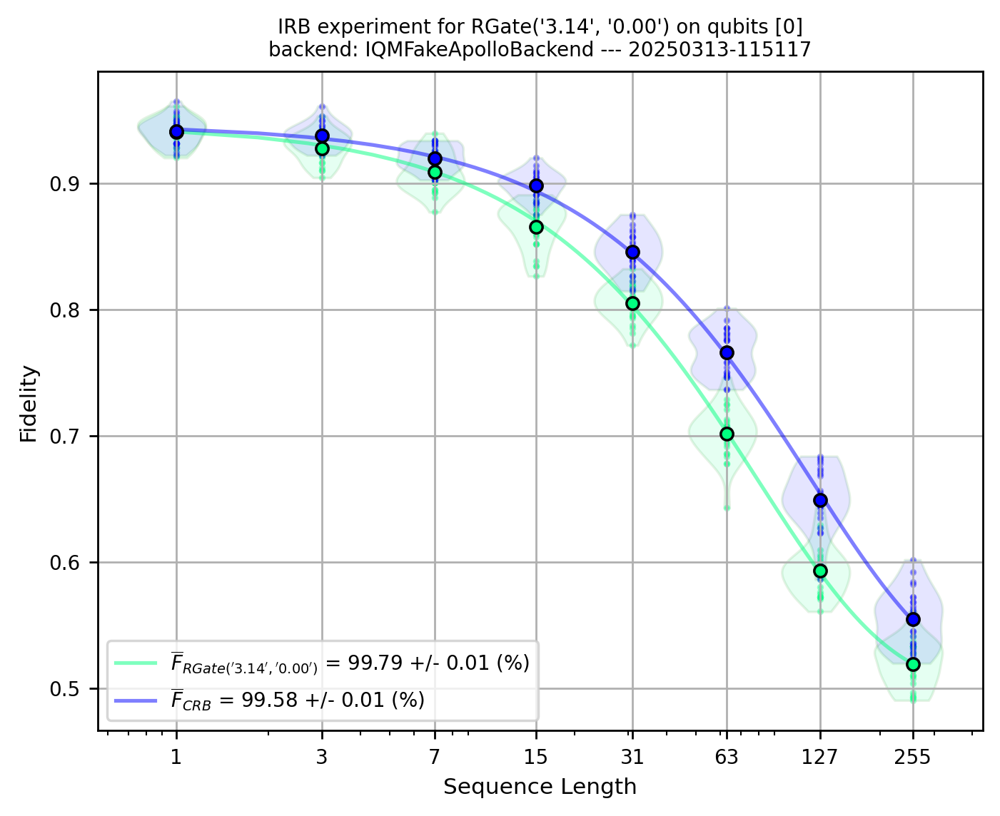

IQM Benchmarks: Summary Notebook#
%load_ext autoreload
%autoreload 2
Choose (or define) a backend#
#backend = "fakeadonis"
backend = "fakeapollo"
#backend = "garnet"
#backend = "deneb"
#from iqm.qiskit_iqm.iqm_provider import IQMProvider
#iqm_url="https:"
#provider = IQMProvider(iqm_url)
#backend = provider.get_backend()
Set IQM Token if using Resonance.#
# import os
# os.environ["IQM_TOKEN"] = ""
Clifford Randomized Benchmarking#
NB: Clifford RB is executed by default with Interleaved RB !
from iqm.benchmarks.randomized_benchmarking.clifford_rb.clifford_rb import *
EXAMPLE_CRB = CliffordRBConfiguration(
qubits_array=[[2,3]],#,[8,9],[13,14],[17,18],[5,6],[10,11],[15,16]],
sequence_lengths=[2**(m+1)-1 for m in range(7)],
num_circuit_samples=25,
shots=2**8,
calset_id=None,
parallel_execution=False,
)
benchmark_clifford_rb = CliffordRandomizedBenchmarking(backend, EXAMPLE_CRB)
run_clifford_rb = benchmark_clifford_rb.run()
2025-03-13 11:50:14,877 - iqm.benchmarks.logging_config - INFO - Clifford dictionaries imported successfully !
2025-03-13 11:50:14,877 - iqm.benchmarks.logging_config - INFO - Executing sequential Clifford RB on qubits [2, 3]. Will generate and submit all 25 Clifford RB circuits for each depth [1, 3, 7, 15, 31, 63, 127]
2025-03-13 11:50:14,877 - iqm.benchmarks.logging_config - INFO - Now at sequence length 1
2025-03-13 11:50:15,091 - iqm.benchmarks.logging_config - INFO - Now at sequence length 3
2025-03-13 11:50:15,517 - iqm.benchmarks.logging_config - INFO - Now at sequence length 7
2025-03-13 11:50:16,508 - iqm.benchmarks.logging_config - INFO - Now at sequence length 15
2025-03-13 11:50:18,507 - iqm.benchmarks.logging_config - INFO - Now at sequence length 31
2025-03-13 11:50:32,168 - iqm.benchmarks.logging_config - INFO - Now at sequence length 63
2025-03-13 11:50:40,188 - iqm.benchmarks.logging_config - INFO - Now at sequence length 127
2025-03-13 11:51:06,721 - iqm.benchmarks.logging_config - INFO - Submitting batch with 25 circuits corresponding to qubits [2, 3]
2025-03-13 11:51:06,754 - iqm.benchmarks.logging_config - INFO - Submitting batch with 25 circuits corresponding to qubits [2, 3]
2025-03-13 11:51:06,946 - iqm.benchmarks.logging_config - INFO - Submitting batch with 25 circuits corresponding to qubits [2, 3]
2025-03-13 11:51:07,357 - iqm.benchmarks.logging_config - INFO - Submitting batch with 25 circuits corresponding to qubits [2, 3]
2025-03-13 11:51:07,920 - iqm.benchmarks.logging_config - INFO - Submitting batch with 25 circuits corresponding to qubits [2, 3]
2025-03-13 11:51:08,807 - iqm.benchmarks.logging_config - INFO - Submitting batch with 25 circuits corresponding to qubits [2, 3]
2025-03-13 11:51:10,227 - iqm.benchmarks.logging_config - INFO - Submitting batch with 25 circuits corresponding to qubits [2, 3]
2025-03-13 11:51:11,932 - iqm.benchmarks.logging_config - INFO - All jobs for qubits [2, 3] and sequence lengths [1, 3, 7, 15, 31, 63, 127] submitted successfully!
2025-03-13 11:51:12,036 - iqm.benchmarks.logging_config - INFO - Retrieving all counts for qubits_[2, 3]_depth_1
2025-03-13 11:51:12,052 - iqm.benchmarks.logging_config - INFO - Adding counts of qubits [2, 3] and depth 1 run to the dataset
2025-03-13 11:51:13,447 - iqm.benchmarks.logging_config - INFO - Retrieving all counts for qubits_[2, 3]_depth_3
2025-03-13 11:51:13,448 - iqm.benchmarks.logging_config - INFO - Adding counts of qubits [2, 3] and depth 3 run to the dataset
2025-03-13 11:51:13,707 - iqm.benchmarks.logging_config - INFO - Retrieving all counts for qubits_[2, 3]_depth_7
2025-03-13 11:51:13,707 - iqm.benchmarks.logging_config - INFO - Adding counts of qubits [2, 3] and depth 7 run to the dataset
2025-03-13 11:51:13,967 - iqm.benchmarks.logging_config - INFO - Retrieving all counts for qubits_[2, 3]_depth_15
2025-03-13 11:51:13,967 - iqm.benchmarks.logging_config - INFO - Adding counts of qubits [2, 3] and depth 15 run to the dataset
2025-03-13 11:51:14,282 - iqm.benchmarks.logging_config - INFO - Retrieving all counts for qubits_[2, 3]_depth_31
2025-03-13 11:51:14,284 - iqm.benchmarks.logging_config - INFO - Adding counts of qubits [2, 3] and depth 31 run to the dataset
2025-03-13 11:51:14,576 - iqm.benchmarks.logging_config - INFO - Retrieving all counts for qubits_[2, 3]_depth_63
2025-03-13 11:51:14,578 - iqm.benchmarks.logging_config - INFO - Adding counts of qubits [2, 3] and depth 63 run to the dataset
2025-03-13 11:51:14,959 - iqm.benchmarks.logging_config - INFO - Retrieving all counts for qubits_[2, 3]_depth_127
2025-03-13 11:51:14,959 - iqm.benchmarks.logging_config - INFO - Adding counts of qubits [2, 3] and depth 127 run to the dataset
2025-03-13 11:51:15,324 - iqm.benchmarks.logging_config - INFO - RB experiment concluded !
result_clifford_rb = benchmark_clifford_rb.analyze()
2025-03-13 11:51:15,557 - iqm.benchmarks.logging_config - INFO - Post-processing sequential RB for qubits [[2, 3]]
2025-03-13 11:51:15,567 - iqm.benchmarks.logging_config - INFO - Qubits [2, 3] and depth 1
2025-03-13 11:51:15,576 - iqm.benchmarks.logging_config - INFO - Qubits [2, 3] and depth 3
2025-03-13 11:51:15,578 - iqm.benchmarks.logging_config - INFO - Qubits [2, 3] and depth 7
2025-03-13 11:51:15,590 - iqm.benchmarks.logging_config - INFO - Qubits [2, 3] and depth 15
2025-03-13 11:51:15,602 - iqm.benchmarks.logging_config - INFO - Qubits [2, 3] and depth 31
2025-03-13 11:51:15,611 - iqm.benchmarks.logging_config - INFO - Qubits [2, 3] and depth 63
2025-03-13 11:51:15,626 - iqm.benchmarks.logging_config - INFO - Qubits [2, 3] and depth 127
for plot in result_clifford_rb.plots.values():
display(plot)
Interleaved Randomized Benchmarking#
from iqm.benchmarks.randomized_benchmarking.interleaved_rb.interleaved_rb import *
import numpy as np
EXAMPLE_IRB_1Q = InterleavedRBConfiguration(
qubits_array=[[0],[1],[2],[3],[4]],
sequence_lengths=[2**(m+1)-1 for m in range(8)],
num_circuit_samples=25,
shots=2**9,
calset_id=None,
parallel_execution=False,
interleaved_gate = "RGate",
interleaved_gate_params = [np.pi, 0],
simultaneous_fit = ["amplitude", "offset"],
)
benchmark_irb_1Q = InterleavedRandomizedBenchmarking(backend, EXAMPLE_IRB_1Q)
run_irb_1Q = benchmark_irb_1Q.run()
2025-03-13 11:51:50,021 - iqm.benchmarks.logging_config - INFO - Clifford dictionaries imported successfully !
2025-03-13 11:51:50,599 - iqm.benchmarks.logging_config - INFO - Wxecuting sequential Clifford and Interleaved RB circuits on qubits [0]. Will generate and submit all 25 Clifford RB circuits for each depth [1, 3, 7, 15, 31, 63, 127, 255]
2025-03-13 11:51:50,599 - iqm.benchmarks.logging_config - INFO - Now at sequence length 1
2025-03-13 11:51:50,694 - iqm.benchmarks.logging_config - INFO - Now at sequence length 3
2025-03-13 11:51:50,807 - iqm.benchmarks.logging_config - INFO - Now at sequence length 7
2025-03-13 11:51:51,047 - iqm.benchmarks.logging_config - INFO - Now at sequence length 15
2025-03-13 11:51:51,588 - iqm.benchmarks.logging_config - INFO - Now at sequence length 31
2025-03-13 11:51:52,423 - iqm.benchmarks.logging_config - INFO - Now at sequence length 63
2025-03-13 11:51:54,401 - iqm.benchmarks.logging_config - INFO - Now at sequence length 127
2025-03-13 11:51:58,054 - iqm.benchmarks.logging_config - INFO - Now at sequence length 255
2025-03-13 11:52:20,348 - iqm.benchmarks.logging_config - INFO - Now at sequence length 1
2025-03-13 11:52:20,427 - iqm.benchmarks.logging_config - INFO - Now at sequence length 3
2025-03-13 11:52:20,571 - iqm.benchmarks.logging_config - INFO - Now at sequence length 7
2025-03-13 11:52:20,805 - iqm.benchmarks.logging_config - INFO - Now at sequence length 15
2025-03-13 11:52:21,364 - iqm.benchmarks.logging_config - INFO - Now at sequence length 31
2025-03-13 11:52:22,491 - iqm.benchmarks.logging_config - INFO - Now at sequence length 63
2025-03-13 11:52:25,445 - iqm.benchmarks.logging_config - INFO - Now at sequence length 127
2025-03-13 11:52:30,219 - iqm.benchmarks.logging_config - INFO - Now at sequence length 255
2025-03-13 11:52:37,479 - iqm.benchmarks.logging_config - INFO - Submitting batch with 25 circuits corresponding to qubits [0]
2025-03-13 11:52:37,482 - iqm.benchmarks.logging_config - INFO - Submitting batch with 25 circuits corresponding to qubits [0]
2025-03-13 11:52:37,550 - iqm.benchmarks.logging_config - INFO - Submitting batch with 25 circuits corresponding to qubits [0]
2025-03-13 11:52:37,589 - iqm.benchmarks.logging_config - INFO - Submitting batch with 25 circuits corresponding to qubits [0]
2025-03-13 11:52:37,623 - iqm.benchmarks.logging_config - INFO - Submitting batch with 25 circuits corresponding to qubits [0]
2025-03-13 11:52:37,807 - iqm.benchmarks.logging_config - INFO - Submitting batch with 25 circuits corresponding to qubits [0]
2025-03-13 11:52:38,558 - iqm.benchmarks.logging_config - INFO - Submitting batch with 25 circuits corresponding to qubits [0]
2025-03-13 11:52:39,218 - iqm.benchmarks.logging_config - INFO - Submitting batch with 25 circuits corresponding to qubits [0]
2025-03-13 11:52:40,328 - iqm.benchmarks.logging_config - INFO - Submitting batch with 25 circuits corresponding to qubits [0]
2025-03-13 11:52:40,631 - iqm.benchmarks.logging_config - INFO - Submitting batch with 25 circuits corresponding to qubits [0]
2025-03-13 11:52:40,810 - iqm.benchmarks.logging_config - INFO - Submitting batch with 25 circuits corresponding to qubits [0]
2025-03-13 11:52:40,871 - iqm.benchmarks.logging_config - INFO - Submitting batch with 25 circuits corresponding to qubits [0]
2025-03-13 11:52:40,938 - iqm.benchmarks.logging_config - INFO - Submitting batch with 25 circuits corresponding to qubits [0]
2025-03-13 11:52:41,340 - iqm.benchmarks.logging_config - INFO - Submitting batch with 25 circuits corresponding to qubits [0]
2025-03-13 11:52:41,750 - iqm.benchmarks.logging_config - INFO - Submitting batch with 25 circuits corresponding to qubits [0]
2025-03-13 11:52:58,567 - iqm.benchmarks.logging_config - INFO - Submitting batch with 25 circuits corresponding to qubits [0]
2025-03-13 11:53:00,411 - iqm.benchmarks.logging_config - INFO - All jobs for qubits [0] and sequence lengths [1, 3, 7, 15, 31, 63, 127, 255] submitted successfully!
2025-03-13 11:53:00,453 - iqm.benchmarks.logging_config - INFO - Wxecuting sequential Clifford and Interleaved RB circuits on qubits [1]. Will generate and submit all 25 Clifford RB circuits for each depth [1, 3, 7, 15, 31, 63, 127, 255]
2025-03-13 11:53:00,876 - iqm.benchmarks.logging_config - INFO - Now at sequence length 1
2025-03-13 11:53:01,249 - iqm.benchmarks.logging_config - INFO - Now at sequence length 3
2025-03-13 11:53:01,904 - iqm.benchmarks.logging_config - INFO - Now at sequence length 7
2025-03-13 11:53:02,909 - iqm.benchmarks.logging_config - INFO - Now at sequence length 15
2025-03-13 11:53:04,127 - iqm.benchmarks.logging_config - INFO - Now at sequence length 31
2025-03-13 11:53:05,430 - iqm.benchmarks.logging_config - INFO - Now at sequence length 63
2025-03-13 11:53:07,233 - iqm.benchmarks.logging_config - INFO - Now at sequence length 127
2025-03-13 11:53:11,519 - iqm.benchmarks.logging_config - INFO - Now at sequence length 255
2025-03-13 11:53:19,530 - iqm.benchmarks.logging_config - INFO - Now at sequence length 1
2025-03-13 11:53:19,611 - iqm.benchmarks.logging_config - INFO - Now at sequence length 3
2025-03-13 11:53:19,790 - iqm.benchmarks.logging_config - INFO - Now at sequence length 7
2025-03-13 11:53:20,187 - iqm.benchmarks.logging_config - INFO - Now at sequence length 15
2025-03-13 11:53:20,789 - iqm.benchmarks.logging_config - INFO - Now at sequence length 31
2025-03-13 11:53:22,154 - iqm.benchmarks.logging_config - INFO - Now at sequence length 63
2025-03-13 11:53:24,789 - iqm.benchmarks.logging_config - INFO - Now at sequence length 127
2025-03-13 11:53:47,635 - iqm.benchmarks.logging_config - INFO - Now at sequence length 255
2025-03-13 11:53:57,783 - iqm.benchmarks.logging_config - INFO - Submitting batch with 25 circuits corresponding to qubits [1]
2025-03-13 11:53:57,793 - iqm.benchmarks.logging_config - INFO - Submitting batch with 25 circuits corresponding to qubits [1]
2025-03-13 11:53:57,829 - iqm.benchmarks.logging_config - INFO - Submitting batch with 25 circuits corresponding to qubits [1]
2025-03-13 11:53:57,933 - iqm.benchmarks.logging_config - INFO - Submitting batch with 25 circuits corresponding to qubits [1]
2025-03-13 11:53:58,049 - iqm.benchmarks.logging_config - INFO - Submitting batch with 25 circuits corresponding to qubits [1]
2025-03-13 11:53:58,437 - iqm.benchmarks.logging_config - INFO - Submitting batch with 25 circuits corresponding to qubits [1]
2025-03-13 11:53:59,019 - iqm.benchmarks.logging_config - INFO - Submitting batch with 25 circuits corresponding to qubits [1]
2025-03-13 11:53:59,778 - iqm.benchmarks.logging_config - INFO - Submitting batch with 25 circuits corresponding to qubits [1]
2025-03-13 11:54:01,334 - iqm.benchmarks.logging_config - INFO - Submitting batch with 25 circuits corresponding to qubits [1]
2025-03-13 11:54:01,913 - iqm.benchmarks.logging_config - INFO - Submitting batch with 25 circuits corresponding to qubits [1]
2025-03-13 11:54:02,008 - iqm.benchmarks.logging_config - INFO - Submitting batch with 25 circuits corresponding to qubits [1]
2025-03-13 11:54:02,095 - iqm.benchmarks.logging_config - INFO - Submitting batch with 25 circuits corresponding to qubits [1]
2025-03-13 11:54:02,260 - iqm.benchmarks.logging_config - INFO - Submitting batch with 25 circuits corresponding to qubits [1]
2025-03-13 11:54:02,881 - iqm.benchmarks.logging_config - INFO - Submitting batch with 25 circuits corresponding to qubits [1]
2025-03-13 11:54:03,423 - iqm.benchmarks.logging_config - INFO - Submitting batch with 25 circuits corresponding to qubits [1]
2025-03-13 11:54:04,710 - iqm.benchmarks.logging_config - INFO - Submitting batch with 25 circuits corresponding to qubits [1]
2025-03-13 11:54:06,819 - iqm.benchmarks.logging_config - INFO - All jobs for qubits [1] and sequence lengths [1, 3, 7, 15, 31, 63, 127, 255] submitted successfully!
2025-03-13 11:54:07,028 - iqm.benchmarks.logging_config - INFO - Wxecuting sequential Clifford and Interleaved RB circuits on qubits [2]. Will generate and submit all 25 Clifford RB circuits for each depth [1, 3, 7, 15, 31, 63, 127, 255]
2025-03-13 11:54:07,153 - iqm.benchmarks.logging_config - INFO - Now at sequence length 1
2025-03-13 11:54:07,319 - iqm.benchmarks.logging_config - INFO - Now at sequence length 3
2025-03-13 11:54:07,883 - iqm.benchmarks.logging_config - INFO - Now at sequence length 7
2025-03-13 11:54:08,330 - iqm.benchmarks.logging_config - INFO - Now at sequence length 15
2025-03-13 11:54:09,909 - iqm.benchmarks.logging_config - INFO - Now at sequence length 31
2025-03-13 11:54:11,579 - iqm.benchmarks.logging_config - INFO - Now at sequence length 63
2025-03-13 11:54:13,590 - iqm.benchmarks.logging_config - INFO - Now at sequence length 127
2025-03-13 11:54:17,620 - iqm.benchmarks.logging_config - INFO - Now at sequence length 255
2025-03-13 11:54:48,133 - iqm.benchmarks.logging_config - INFO - Now at sequence length 1
2025-03-13 11:54:48,210 - iqm.benchmarks.logging_config - INFO - Now at sequence length 3
2025-03-13 11:54:48,358 - iqm.benchmarks.logging_config - INFO - Now at sequence length 7
2025-03-13 11:54:48,709 - iqm.benchmarks.logging_config - INFO - Now at sequence length 15
2025-03-13 11:54:49,382 - iqm.benchmarks.logging_config - INFO - Now at sequence length 31
2025-03-13 11:54:50,649 - iqm.benchmarks.logging_config - INFO - Now at sequence length 63
2025-03-13 11:54:53,310 - iqm.benchmarks.logging_config - INFO - Now at sequence length 127
2025-03-13 11:54:58,549 - iqm.benchmarks.logging_config - INFO - Now at sequence length 255
2025-03-13 11:55:08,326 - iqm.benchmarks.logging_config - INFO - Submitting batch with 25 circuits corresponding to qubits [2]
2025-03-13 11:55:08,330 - iqm.benchmarks.logging_config - INFO - Submitting batch with 25 circuits corresponding to qubits [2]
2025-03-13 11:55:08,471 - iqm.benchmarks.logging_config - INFO - Submitting batch with 25 circuits corresponding to qubits [2]
2025-03-13 11:55:08,529 - iqm.benchmarks.logging_config - INFO - Submitting batch with 25 circuits corresponding to qubits [2]
2025-03-13 11:55:08,679 - iqm.benchmarks.logging_config - INFO - Submitting batch with 25 circuits corresponding to qubits [2]
2025-03-13 11:55:09,515 - iqm.benchmarks.logging_config - INFO - Submitting batch with 25 circuits corresponding to qubits [2]
2025-03-13 11:55:10,256 - iqm.benchmarks.logging_config - INFO - Submitting batch with 25 circuits corresponding to qubits [2]
2025-03-13 11:55:11,169 - iqm.benchmarks.logging_config - INFO - Submitting batch with 25 circuits corresponding to qubits [2]
2025-03-13 11:55:13,083 - iqm.benchmarks.logging_config - INFO - Submitting batch with 25 circuits corresponding to qubits [2]
2025-03-13 11:55:13,161 - iqm.benchmarks.logging_config - INFO - Submitting batch with 25 circuits corresponding to qubits [2]
2025-03-13 11:55:13,310 - iqm.benchmarks.logging_config - INFO - Submitting batch with 25 circuits corresponding to qubits [2]
2025-03-13 11:55:13,779 - iqm.benchmarks.logging_config - INFO - Submitting batch with 25 circuits corresponding to qubits [2]
2025-03-13 11:55:14,009 - iqm.benchmarks.logging_config - INFO - Submitting batch with 25 circuits corresponding to qubits [2]
2025-03-13 11:55:14,732 - iqm.benchmarks.logging_config - INFO - Submitting batch with 25 circuits corresponding to qubits [2]
2025-03-13 11:55:15,560 - iqm.benchmarks.logging_config - INFO - Submitting batch with 25 circuits corresponding to qubits [2]
2025-03-13 11:55:16,840 - iqm.benchmarks.logging_config - INFO - Submitting batch with 25 circuits corresponding to qubits [2]
2025-03-13 11:55:18,943 - iqm.benchmarks.logging_config - INFO - All jobs for qubits [2] and sequence lengths [1, 3, 7, 15, 31, 63, 127, 255] submitted successfully!
2025-03-13 11:55:19,071 - iqm.benchmarks.logging_config - INFO - Wxecuting sequential Clifford and Interleaved RB circuits on qubits [3]. Will generate and submit all 25 Clifford RB circuits for each depth [1, 3, 7, 15, 31, 63, 127, 255]
2025-03-13 11:55:19,182 - iqm.benchmarks.logging_config - INFO - Now at sequence length 1
2025-03-13 11:55:19,348 - iqm.benchmarks.logging_config - INFO - Now at sequence length 3
2025-03-13 11:55:19,976 - iqm.benchmarks.logging_config - INFO - Now at sequence length 7
2025-03-13 11:55:20,553 - iqm.benchmarks.logging_config - INFO - Now at sequence length 15
2025-03-13 11:55:21,781 - iqm.benchmarks.logging_config - INFO - Now at sequence length 31
2025-03-13 11:55:22,703 - iqm.benchmarks.logging_config - INFO - Now at sequence length 63
2025-03-13 11:55:46,310 - iqm.benchmarks.logging_config - INFO - Now at sequence length 127
2025-03-13 11:55:50,290 - iqm.benchmarks.logging_config - INFO - Now at sequence length 255
2025-03-13 11:55:58,554 - iqm.benchmarks.logging_config - INFO - Now at sequence length 1
2025-03-13 11:55:58,639 - iqm.benchmarks.logging_config - INFO - Now at sequence length 3
2025-03-13 11:55:58,823 - iqm.benchmarks.logging_config - INFO - Now at sequence length 7
2025-03-13 11:55:59,179 - iqm.benchmarks.logging_config - INFO - Now at sequence length 15
2025-03-13 11:55:59,859 - iqm.benchmarks.logging_config - INFO - Now at sequence length 31
2025-03-13 11:56:01,175 - iqm.benchmarks.logging_config - INFO - Now at sequence length 63
2025-03-13 11:56:03,999 - iqm.benchmarks.logging_config - INFO - Now at sequence length 127
2025-03-13 11:56:09,114 - iqm.benchmarks.logging_config - INFO - Now at sequence length 255
2025-03-13 11:56:18,338 - iqm.benchmarks.logging_config - INFO - Submitting batch with 25 circuits corresponding to qubits [3]
2025-03-13 11:56:18,348 - iqm.benchmarks.logging_config - INFO - Submitting batch with 25 circuits corresponding to qubits [3]
2025-03-13 11:56:18,425 - iqm.benchmarks.logging_config - INFO - Submitting batch with 25 circuits corresponding to qubits [3]
2025-03-13 11:56:18,480 - iqm.benchmarks.logging_config - INFO - Submitting batch with 25 circuits corresponding to qubits [3]
2025-03-13 11:56:18,821 - iqm.benchmarks.logging_config - INFO - Submitting batch with 25 circuits corresponding to qubits [3]
2025-03-13 11:56:18,900 - iqm.benchmarks.logging_config - INFO - Submitting batch with 25 circuits corresponding to qubits [3]
2025-03-13 11:56:19,168 - iqm.benchmarks.logging_config - INFO - Submitting batch with 25 circuits corresponding to qubits [3]
2025-03-13 11:56:20,070 - iqm.benchmarks.logging_config - INFO - Submitting batch with 25 circuits corresponding to qubits [3]
2025-03-13 11:56:21,475 - iqm.benchmarks.logging_config - INFO - Submitting batch with 25 circuits corresponding to qubits [3]
2025-03-13 11:56:21,558 - iqm.benchmarks.logging_config - INFO - Submitting batch with 25 circuits corresponding to qubits [3]
2025-03-13 11:56:22,000 - iqm.benchmarks.logging_config - INFO - Submitting batch with 25 circuits corresponding to qubits [3]
2025-03-13 11:56:22,120 - iqm.benchmarks.logging_config - INFO - Submitting batch with 25 circuits corresponding to qubits [3]
2025-03-13 11:56:22,250 - iqm.benchmarks.logging_config - INFO - Submitting batch with 25 circuits corresponding to qubits [3]
2025-03-13 11:56:22,775 - iqm.benchmarks.logging_config - INFO - Submitting batch with 25 circuits corresponding to qubits [3]
2025-03-13 11:56:23,259 - iqm.benchmarks.logging_config - INFO - Submitting batch with 25 circuits corresponding to qubits [3]
2025-03-13 11:56:24,598 - iqm.benchmarks.logging_config - INFO - Submitting batch with 25 circuits corresponding to qubits [3]
2025-03-13 11:56:50,793 - iqm.benchmarks.logging_config - INFO - All jobs for qubits [3] and sequence lengths [1, 3, 7, 15, 31, 63, 127, 255] submitted successfully!
2025-03-13 11:56:51,178 - iqm.benchmarks.logging_config - INFO - Wxecuting sequential Clifford and Interleaved RB circuits on qubits [4]. Will generate and submit all 25 Clifford RB circuits for each depth [1, 3, 7, 15, 31, 63, 127, 255]
2025-03-13 11:56:51,352 - iqm.benchmarks.logging_config - INFO - Now at sequence length 1
2025-03-13 11:56:51,648 - iqm.benchmarks.logging_config - INFO - Now at sequence length 3
2025-03-13 11:56:52,412 - iqm.benchmarks.logging_config - INFO - Now at sequence length 7
2025-03-13 11:56:52,932 - iqm.benchmarks.logging_config - INFO - Now at sequence length 15
2025-03-13 11:56:55,044 - iqm.benchmarks.logging_config - INFO - Now at sequence length 31
2025-03-13 11:56:55,874 - iqm.benchmarks.logging_config - INFO - Now at sequence length 63
2025-03-13 11:56:57,554 - iqm.benchmarks.logging_config - INFO - Now at sequence length 127
2025-03-13 11:57:00,991 - iqm.benchmarks.logging_config - INFO - Now at sequence length 255
2025-03-13 11:57:07,229 - iqm.benchmarks.logging_config - INFO - Now at sequence length 1
2025-03-13 11:57:07,319 - iqm.benchmarks.logging_config - INFO - Now at sequence length 3
2025-03-13 11:57:07,482 - iqm.benchmarks.logging_config - INFO - Now at sequence length 7
2025-03-13 11:57:07,690 - iqm.benchmarks.logging_config - INFO - Now at sequence length 15
2025-03-13 11:57:08,149 - iqm.benchmarks.logging_config - INFO - Now at sequence length 31
2025-03-13 11:57:09,011 - iqm.benchmarks.logging_config - INFO - Now at sequence length 63
2025-03-13 11:57:10,861 - iqm.benchmarks.logging_config - INFO - Now at sequence length 127
2025-03-13 11:57:14,600 - iqm.benchmarks.logging_config - INFO - Now at sequence length 255
2025-03-13 11:57:23,770 - iqm.benchmarks.logging_config - INFO - Submitting batch with 25 circuits corresponding to qubits [4]
2025-03-13 11:57:23,782 - iqm.benchmarks.logging_config - INFO - Submitting batch with 25 circuits corresponding to qubits [4]
2025-03-13 11:57:23,899 - iqm.benchmarks.logging_config - INFO - Submitting batch with 25 circuits corresponding to qubits [4]
2025-03-13 11:57:23,955 - iqm.benchmarks.logging_config - INFO - Submitting batch with 25 circuits corresponding to qubits [4]
2025-03-13 11:57:24,059 - iqm.benchmarks.logging_config - INFO - Submitting batch with 25 circuits corresponding to qubits [4]
2025-03-13 11:57:24,455 - iqm.benchmarks.logging_config - INFO - Submitting batch with 25 circuits corresponding to qubits [4]
2025-03-13 11:57:24,888 - iqm.benchmarks.logging_config - INFO - Submitting batch with 25 circuits corresponding to qubits [4]
2025-03-13 11:57:25,565 - iqm.benchmarks.logging_config - INFO - Submitting batch with 25 circuits corresponding to qubits [4]
2025-03-13 11:57:26,689 - iqm.benchmarks.logging_config - INFO - Submitting batch with 25 circuits corresponding to qubits [4]
2025-03-13 11:57:26,694 - iqm.benchmarks.logging_config - INFO - Submitting batch with 25 circuits corresponding to qubits [4]
2025-03-13 11:57:26,739 - iqm.benchmarks.logging_config - INFO - Submitting batch with 25 circuits corresponding to qubits [4]
2025-03-13 11:57:26,793 - iqm.benchmarks.logging_config - INFO - Submitting batch with 25 circuits corresponding to qubits [4]
2025-03-13 11:57:27,199 - iqm.benchmarks.logging_config - INFO - Submitting batch with 25 circuits corresponding to qubits [4]
2025-03-13 11:57:27,346 - iqm.benchmarks.logging_config - INFO - Submitting batch with 25 circuits corresponding to qubits [4]
2025-03-13 11:57:28,024 - iqm.benchmarks.logging_config - INFO - Submitting batch with 25 circuits corresponding to qubits [4]
2025-03-13 11:57:29,009 - iqm.benchmarks.logging_config - INFO - Submitting batch with 25 circuits corresponding to qubits [4]
2025-03-13 11:57:30,850 - iqm.benchmarks.logging_config - INFO - All jobs for qubits [4] and sequence lengths [1, 3, 7, 15, 31, 63, 127, 255] submitted successfully!
2025-03-13 11:57:55,334 - iqm.benchmarks.logging_config - INFO - Retrieving all counts for clifford_qubits_[0]_depth_1
2025-03-13 11:57:55,460 - iqm.benchmarks.logging_config - INFO - Adding counts of qubits [0] and depth 1 run to the dataset
2025-03-13 11:57:58,299 - iqm.benchmarks.logging_config - INFO - Retrieving all counts for clifford_qubits_[0]_depth_3
2025-03-13 11:57:58,299 - iqm.benchmarks.logging_config - INFO - Adding counts of qubits [0] and depth 3 run to the dataset
2025-03-13 11:57:58,570 - iqm.benchmarks.logging_config - INFO - Retrieving all counts for clifford_qubits_[0]_depth_7
2025-03-13 11:57:58,570 - iqm.benchmarks.logging_config - INFO - Adding counts of qubits [0] and depth 7 run to the dataset
2025-03-13 11:57:58,819 - iqm.benchmarks.logging_config - INFO - Retrieving all counts for clifford_qubits_[0]_depth_15
2025-03-13 11:57:58,819 - iqm.benchmarks.logging_config - INFO - Adding counts of qubits [0] and depth 15 run to the dataset
2025-03-13 11:57:59,088 - iqm.benchmarks.logging_config - INFO - Retrieving all counts for clifford_qubits_[0]_depth_31
2025-03-13 11:57:59,088 - iqm.benchmarks.logging_config - INFO - Adding counts of qubits [0] and depth 31 run to the dataset
2025-03-13 11:57:59,377 - iqm.benchmarks.logging_config - INFO - Retrieving all counts for clifford_qubits_[0]_depth_63
2025-03-13 11:57:59,379 - iqm.benchmarks.logging_config - INFO - Adding counts of qubits [0] and depth 63 run to the dataset
2025-03-13 11:57:59,698 - iqm.benchmarks.logging_config - INFO - Retrieving all counts for clifford_qubits_[0]_depth_127
2025-03-13 11:57:59,700 - iqm.benchmarks.logging_config - INFO - Adding counts of qubits [0] and depth 127 run to the dataset
2025-03-13 11:58:00,150 - iqm.benchmarks.logging_config - INFO - Retrieving all counts for clifford_qubits_[0]_depth_255
2025-03-13 11:58:00,153 - iqm.benchmarks.logging_config - INFO - Adding counts of qubits [0] and depth 255 run to the dataset
2025-03-13 11:58:00,593 - iqm.benchmarks.logging_config - INFO - Retrieving all counts for clifford_qubits_[1]_depth_1
2025-03-13 11:58:00,594 - iqm.benchmarks.logging_config - INFO - Adding counts of qubits [1] and depth 1 run to the dataset
2025-03-13 11:58:01,009 - iqm.benchmarks.logging_config - INFO - Retrieving all counts for clifford_qubits_[1]_depth_3
2025-03-13 11:58:01,009 - iqm.benchmarks.logging_config - INFO - Adding counts of qubits [1] and depth 3 run to the dataset
2025-03-13 11:58:01,388 - iqm.benchmarks.logging_config - INFO - Retrieving all counts for clifford_qubits_[1]_depth_7
2025-03-13 11:58:01,389 - iqm.benchmarks.logging_config - INFO - Adding counts of qubits [1] and depth 7 run to the dataset
2025-03-13 11:58:02,013 - iqm.benchmarks.logging_config - INFO - Retrieving all counts for clifford_qubits_[1]_depth_15
2025-03-13 11:58:02,019 - iqm.benchmarks.logging_config - INFO - Adding counts of qubits [1] and depth 15 run to the dataset
2025-03-13 11:58:02,659 - iqm.benchmarks.logging_config - INFO - Retrieving all counts for clifford_qubits_[1]_depth_31
2025-03-13 11:58:02,659 - iqm.benchmarks.logging_config - INFO - Adding counts of qubits [1] and depth 31 run to the dataset
2025-03-13 11:58:03,110 - iqm.benchmarks.logging_config - INFO - Retrieving all counts for clifford_qubits_[1]_depth_63
2025-03-13 11:58:03,118 - iqm.benchmarks.logging_config - INFO - Adding counts of qubits [1] and depth 63 run to the dataset
2025-03-13 11:58:03,704 - iqm.benchmarks.logging_config - INFO - Retrieving all counts for clifford_qubits_[1]_depth_127
2025-03-13 11:58:03,708 - iqm.benchmarks.logging_config - INFO - Adding counts of qubits [1] and depth 127 run to the dataset
2025-03-13 11:58:04,369 - iqm.benchmarks.logging_config - INFO - Retrieving all counts for clifford_qubits_[1]_depth_255
2025-03-13 11:58:04,371 - iqm.benchmarks.logging_config - INFO - Adding counts of qubits [1] and depth 255 run to the dataset
2025-03-13 11:58:05,054 - iqm.benchmarks.logging_config - INFO - Retrieving all counts for clifford_qubits_[2]_depth_1
2025-03-13 11:58:05,058 - iqm.benchmarks.logging_config - INFO - Adding counts of qubits [2] and depth 1 run to the dataset
2025-03-13 11:58:05,650 - iqm.benchmarks.logging_config - INFO - Retrieving all counts for clifford_qubits_[2]_depth_3
2025-03-13 11:58:05,650 - iqm.benchmarks.logging_config - INFO - Adding counts of qubits [2] and depth 3 run to the dataset
2025-03-13 11:58:06,490 - iqm.benchmarks.logging_config - INFO - Retrieving all counts for clifford_qubits_[2]_depth_7
2025-03-13 11:58:06,490 - iqm.benchmarks.logging_config - INFO - Adding counts of qubits [2] and depth 7 run to the dataset
2025-03-13 11:58:07,210 - iqm.benchmarks.logging_config - INFO - Retrieving all counts for clifford_qubits_[2]_depth_15
2025-03-13 11:58:07,218 - iqm.benchmarks.logging_config - INFO - Adding counts of qubits [2] and depth 15 run to the dataset
2025-03-13 11:58:07,834 - iqm.benchmarks.logging_config - INFO - Retrieving all counts for clifford_qubits_[2]_depth_31
2025-03-13 11:58:07,834 - iqm.benchmarks.logging_config - INFO - Adding counts of qubits [2] and depth 31 run to the dataset
2025-03-13 11:58:08,682 - iqm.benchmarks.logging_config - INFO - Retrieving all counts for clifford_qubits_[2]_depth_63
2025-03-13 11:58:08,682 - iqm.benchmarks.logging_config - INFO - Adding counts of qubits [2] and depth 63 run to the dataset
2025-03-13 11:58:09,450 - iqm.benchmarks.logging_config - INFO - Retrieving all counts for clifford_qubits_[2]_depth_127
2025-03-13 11:58:09,453 - iqm.benchmarks.logging_config - INFO - Adding counts of qubits [2] and depth 127 run to the dataset
2025-03-13 11:58:10,240 - iqm.benchmarks.logging_config - INFO - Retrieving all counts for clifford_qubits_[2]_depth_255
2025-03-13 11:58:10,240 - iqm.benchmarks.logging_config - INFO - Adding counts of qubits [2] and depth 255 run to the dataset
2025-03-13 11:58:11,188 - iqm.benchmarks.logging_config - INFO - Retrieving all counts for clifford_qubits_[3]_depth_1
2025-03-13 11:58:11,189 - iqm.benchmarks.logging_config - INFO - Adding counts of qubits [3] and depth 1 run to the dataset
2025-03-13 11:58:12,231 - iqm.benchmarks.logging_config - INFO - Retrieving all counts for clifford_qubits_[3]_depth_3
2025-03-13 11:58:12,231 - iqm.benchmarks.logging_config - INFO - Adding counts of qubits [3] and depth 3 run to the dataset
2025-03-13 11:58:13,500 - iqm.benchmarks.logging_config - INFO - Retrieving all counts for clifford_qubits_[3]_depth_7
2025-03-13 11:58:13,500 - iqm.benchmarks.logging_config - INFO - Adding counts of qubits [3] and depth 7 run to the dataset
2025-03-13 11:58:14,570 - iqm.benchmarks.logging_config - INFO - Retrieving all counts for clifford_qubits_[3]_depth_15
2025-03-13 11:58:14,570 - iqm.benchmarks.logging_config - INFO - Adding counts of qubits [3] and depth 15 run to the dataset
2025-03-13 11:58:15,660 - iqm.benchmarks.logging_config - INFO - Retrieving all counts for clifford_qubits_[3]_depth_31
2025-03-13 11:58:15,660 - iqm.benchmarks.logging_config - INFO - Adding counts of qubits [3] and depth 31 run to the dataset
2025-03-13 11:58:17,018 - iqm.benchmarks.logging_config - INFO - Retrieving all counts for clifford_qubits_[3]_depth_63
2025-03-13 11:58:17,019 - iqm.benchmarks.logging_config - INFO - Adding counts of qubits [3] and depth 63 run to the dataset
2025-03-13 11:58:18,550 - iqm.benchmarks.logging_config - INFO - Retrieving all counts for clifford_qubits_[3]_depth_127
2025-03-13 11:58:18,550 - iqm.benchmarks.logging_config - INFO - Adding counts of qubits [3] and depth 127 run to the dataset
2025-03-13 11:58:19,939 - iqm.benchmarks.logging_config - INFO - Retrieving all counts for clifford_qubits_[3]_depth_255
2025-03-13 11:58:19,939 - iqm.benchmarks.logging_config - INFO - Adding counts of qubits [3] and depth 255 run to the dataset
2025-03-13 11:58:21,755 - iqm.benchmarks.logging_config - INFO - Retrieving all counts for clifford_qubits_[4]_depth_1
2025-03-13 11:58:21,759 - iqm.benchmarks.logging_config - INFO - Adding counts of qubits [4] and depth 1 run to the dataset
2025-03-13 11:58:23,484 - iqm.benchmarks.logging_config - INFO - Retrieving all counts for clifford_qubits_[4]_depth_3
2025-03-13 11:58:23,487 - iqm.benchmarks.logging_config - INFO - Adding counts of qubits [4] and depth 3 run to the dataset
2025-03-13 11:58:25,164 - iqm.benchmarks.logging_config - INFO - Retrieving all counts for clifford_qubits_[4]_depth_7
2025-03-13 11:58:25,164 - iqm.benchmarks.logging_config - INFO - Adding counts of qubits [4] and depth 7 run to the dataset
2025-03-13 11:58:27,098 - iqm.benchmarks.logging_config - INFO - Retrieving all counts for clifford_qubits_[4]_depth_15
2025-03-13 11:58:27,098 - iqm.benchmarks.logging_config - INFO - Adding counts of qubits [4] and depth 15 run to the dataset
2025-03-13 11:58:28,970 - iqm.benchmarks.logging_config - INFO - Retrieving all counts for clifford_qubits_[4]_depth_31
2025-03-13 11:58:28,970 - iqm.benchmarks.logging_config - INFO - Adding counts of qubits [4] and depth 31 run to the dataset
2025-03-13 11:58:31,013 - iqm.benchmarks.logging_config - INFO - Retrieving all counts for clifford_qubits_[4]_depth_63
2025-03-13 11:58:31,018 - iqm.benchmarks.logging_config - INFO - Adding counts of qubits [4] and depth 63 run to the dataset
2025-03-13 11:58:33,116 - iqm.benchmarks.logging_config - INFO - Retrieving all counts for clifford_qubits_[4]_depth_127
2025-03-13 11:58:33,118 - iqm.benchmarks.logging_config - INFO - Adding counts of qubits [4] and depth 127 run to the dataset
2025-03-13 11:58:35,363 - iqm.benchmarks.logging_config - INFO - Retrieving all counts for clifford_qubits_[4]_depth_255
2025-03-13 11:58:35,363 - iqm.benchmarks.logging_config - INFO - Adding counts of qubits [4] and depth 255 run to the dataset
2025-03-13 11:58:37,760 - iqm.benchmarks.logging_config - INFO - Retrieving all counts for interleaved_qubits_[0]_depth_1
2025-03-13 11:58:37,760 - iqm.benchmarks.logging_config - INFO - Adding counts of qubits [0] and depth 1 run to the dataset
2025-03-13 11:58:42,109 - iqm.benchmarks.logging_config - INFO - Retrieving all counts for interleaved_qubits_[0]_depth_3
2025-03-13 11:58:42,110 - iqm.benchmarks.logging_config - INFO - Adding counts of qubits [0] and depth 3 run to the dataset
2025-03-13 11:58:45,720 - iqm.benchmarks.logging_config - INFO - Retrieving all counts for interleaved_qubits_[0]_depth_7
2025-03-13 11:58:45,726 - iqm.benchmarks.logging_config - INFO - Adding counts of qubits [0] and depth 7 run to the dataset
2025-03-13 11:58:48,498 - iqm.benchmarks.logging_config - INFO - Retrieving all counts for interleaved_qubits_[0]_depth_15
2025-03-13 11:58:48,504 - iqm.benchmarks.logging_config - INFO - Adding counts of qubits [0] and depth 15 run to the dataset
2025-03-13 11:58:53,091 - iqm.benchmarks.logging_config - INFO - Retrieving all counts for interleaved_qubits_[0]_depth_31
2025-03-13 11:58:53,091 - iqm.benchmarks.logging_config - INFO - Adding counts of qubits [0] and depth 31 run to the dataset
2025-03-13 11:58:57,329 - iqm.benchmarks.logging_config - INFO - Retrieving all counts for interleaved_qubits_[0]_depth_63
2025-03-13 11:58:57,329 - iqm.benchmarks.logging_config - INFO - Adding counts of qubits [0] and depth 63 run to the dataset
2025-03-13 11:59:00,937 - iqm.benchmarks.logging_config - INFO - Retrieving all counts for interleaved_qubits_[0]_depth_127
2025-03-13 11:59:00,939 - iqm.benchmarks.logging_config - INFO - Adding counts of qubits [0] and depth 127 run to the dataset
2025-03-13 11:59:05,320 - iqm.benchmarks.logging_config - INFO - Retrieving all counts for interleaved_qubits_[0]_depth_255
2025-03-13 11:59:05,320 - iqm.benchmarks.logging_config - INFO - Adding counts of qubits [0] and depth 255 run to the dataset
2025-03-13 11:59:09,270 - iqm.benchmarks.logging_config - INFO - Retrieving all counts for interleaved_qubits_[1]_depth_1
2025-03-13 11:59:09,270 - iqm.benchmarks.logging_config - INFO - Adding counts of qubits [1] and depth 1 run to the dataset
2025-03-13 11:59:12,702 - iqm.benchmarks.logging_config - INFO - Retrieving all counts for interleaved_qubits_[1]_depth_3
2025-03-13 11:59:12,702 - iqm.benchmarks.logging_config - INFO - Adding counts of qubits [1] and depth 3 run to the dataset
2025-03-13 11:59:16,181 - iqm.benchmarks.logging_config - INFO - Retrieving all counts for interleaved_qubits_[1]_depth_7
2025-03-13 11:59:16,185 - iqm.benchmarks.logging_config - INFO - Adding counts of qubits [1] and depth 7 run to the dataset
2025-03-13 11:59:20,683 - iqm.benchmarks.logging_config - INFO - Retrieving all counts for interleaved_qubits_[1]_depth_15
2025-03-13 11:59:20,687 - iqm.benchmarks.logging_config - INFO - Adding counts of qubits [1] and depth 15 run to the dataset
2025-03-13 11:59:25,040 - iqm.benchmarks.logging_config - INFO - Retrieving all counts for interleaved_qubits_[1]_depth_31
2025-03-13 11:59:25,040 - iqm.benchmarks.logging_config - INFO - Adding counts of qubits [1] and depth 31 run to the dataset
2025-03-13 11:59:29,761 - iqm.benchmarks.logging_config - INFO - Retrieving all counts for interleaved_qubits_[1]_depth_63
2025-03-13 11:59:29,761 - iqm.benchmarks.logging_config - INFO - Adding counts of qubits [1] and depth 63 run to the dataset
2025-03-13 11:59:34,148 - iqm.benchmarks.logging_config - INFO - Retrieving all counts for interleaved_qubits_[1]_depth_127
2025-03-13 11:59:34,148 - iqm.benchmarks.logging_config - INFO - Adding counts of qubits [1] and depth 127 run to the dataset
2025-03-13 11:59:38,136 - iqm.benchmarks.logging_config - INFO - Retrieving all counts for interleaved_qubits_[1]_depth_255
2025-03-13 11:59:38,136 - iqm.benchmarks.logging_config - INFO - Adding counts of qubits [1] and depth 255 run to the dataset
2025-03-13 11:59:42,759 - iqm.benchmarks.logging_config - INFO - Retrieving all counts for interleaved_qubits_[2]_depth_1
2025-03-13 11:59:42,759 - iqm.benchmarks.logging_config - INFO - Adding counts of qubits [2] and depth 1 run to the dataset
2025-03-13 11:59:47,010 - iqm.benchmarks.logging_config - INFO - Retrieving all counts for interleaved_qubits_[2]_depth_3
2025-03-13 11:59:47,010 - iqm.benchmarks.logging_config - INFO - Adding counts of qubits [2] and depth 3 run to the dataset
2025-03-13 11:59:51,205 - iqm.benchmarks.logging_config - INFO - Retrieving all counts for interleaved_qubits_[2]_depth_7
2025-03-13 11:59:51,205 - iqm.benchmarks.logging_config - INFO - Adding counts of qubits [2] and depth 7 run to the dataset
2025-03-13 11:59:55,468 - iqm.benchmarks.logging_config - INFO - Retrieving all counts for interleaved_qubits_[2]_depth_15
2025-03-13 11:59:55,484 - iqm.benchmarks.logging_config - INFO - Adding counts of qubits [2] and depth 15 run to the dataset
2025-03-13 11:59:59,919 - iqm.benchmarks.logging_config - INFO - Retrieving all counts for interleaved_qubits_[2]_depth_31
2025-03-13 11:59:59,919 - iqm.benchmarks.logging_config - INFO - Adding counts of qubits [2] and depth 31 run to the dataset
2025-03-13 12:00:04,829 - iqm.benchmarks.logging_config - INFO - Retrieving all counts for interleaved_qubits_[2]_depth_63
2025-03-13 12:00:04,829 - iqm.benchmarks.logging_config - INFO - Adding counts of qubits [2] and depth 63 run to the dataset
2025-03-13 12:00:09,562 - iqm.benchmarks.logging_config - INFO - Retrieving all counts for interleaved_qubits_[2]_depth_127
2025-03-13 12:00:09,562 - iqm.benchmarks.logging_config - INFO - Adding counts of qubits [2] and depth 127 run to the dataset
2025-03-13 12:00:14,370 - iqm.benchmarks.logging_config - INFO - Retrieving all counts for interleaved_qubits_[2]_depth_255
2025-03-13 12:00:14,370 - iqm.benchmarks.logging_config - INFO - Adding counts of qubits [2] and depth 255 run to the dataset
2025-03-13 12:00:20,884 - iqm.benchmarks.logging_config - INFO - Retrieving all counts for interleaved_qubits_[3]_depth_1
2025-03-13 12:00:20,884 - iqm.benchmarks.logging_config - INFO - Adding counts of qubits [3] and depth 1 run to the dataset
2025-03-13 12:00:27,172 - iqm.benchmarks.logging_config - INFO - Retrieving all counts for interleaved_qubits_[3]_depth_3
2025-03-13 12:00:27,172 - iqm.benchmarks.logging_config - INFO - Adding counts of qubits [3] and depth 3 run to the dataset
2025-03-13 12:00:33,498 - iqm.benchmarks.logging_config - INFO - Retrieving all counts for interleaved_qubits_[3]_depth_7
2025-03-13 12:00:33,498 - iqm.benchmarks.logging_config - INFO - Adding counts of qubits [3] and depth 7 run to the dataset
2025-03-13 12:00:40,520 - iqm.benchmarks.logging_config - INFO - Retrieving all counts for interleaved_qubits_[3]_depth_15
2025-03-13 12:00:40,520 - iqm.benchmarks.logging_config - INFO - Adding counts of qubits [3] and depth 15 run to the dataset
2025-03-13 12:00:45,857 - iqm.benchmarks.logging_config - INFO - Retrieving all counts for interleaved_qubits_[3]_depth_31
2025-03-13 12:00:45,873 - iqm.benchmarks.logging_config - INFO - Adding counts of qubits [3] and depth 31 run to the dataset
2025-03-13 12:00:51,059 - iqm.benchmarks.logging_config - INFO - Retrieving all counts for interleaved_qubits_[3]_depth_63
2025-03-13 12:00:51,075 - iqm.benchmarks.logging_config - INFO - Adding counts of qubits [3] and depth 63 run to the dataset
2025-03-13 12:00:56,411 - iqm.benchmarks.logging_config - INFO - Retrieving all counts for interleaved_qubits_[3]_depth_127
2025-03-13 12:00:56,411 - iqm.benchmarks.logging_config - INFO - Adding counts of qubits [3] and depth 127 run to the dataset
2025-03-13 12:01:01,609 - iqm.benchmarks.logging_config - INFO - Retrieving all counts for interleaved_qubits_[3]_depth_255
2025-03-13 12:01:01,609 - iqm.benchmarks.logging_config - INFO - Adding counts of qubits [3] and depth 255 run to the dataset
2025-03-13 12:01:07,053 - iqm.benchmarks.logging_config - INFO - Retrieving all counts for interleaved_qubits_[4]_depth_1
2025-03-13 12:01:07,053 - iqm.benchmarks.logging_config - INFO - Adding counts of qubits [4] and depth 1 run to the dataset
2025-03-13 12:01:13,983 - iqm.benchmarks.logging_config - INFO - Retrieving all counts for interleaved_qubits_[4]_depth_3
2025-03-13 12:01:13,983 - iqm.benchmarks.logging_config - INFO - Adding counts of qubits [4] and depth 3 run to the dataset
2025-03-13 12:01:19,565 - iqm.benchmarks.logging_config - INFO - Retrieving all counts for interleaved_qubits_[4]_depth_7
2025-03-13 12:01:19,565 - iqm.benchmarks.logging_config - INFO - Adding counts of qubits [4] and depth 7 run to the dataset
2025-03-13 12:01:26,076 - iqm.benchmarks.logging_config - INFO - Retrieving all counts for interleaved_qubits_[4]_depth_15
2025-03-13 12:01:26,076 - iqm.benchmarks.logging_config - INFO - Adding counts of qubits [4] and depth 15 run to the dataset
2025-03-13 12:01:33,342 - iqm.benchmarks.logging_config - INFO - Retrieving all counts for interleaved_qubits_[4]_depth_31
2025-03-13 12:01:33,342 - iqm.benchmarks.logging_config - INFO - Adding counts of qubits [4] and depth 31 run to the dataset
2025-03-13 12:01:41,849 - iqm.benchmarks.logging_config - INFO - Retrieving all counts for interleaved_qubits_[4]_depth_63
2025-03-13 12:01:41,849 - iqm.benchmarks.logging_config - INFO - Adding counts of qubits [4] and depth 63 run to the dataset
2025-03-13 12:01:50,297 - iqm.benchmarks.logging_config - INFO - Retrieving all counts for interleaved_qubits_[4]_depth_127
2025-03-13 12:01:50,297 - iqm.benchmarks.logging_config - INFO - Adding counts of qubits [4] and depth 127 run to the dataset
2025-03-13 12:01:58,788 - iqm.benchmarks.logging_config - INFO - Retrieving all counts for interleaved_qubits_[4]_depth_255
2025-03-13 12:01:58,788 - iqm.benchmarks.logging_config - INFO - Adding counts of qubits [4] and depth 255 run to the dataset
2025-03-13 12:02:07,817 - iqm.benchmarks.logging_config - INFO - Interleaved RB experiment concluded !
result_irb_1Q = benchmark_irb_1Q.analyze()
2025-03-13 12:02:16,782 - iqm.benchmarks.logging_config - INFO - Post-processing sequential Interleaved RB for qubits [[0], [1], [2], [3], [4]]
2025-03-13 12:02:16,894 - iqm.benchmarks.logging_config - INFO - Now on Clifford RB with qubits [0] and depth 1
2025-03-13 12:02:17,021 - iqm.benchmarks.logging_config - INFO - Now on Clifford RB with qubits [0] and depth 3
2025-03-13 12:02:17,133 - iqm.benchmarks.logging_config - INFO - Now on Clifford RB with qubits [0] and depth 7
2025-03-13 12:02:17,229 - iqm.benchmarks.logging_config - INFO - Now on Clifford RB with qubits [0] and depth 15
2025-03-13 12:02:17,357 - iqm.benchmarks.logging_config - INFO - Now on Clifford RB with qubits [0] and depth 31
2025-03-13 12:02:17,452 - iqm.benchmarks.logging_config - INFO - Now on Clifford RB with qubits [0] and depth 63
2025-03-13 12:02:17,565 - iqm.benchmarks.logging_config - INFO - Now on Clifford RB with qubits [0] and depth 127
2025-03-13 12:02:17,677 - iqm.benchmarks.logging_config - INFO - Now on Clifford RB with qubits [0] and depth 255
2025-03-13 12:02:17,772 - iqm.benchmarks.logging_config - INFO - Now on Interleaved RB with qubits [0] and depth 1
2025-03-13 12:02:17,884 - iqm.benchmarks.logging_config - INFO - Now on Interleaved RB with qubits [0] and depth 3
2025-03-13 12:02:17,996 - iqm.benchmarks.logging_config - INFO - Now on Interleaved RB with qubits [0] and depth 7
2025-03-13 12:02:18,108 - iqm.benchmarks.logging_config - INFO - Now on Interleaved RB with qubits [0] and depth 15
2025-03-13 12:02:18,203 - iqm.benchmarks.logging_config - INFO - Now on Interleaved RB with qubits [0] and depth 31
2025-03-13 12:02:18,324 - iqm.benchmarks.logging_config - INFO - Now on Interleaved RB with qubits [0] and depth 63
2025-03-13 12:02:18,427 - iqm.benchmarks.logging_config - INFO - Now on Interleaved RB with qubits [0] and depth 127
2025-03-13 12:02:18,538 - iqm.benchmarks.logging_config - INFO - Now on Interleaved RB with qubits [0] and depth 255
2025-03-13 12:02:18,649 - iqm.benchmarks.logging_config - INFO - Now on Clifford RB with qubits [1] and depth 1
2025-03-13 12:02:18,762 - iqm.benchmarks.logging_config - INFO - Now on Clifford RB with qubits [1] and depth 3
2025-03-13 12:02:18,873 - iqm.benchmarks.logging_config - INFO - Now on Clifford RB with qubits [1] and depth 7
2025-03-13 12:02:18,969 - iqm.benchmarks.logging_config - INFO - Now on Clifford RB with qubits [1] and depth 15
2025-03-13 12:02:19,080 - iqm.benchmarks.logging_config - INFO - Now on Clifford RB with qubits [1] and depth 31
2025-03-13 12:02:19,208 - iqm.benchmarks.logging_config - INFO - Now on Clifford RB with qubits [1] and depth 63
2025-03-13 12:02:19,310 - iqm.benchmarks.logging_config - INFO - Now on Clifford RB with qubits [1] and depth 127
2025-03-13 12:02:19,416 - iqm.benchmarks.logging_config - INFO - Now on Clifford RB with qubits [1] and depth 255
2025-03-13 12:02:19,528 - iqm.benchmarks.logging_config - INFO - Now on Interleaved RB with qubits [1] and depth 1
2025-03-13 12:02:19,627 - iqm.benchmarks.logging_config - INFO - Now on Interleaved RB with qubits [1] and depth 3
2025-03-13 12:02:19,734 - iqm.benchmarks.logging_config - INFO - Now on Interleaved RB with qubits [1] and depth 7
2025-03-13 12:02:19,849 - iqm.benchmarks.logging_config - INFO - Now on Interleaved RB with qubits [1] and depth 15
2025-03-13 12:02:19,942 - iqm.benchmarks.logging_config - INFO - Now on Interleaved RB with qubits [1] and depth 31
2025-03-13 12:02:20,053 - iqm.benchmarks.logging_config - INFO - Now on Interleaved RB with qubits [1] and depth 63
2025-03-13 12:02:20,165 - iqm.benchmarks.logging_config - INFO - Now on Interleaved RB with qubits [1] and depth 127
2025-03-13 12:02:20,272 - iqm.benchmarks.logging_config - INFO - Now on Interleaved RB with qubits [1] and depth 255
2025-03-13 12:02:20,388 - iqm.benchmarks.logging_config - INFO - Now on Clifford RB with qubits [2] and depth 1
2025-03-13 12:02:20,484 - iqm.benchmarks.logging_config - INFO - Now on Clifford RB with qubits [2] and depth 3
2025-03-13 12:02:20,580 - iqm.benchmarks.logging_config - INFO - Now on Clifford RB with qubits [2] and depth 7
2025-03-13 12:02:20,675 - iqm.benchmarks.logging_config - INFO - Now on Clifford RB with qubits [2] and depth 15
2025-03-13 12:02:20,770 - iqm.benchmarks.logging_config - INFO - Now on Clifford RB with qubits [2] and depth 31
2025-03-13 12:02:20,882 - iqm.benchmarks.logging_config - INFO - Now on Clifford RB with qubits [2] and depth 63
2025-03-13 12:02:20,977 - iqm.benchmarks.logging_config - INFO - Now on Clifford RB with qubits [2] and depth 127
2025-03-13 12:02:21,106 - iqm.benchmarks.logging_config - INFO - Now on Clifford RB with qubits [2] and depth 255
2025-03-13 12:02:21,201 - iqm.benchmarks.logging_config - INFO - Now on Interleaved RB with qubits [2] and depth 1
2025-03-13 12:02:21,321 - iqm.benchmarks.logging_config - INFO - Now on Interleaved RB with qubits [2] and depth 3
2025-03-13 12:02:21,431 - iqm.benchmarks.logging_config - INFO - Now on Interleaved RB with qubits [2] and depth 7
2025-03-13 12:02:21,553 - iqm.benchmarks.logging_config - INFO - Now on Interleaved RB with qubits [2] and depth 15
2025-03-13 12:02:21,666 - iqm.benchmarks.logging_config - INFO - Now on Interleaved RB with qubits [2] and depth 31
2025-03-13 12:02:21,776 - iqm.benchmarks.logging_config - INFO - Now on Interleaved RB with qubits [2] and depth 63
2025-03-13 12:02:21,887 - iqm.benchmarks.logging_config - INFO - Now on Interleaved RB with qubits [2] and depth 127
2025-03-13 12:02:21,985 - iqm.benchmarks.logging_config - INFO - Now on Interleaved RB with qubits [2] and depth 255
2025-03-13 12:02:22,110 - iqm.benchmarks.logging_config - INFO - Now on Clifford RB with qubits [3] and depth 1
2025-03-13 12:02:22,206 - iqm.benchmarks.logging_config - INFO - Now on Clifford RB with qubits [3] and depth 3
2025-03-13 12:02:22,318 - iqm.benchmarks.logging_config - INFO - Now on Clifford RB with qubits [3] and depth 7
2025-03-13 12:02:22,430 - iqm.benchmarks.logging_config - INFO - Now on Clifford RB with qubits [3] and depth 15
2025-03-13 12:02:22,545 - iqm.benchmarks.logging_config - INFO - Now on Clifford RB with qubits [3] and depth 31
2025-03-13 12:02:22,653 - iqm.benchmarks.logging_config - INFO - Now on Clifford RB with qubits [3] and depth 63
2025-03-13 12:02:22,766 - iqm.benchmarks.logging_config - INFO - Now on Clifford RB with qubits [3] and depth 127
2025-03-13 12:02:22,873 - iqm.benchmarks.logging_config - INFO - Now on Clifford RB with qubits [3] and depth 255
2025-03-13 12:02:22,989 - iqm.benchmarks.logging_config - INFO - Now on Interleaved RB with qubits [3] and depth 1
2025-03-13 12:02:23,100 - iqm.benchmarks.logging_config - INFO - Now on Interleaved RB with qubits [3] and depth 3
2025-03-13 12:02:23,221 - iqm.benchmarks.logging_config - INFO - Now on Interleaved RB with qubits [3] and depth 7
2025-03-13 12:02:23,335 - iqm.benchmarks.logging_config - INFO - Now on Interleaved RB with qubits [3] and depth 15
2025-03-13 12:02:23,452 - iqm.benchmarks.logging_config - INFO - Now on Interleaved RB with qubits [3] and depth 31
2025-03-13 12:02:23,579 - iqm.benchmarks.logging_config - INFO - Now on Interleaved RB with qubits [3] and depth 63
2025-03-13 12:02:23,691 - iqm.benchmarks.logging_config - INFO - Now on Interleaved RB with qubits [3] and depth 127
2025-03-13 12:02:23,809 - iqm.benchmarks.logging_config - INFO - Now on Interleaved RB with qubits [3] and depth 255
2025-03-13 12:02:23,936 - iqm.benchmarks.logging_config - INFO - Now on Clifford RB with qubits [4] and depth 1
2025-03-13 12:02:24,048 - iqm.benchmarks.logging_config - INFO - Now on Clifford RB with qubits [4] and depth 3
2025-03-13 12:02:24,175 - iqm.benchmarks.logging_config - INFO - Now on Clifford RB with qubits [4] and depth 7
2025-03-13 12:02:24,286 - iqm.benchmarks.logging_config - INFO - Now on Clifford RB with qubits [4] and depth 15
2025-03-13 12:02:24,398 - iqm.benchmarks.logging_config - INFO - Now on Clifford RB with qubits [4] and depth 31
2025-03-13 12:02:24,525 - iqm.benchmarks.logging_config - INFO - Now on Clifford RB with qubits [4] and depth 63
2025-03-13 12:02:24,653 - iqm.benchmarks.logging_config - INFO - Now on Clifford RB with qubits [4] and depth 127
2025-03-13 12:02:24,780 - iqm.benchmarks.logging_config - INFO - Now on Clifford RB with qubits [4] and depth 255
2025-03-13 12:02:24,892 - iqm.benchmarks.logging_config - INFO - Now on Interleaved RB with qubits [4] and depth 1
2025-03-13 12:02:25,019 - iqm.benchmarks.logging_config - INFO - Now on Interleaved RB with qubits [4] and depth 3
2025-03-13 12:02:25,147 - iqm.benchmarks.logging_config - INFO - Now on Interleaved RB with qubits [4] and depth 7
2025-03-13 12:02:25,260 - iqm.benchmarks.logging_config - INFO - Now on Interleaved RB with qubits [4] and depth 15
2025-03-13 12:02:25,388 - iqm.benchmarks.logging_config - INFO - Now on Interleaved RB with qubits [4] and depth 31
2025-03-13 12:02:25,500 - iqm.benchmarks.logging_config - INFO - Now on Interleaved RB with qubits [4] and depth 63
2025-03-13 12:02:25,612 - iqm.benchmarks.logging_config - INFO - Now on Interleaved RB with qubits [4] and depth 127
2025-03-13 12:02:25,739 - iqm.benchmarks.logging_config - INFO - Now on Interleaved RB with qubits [4] and depth 255
result_irb_1Q.observations
[BenchmarkObservation(name='avg_gate_fidelity_interleaved', value=0.9979183032433894, identifier=BenchmarkObservationIdentifier(qubit_indices=[0]), uncertainty=9.144505494191281e-05),
BenchmarkObservation(name='avg_gate_fidelity_clifford', value=0.9958115103388792, identifier=BenchmarkObservationIdentifier(qubit_indices=[0]), uncertainty=8.17823609003449e-05),
BenchmarkObservation(name='avg_gate_fidelity_native', value=0.9977661388474022, identifier=BenchmarkObservationIdentifier(qubit_indices=[0]), uncertainty=4.361722520237145e-05),
BenchmarkObservation(name='avg_gate_fidelity_interleaved', value=0.997958281196824, identifier=BenchmarkObservationIdentifier(qubit_indices=[1]), uncertainty=0.00010535448906517988),
BenchmarkObservation(name='avg_gate_fidelity_clifford', value=0.996185705320257, identifier=BenchmarkObservationIdentifier(qubit_indices=[1]), uncertainty=9.354178172452585e-05),
BenchmarkObservation(name='avg_gate_fidelity_native', value=0.9979657095041371, identifier=BenchmarkObservationIdentifier(qubit_indices=[1]), uncertainty=4.9888883256457185e-05),
BenchmarkObservation(name='avg_gate_fidelity_interleaved', value=0.9976806659229207, identifier=BenchmarkObservationIdentifier(qubit_indices=[2]), uncertainty=0.00010662386983132284),
BenchmarkObservation(name='avg_gate_fidelity_clifford', value=0.9958525686447902, identifier=BenchmarkObservationIdentifier(qubit_indices=[2]), uncertainty=9.031666798234228e-05),
BenchmarkObservation(name='avg_gate_fidelity_native', value=0.9977880366105548, identifier=BenchmarkObservationIdentifier(qubit_indices=[2]), uncertainty=4.816884091625878e-05),
BenchmarkObservation(name='avg_gate_fidelity_interleaved', value=0.9977658880315101, identifier=BenchmarkObservationIdentifier(qubit_indices=[3]), uncertainty=0.00013395088590563366),
BenchmarkObservation(name='avg_gate_fidelity_clifford', value=0.996010014510697, identifier=BenchmarkObservationIdentifier(qubit_indices=[3]), uncertainty=0.00011462572813413851),
BenchmarkObservation(name='avg_gate_fidelity_native', value=0.9978720077390384, identifier=BenchmarkObservationIdentifier(qubit_indices=[3]), uncertainty=6.113374307582606e-05),
BenchmarkObservation(name='avg_gate_fidelity_interleaved', value=0.9978184054322468, identifier=BenchmarkObservationIdentifier(qubit_indices=[4]), uncertainty=0.00011216064141600791),
BenchmarkObservation(name='avg_gate_fidelity_clifford', value=0.9957406711482065, identifier=BenchmarkObservationIdentifier(qubit_indices=[4]), uncertainty=9.837832701601442e-05),
BenchmarkObservation(name='avg_gate_fidelity_native', value=0.9977283579457101, identifier=BenchmarkObservationIdentifier(qubit_indices=[4]), uncertainty=5.246845828393341e-05)]
for v in result_irb_1Q.plots.values():
display(v)

EXAMPLE_IRB_2Q = InterleavedRBConfiguration(
qubits_array=[[0,1],[0,3],[2,3],[3,4]],
sequence_lengths=[2**(m+1)-1 for m in range(7)],
num_circuit_samples=25,
shots=2**8,
calset_id=None,
parallel_execution=False,
interleaved_gate = "CZGate",
interleaved_gate_params = None,
simultaneous_fit = ["amplitude", "offset"],
)
benchmark_irb_2Q = InterleavedRandomizedBenchmarking(backend, EXAMPLE_IRB_2Q)
run_irb_2Q = benchmark_irb_2Q.run()
2025-03-13 12:02:35,304 - iqm.benchmarks.logging_config - INFO - Clifford dictionaries imported successfully !
2025-03-13 12:02:35,315 - iqm.benchmarks.logging_config - INFO - Wxecuting sequential Clifford and Interleaved RB circuits on qubits [0, 1]. Will generate and submit all 25 Clifford RB circuits for each depth [1, 3, 7, 15, 31, 63, 127]
2025-03-13 12:02:35,318 - iqm.benchmarks.logging_config - INFO - Now at sequence length 1
2025-03-13 12:02:35,543 - iqm.benchmarks.logging_config - INFO - Now at sequence length 3
2025-03-13 12:02:36,034 - iqm.benchmarks.logging_config - INFO - Now at sequence length 7
2025-03-13 12:02:37,129 - iqm.benchmarks.logging_config - INFO - Now at sequence length 15
2025-03-13 12:03:09,729 - iqm.benchmarks.logging_config - INFO - Now at sequence length 31
2025-03-13 12:03:13,861 - iqm.benchmarks.logging_config - INFO - Now at sequence length 63
2025-03-13 12:03:22,199 - iqm.benchmarks.logging_config - INFO - Now at sequence length 127
2025-03-13 12:03:42,199 - iqm.benchmarks.logging_config - INFO - Now at sequence length 1
2025-03-13 12:03:42,454 - iqm.benchmarks.logging_config - INFO - Now at sequence length 3
2025-03-13 12:03:42,930 - iqm.benchmarks.logging_config - INFO - Now at sequence length 7
2025-03-13 12:03:43,974 - iqm.benchmarks.logging_config - INFO - Now at sequence length 15
2025-03-13 12:03:46,243 - iqm.benchmarks.logging_config - INFO - Now at sequence length 31
2025-03-13 12:03:50,793 - iqm.benchmarks.logging_config - INFO - Now at sequence length 63
2025-03-13 12:04:00,081 - iqm.benchmarks.logging_config - INFO - Now at sequence length 127
2025-03-13 12:04:54,139 - iqm.benchmarks.logging_config - INFO - Submitting batch with 25 circuits corresponding to qubits [0, 1]
2025-03-13 12:04:54,160 - iqm.benchmarks.logging_config - INFO - Submitting batch with 25 circuits corresponding to qubits [0, 1]
2025-03-13 12:04:54,277 - iqm.benchmarks.logging_config - INFO - Submitting batch with 25 circuits corresponding to qubits [0, 1]
2025-03-13 12:04:54,514 - iqm.benchmarks.logging_config - INFO - Submitting batch with 25 circuits corresponding to qubits [0, 1]
2025-03-13 12:04:55,321 - iqm.benchmarks.logging_config - INFO - Submitting batch with 25 circuits corresponding to qubits [0, 1]
2025-03-13 12:04:56,728 - iqm.benchmarks.logging_config - INFO - Submitting batch with 25 circuits corresponding to qubits [0, 1]
2025-03-13 12:04:58,273 - iqm.benchmarks.logging_config - INFO - Submitting batch with 25 circuits corresponding to qubits [0, 1]
2025-03-13 12:05:01,665 - iqm.benchmarks.logging_config - INFO - Submitting batch with 25 circuits corresponding to qubits [0, 1]
2025-03-13 12:05:01,824 - iqm.benchmarks.logging_config - INFO - Submitting batch with 25 circuits corresponding to qubits [0, 1]
2025-03-13 12:05:01,951 - iqm.benchmarks.logging_config - INFO - Submitting batch with 25 circuits corresponding to qubits [0, 1]
2025-03-13 12:05:02,240 - iqm.benchmarks.logging_config - INFO - Submitting batch with 25 circuits corresponding to qubits [0, 1]
2025-03-13 12:05:02,588 - iqm.benchmarks.logging_config - INFO - Submitting batch with 25 circuits corresponding to qubits [0, 1]
2025-03-13 12:05:04,326 - iqm.benchmarks.logging_config - INFO - Submitting batch with 25 circuits corresponding to qubits [0, 1]
2025-03-13 12:05:07,131 - iqm.benchmarks.logging_config - INFO - Submitting batch with 25 circuits corresponding to qubits [0, 1]
2025-03-13 12:05:10,585 - iqm.benchmarks.logging_config - INFO - All jobs for qubits [0, 1] and sequence lengths [1, 3, 7, 15, 31, 63, 127] submitted successfully!
2025-03-13 12:05:10,633 - iqm.benchmarks.logging_config - INFO - Wxecuting sequential Clifford and Interleaved RB circuits on qubits [0, 3]. Will generate and submit all 25 Clifford RB circuits for each depth [1, 3, 7, 15, 31, 63, 127]
2025-03-13 12:05:11,568 - iqm.benchmarks.logging_config - INFO - Now at sequence length 1
2025-03-13 12:05:12,392 - iqm.benchmarks.logging_config - INFO - Now at sequence length 3
2025-03-13 12:05:14,835 - iqm.benchmarks.logging_config - INFO - Now at sequence length 7
2025-03-13 12:05:16,138 - iqm.benchmarks.logging_config - INFO - Now at sequence length 15
2025-03-13 12:05:18,766 - iqm.benchmarks.logging_config - INFO - Now at sequence length 31
2025-03-13 12:05:24,572 - iqm.benchmarks.logging_config - INFO - Now at sequence length 63
2025-03-13 12:05:34,097 - iqm.benchmarks.logging_config - INFO - Now at sequence length 127
2025-03-13 12:05:49,897 - iqm.benchmarks.logging_config - INFO - Now at sequence length 1
2025-03-13 12:05:50,039 - iqm.benchmarks.logging_config - INFO - Now at sequence length 3
2025-03-13 12:05:50,405 - iqm.benchmarks.logging_config - INFO - Now at sequence length 7
2025-03-13 12:05:51,292 - iqm.benchmarks.logging_config - INFO - Now at sequence length 15
2025-03-13 12:05:52,974 - iqm.benchmarks.logging_config - INFO - Now at sequence length 31
2025-03-13 12:05:56,431 - iqm.benchmarks.logging_config - INFO - Now at sequence length 63
2025-03-13 12:06:37,482 - iqm.benchmarks.logging_config - INFO - Now at sequence length 127
2025-03-13 12:06:50,407 - iqm.benchmarks.logging_config - INFO - Submitting batch with 25 circuits corresponding to qubits [0, 3]
2025-03-13 12:06:50,407 - iqm.benchmarks.logging_config - INFO - Submitting batch with 25 circuits corresponding to qubits [0, 3]
2025-03-13 12:06:50,439 - iqm.benchmarks.logging_config - INFO - Submitting batch with 25 circuits corresponding to qubits [0, 3]
2025-03-13 12:06:50,555 - iqm.benchmarks.logging_config - INFO - Submitting batch with 25 circuits corresponding to qubits [0, 3]
2025-03-13 12:06:51,003 - iqm.benchmarks.logging_config - INFO - Submitting batch with 25 circuits corresponding to qubits [0, 3]
2025-03-13 12:06:51,668 - iqm.benchmarks.logging_config - INFO - Submitting batch with 25 circuits corresponding to qubits [0, 3]
2025-03-13 12:06:52,656 - iqm.benchmarks.logging_config - INFO - Submitting batch with 25 circuits corresponding to qubits [0, 3]
2025-03-13 12:06:54,639 - iqm.benchmarks.logging_config - INFO - Submitting batch with 25 circuits corresponding to qubits [0, 3]
2025-03-13 12:06:54,752 - iqm.benchmarks.logging_config - INFO - Submitting batch with 25 circuits corresponding to qubits [0, 3]
2025-03-13 12:06:55,180 - iqm.benchmarks.logging_config - INFO - Submitting batch with 25 circuits corresponding to qubits [0, 3]
2025-03-13 12:06:55,417 - iqm.benchmarks.logging_config - INFO - Submitting batch with 25 circuits corresponding to qubits [0, 3]
2025-03-13 12:06:55,608 - iqm.benchmarks.logging_config - INFO - Submitting batch with 25 circuits corresponding to qubits [0, 3]
2025-03-13 12:06:56,009 - iqm.benchmarks.logging_config - INFO - Submitting batch with 25 circuits corresponding to qubits [0, 3]
2025-03-13 12:06:57,743 - iqm.benchmarks.logging_config - INFO - Submitting batch with 25 circuits corresponding to qubits [0, 3]
2025-03-13 12:07:00,564 - iqm.benchmarks.logging_config - INFO - All jobs for qubits [0, 3] and sequence lengths [1, 3, 7, 15, 31, 63, 127] submitted successfully!
2025-03-13 12:07:00,730 - iqm.benchmarks.logging_config - INFO - Wxecuting sequential Clifford and Interleaved RB circuits on qubits [2, 3]. Will generate and submit all 25 Clifford RB circuits for each depth [1, 3, 7, 15, 31, 63, 127]
2025-03-13 12:07:00,874 - iqm.benchmarks.logging_config - INFO - Now at sequence length 1
2025-03-13 12:07:01,859 - iqm.benchmarks.logging_config - INFO - Now at sequence length 3
2025-03-13 12:07:03,403 - iqm.benchmarks.logging_config - INFO - Now at sequence length 7
2025-03-13 12:07:04,164 - iqm.benchmarks.logging_config - INFO - Now at sequence length 15
2025-03-13 12:07:05,826 - iqm.benchmarks.logging_config - INFO - Now at sequence length 31
2025-03-13 12:07:09,337 - iqm.benchmarks.logging_config - INFO - Now at sequence length 63
2025-03-13 12:07:16,053 - iqm.benchmarks.logging_config - INFO - Now at sequence length 127
2025-03-13 12:07:28,967 - iqm.benchmarks.logging_config - INFO - Now at sequence length 1
2025-03-13 12:07:29,134 - iqm.benchmarks.logging_config - INFO - Now at sequence length 3
2025-03-13 12:07:29,519 - iqm.benchmarks.logging_config - INFO - Now at sequence length 7
2025-03-13 12:07:30,303 - iqm.benchmarks.logging_config - INFO - Now at sequence length 15
2025-03-13 12:07:32,076 - iqm.benchmarks.logging_config - INFO - Now at sequence length 31
2025-03-13 12:07:35,676 - iqm.benchmarks.logging_config - INFO - Now at sequence length 63
2025-03-13 12:08:20,093 - iqm.benchmarks.logging_config - INFO - Now at sequence length 127
2025-03-13 12:08:32,800 - iqm.benchmarks.logging_config - INFO - Submitting batch with 25 circuits corresponding to qubits [2, 3]
2025-03-13 12:08:32,817 - iqm.benchmarks.logging_config - INFO - Submitting batch with 25 circuits corresponding to qubits [2, 3]
2025-03-13 12:08:32,926 - iqm.benchmarks.logging_config - INFO - Submitting batch with 25 circuits corresponding to qubits [2, 3]
2025-03-13 12:08:33,053 - iqm.benchmarks.logging_config - INFO - Submitting batch with 25 circuits corresponding to qubits [2, 3]
2025-03-13 12:08:33,394 - iqm.benchmarks.logging_config - INFO - Submitting batch with 25 circuits corresponding to qubits [2, 3]
2025-03-13 12:08:34,021 - iqm.benchmarks.logging_config - INFO - Submitting batch with 25 circuits corresponding to qubits [2, 3]
2025-03-13 12:08:35,052 - iqm.benchmarks.logging_config - INFO - Submitting batch with 25 circuits corresponding to qubits [2, 3]
2025-03-13 12:08:36,860 - iqm.benchmarks.logging_config - INFO - Submitting batch with 25 circuits corresponding to qubits [2, 3]
2025-03-13 12:08:37,269 - iqm.benchmarks.logging_config - INFO - Submitting batch with 25 circuits corresponding to qubits [2, 3]
2025-03-13 12:08:37,368 - iqm.benchmarks.logging_config - INFO - Submitting batch with 25 circuits corresponding to qubits [2, 3]
2025-03-13 12:08:37,575 - iqm.benchmarks.logging_config - INFO - Submitting batch with 25 circuits corresponding to qubits [2, 3]
2025-03-13 12:08:37,846 - iqm.benchmarks.logging_config - INFO - Submitting batch with 25 circuits corresponding to qubits [2, 3]
2025-03-13 12:08:38,995 - iqm.benchmarks.logging_config - INFO - Submitting batch with 25 circuits corresponding to qubits [2, 3]
2025-03-13 12:08:40,477 - iqm.benchmarks.logging_config - INFO - Submitting batch with 25 circuits corresponding to qubits [2, 3]
2025-03-13 12:08:43,016 - iqm.benchmarks.logging_config - INFO - All jobs for qubits [2, 3] and sequence lengths [1, 3, 7, 15, 31, 63, 127] submitted successfully!
2025-03-13 12:08:43,078 - iqm.benchmarks.logging_config - INFO - Wxecuting sequential Clifford and Interleaved RB circuits on qubits [3, 4]. Will generate and submit all 25 Clifford RB circuits for each depth [1, 3, 7, 15, 31, 63, 127]
2025-03-13 12:08:43,158 - iqm.benchmarks.logging_config - INFO - Now at sequence length 1
2025-03-13 12:08:44,179 - iqm.benchmarks.logging_config - INFO - Now at sequence length 3
2025-03-13 12:08:45,614 - iqm.benchmarks.logging_config - INFO - Now at sequence length 7
2025-03-13 12:08:46,395 - iqm.benchmarks.logging_config - INFO - Now at sequence length 15
2025-03-13 12:08:47,866 - iqm.benchmarks.logging_config - INFO - Now at sequence length 31
2025-03-13 12:08:51,035 - iqm.benchmarks.logging_config - INFO - Now at sequence length 63
2025-03-13 12:08:57,738 - iqm.benchmarks.logging_config - INFO - Now at sequence length 127
2025-03-13 12:09:10,213 - iqm.benchmarks.logging_config - INFO - Now at sequence length 1
2025-03-13 12:09:10,419 - iqm.benchmarks.logging_config - INFO - Now at sequence length 3
2025-03-13 12:09:10,815 - iqm.benchmarks.logging_config - INFO - Now at sequence length 7
2025-03-13 12:09:11,469 - iqm.benchmarks.logging_config - INFO - Now at sequence length 15
2025-03-13 12:09:13,131 - iqm.benchmarks.logging_config - INFO - Now at sequence length 31
2025-03-13 12:09:16,320 - iqm.benchmarks.logging_config - INFO - Now at sequence length 63
2025-03-13 12:09:22,838 - iqm.benchmarks.logging_config - INFO - Now at sequence length 127
2025-03-13 12:10:19,478 - iqm.benchmarks.logging_config - INFO - Submitting batch with 25 circuits corresponding to qubits [3, 4]
2025-03-13 12:10:19,478 - iqm.benchmarks.logging_config - INFO - Submitting batch with 25 circuits corresponding to qubits [3, 4]
2025-03-13 12:10:19,574 - iqm.benchmarks.logging_config - INFO - Submitting batch with 25 circuits corresponding to qubits [3, 4]
2025-03-13 12:10:19,780 - iqm.benchmarks.logging_config - INFO - Submitting batch with 25 circuits corresponding to qubits [3, 4]
2025-03-13 12:10:20,144 - iqm.benchmarks.logging_config - INFO - Submitting batch with 25 circuits corresponding to qubits [3, 4]
2025-03-13 12:10:20,744 - iqm.benchmarks.logging_config - INFO - Submitting batch with 25 circuits corresponding to qubits [3, 4]
2025-03-13 12:10:22,279 - iqm.benchmarks.logging_config - INFO - Submitting batch with 25 circuits corresponding to qubits [3, 4]
2025-03-13 12:10:24,499 - iqm.benchmarks.logging_config - INFO - Submitting batch with 25 circuits corresponding to qubits [3, 4]
2025-03-13 12:10:24,658 - iqm.benchmarks.logging_config - INFO - Submitting batch with 25 circuits corresponding to qubits [3, 4]
2025-03-13 12:10:24,803 - iqm.benchmarks.logging_config - INFO - Submitting batch with 25 circuits corresponding to qubits [3, 4]
2025-03-13 12:10:24,976 - iqm.benchmarks.logging_config - INFO - Submitting batch with 25 circuits corresponding to qubits [3, 4]
2025-03-13 12:10:25,261 - iqm.benchmarks.logging_config - INFO - Submitting batch with 25 circuits corresponding to qubits [3, 4]
2025-03-13 12:10:26,334 - iqm.benchmarks.logging_config - INFO - Submitting batch with 25 circuits corresponding to qubits [3, 4]
2025-03-13 12:10:27,796 - iqm.benchmarks.logging_config - INFO - Submitting batch with 25 circuits corresponding to qubits [3, 4]
2025-03-13 12:10:30,713 - iqm.benchmarks.logging_config - INFO - All jobs for qubits [3, 4] and sequence lengths [1, 3, 7, 15, 31, 63, 127] submitted successfully!
2025-03-13 12:10:31,330 - iqm.benchmarks.logging_config - INFO - Retrieving all counts for clifford_qubits_[0, 1]_depth_1
2025-03-13 12:10:31,377 - iqm.benchmarks.logging_config - INFO - Adding counts of qubits [0, 1] and depth 1 run to the dataset
2025-03-13 12:10:32,844 - iqm.benchmarks.logging_config - INFO - Retrieving all counts for clifford_qubits_[0, 1]_depth_3
2025-03-13 12:10:32,844 - iqm.benchmarks.logging_config - INFO - Adding counts of qubits [0, 1] and depth 3 run to the dataset
2025-03-13 12:10:33,073 - iqm.benchmarks.logging_config - INFO - Retrieving all counts for clifford_qubits_[0, 1]_depth_7
2025-03-13 12:10:33,073 - iqm.benchmarks.logging_config - INFO - Adding counts of qubits [0, 1] and depth 7 run to the dataset
2025-03-13 12:10:33,271 - iqm.benchmarks.logging_config - INFO - Retrieving all counts for clifford_qubits_[0, 1]_depth_15
2025-03-13 12:10:33,273 - iqm.benchmarks.logging_config - INFO - Adding counts of qubits [0, 1] and depth 15 run to the dataset
2025-03-13 12:10:33,545 - iqm.benchmarks.logging_config - INFO - Retrieving all counts for clifford_qubits_[0, 1]_depth_31
2025-03-13 12:10:33,547 - iqm.benchmarks.logging_config - INFO - Adding counts of qubits [0, 1] and depth 31 run to the dataset
2025-03-13 12:10:33,852 - iqm.benchmarks.logging_config - INFO - Retrieving all counts for clifford_qubits_[0, 1]_depth_63
2025-03-13 12:10:33,852 - iqm.benchmarks.logging_config - INFO - Adding counts of qubits [0, 1] and depth 63 run to the dataset
2025-03-13 12:10:34,177 - iqm.benchmarks.logging_config - INFO - Retrieving all counts for clifford_qubits_[0, 1]_depth_127
2025-03-13 12:10:34,177 - iqm.benchmarks.logging_config - INFO - Adding counts of qubits [0, 1] and depth 127 run to the dataset
2025-03-13 12:10:34,500 - iqm.benchmarks.logging_config - INFO - Retrieving all counts for clifford_qubits_[0, 3]_depth_1
2025-03-13 12:10:34,500 - iqm.benchmarks.logging_config - INFO - Adding counts of qubits [0, 3] and depth 1 run to the dataset
2025-03-13 12:10:34,897 - iqm.benchmarks.logging_config - INFO - Retrieving all counts for clifford_qubits_[0, 3]_depth_3
2025-03-13 12:10:34,897 - iqm.benchmarks.logging_config - INFO - Adding counts of qubits [0, 3] and depth 3 run to the dataset
2025-03-13 12:10:35,260 - iqm.benchmarks.logging_config - INFO - Retrieving all counts for clifford_qubits_[0, 3]_depth_7
2025-03-13 12:10:35,260 - iqm.benchmarks.logging_config - INFO - Adding counts of qubits [0, 3] and depth 7 run to the dataset
2025-03-13 12:10:35,736 - iqm.benchmarks.logging_config - INFO - Retrieving all counts for clifford_qubits_[0, 3]_depth_15
2025-03-13 12:10:35,739 - iqm.benchmarks.logging_config - INFO - Adding counts of qubits [0, 3] and depth 15 run to the dataset
2025-03-13 12:10:36,181 - iqm.benchmarks.logging_config - INFO - Retrieving all counts for clifford_qubits_[0, 3]_depth_31
2025-03-13 12:10:36,181 - iqm.benchmarks.logging_config - INFO - Adding counts of qubits [0, 3] and depth 31 run to the dataset
2025-03-13 12:10:36,658 - iqm.benchmarks.logging_config - INFO - Retrieving all counts for clifford_qubits_[0, 3]_depth_63
2025-03-13 12:10:36,658 - iqm.benchmarks.logging_config - INFO - Adding counts of qubits [0, 3] and depth 63 run to the dataset
2025-03-13 12:10:37,196 - iqm.benchmarks.logging_config - INFO - Retrieving all counts for clifford_qubits_[0, 3]_depth_127
2025-03-13 12:10:37,198 - iqm.benchmarks.logging_config - INFO - Adding counts of qubits [0, 3] and depth 127 run to the dataset
2025-03-13 12:10:37,817 - iqm.benchmarks.logging_config - INFO - Retrieving all counts for clifford_qubits_[2, 3]_depth_1
2025-03-13 12:10:37,817 - iqm.benchmarks.logging_config - INFO - Adding counts of qubits [2, 3] and depth 1 run to the dataset
2025-03-13 12:10:38,445 - iqm.benchmarks.logging_config - INFO - Retrieving all counts for clifford_qubits_[2, 3]_depth_3
2025-03-13 12:10:38,445 - iqm.benchmarks.logging_config - INFO - Adding counts of qubits [2, 3] and depth 3 run to the dataset
2025-03-13 12:10:39,196 - iqm.benchmarks.logging_config - INFO - Retrieving all counts for clifford_qubits_[2, 3]_depth_7
2025-03-13 12:10:39,205 - iqm.benchmarks.logging_config - INFO - Adding counts of qubits [2, 3] and depth 7 run to the dataset
2025-03-13 12:10:39,901 - iqm.benchmarks.logging_config - INFO - Retrieving all counts for clifford_qubits_[2, 3]_depth_15
2025-03-13 12:10:39,901 - iqm.benchmarks.logging_config - INFO - Adding counts of qubits [2, 3] and depth 15 run to the dataset
2025-03-13 12:10:40,652 - iqm.benchmarks.logging_config - INFO - Retrieving all counts for clifford_qubits_[2, 3]_depth_31
2025-03-13 12:10:40,652 - iqm.benchmarks.logging_config - INFO - Adding counts of qubits [2, 3] and depth 31 run to the dataset
2025-03-13 12:10:41,384 - iqm.benchmarks.logging_config - INFO - Retrieving all counts for clifford_qubits_[2, 3]_depth_63
2025-03-13 12:10:41,384 - iqm.benchmarks.logging_config - INFO - Adding counts of qubits [2, 3] and depth 63 run to the dataset
2025-03-13 12:10:42,118 - iqm.benchmarks.logging_config - INFO - Retrieving all counts for clifford_qubits_[2, 3]_depth_127
2025-03-13 12:10:42,118 - iqm.benchmarks.logging_config - INFO - Adding counts of qubits [2, 3] and depth 127 run to the dataset
2025-03-13 12:10:43,016 - iqm.benchmarks.logging_config - INFO - Retrieving all counts for clifford_qubits_[3, 4]_depth_1
2025-03-13 12:10:43,032 - iqm.benchmarks.logging_config - INFO - Adding counts of qubits [3, 4] and depth 1 run to the dataset
2025-03-13 12:10:43,912 - iqm.benchmarks.logging_config - INFO - Retrieving all counts for clifford_qubits_[3, 4]_depth_3
2025-03-13 12:10:43,912 - iqm.benchmarks.logging_config - INFO - Adding counts of qubits [3, 4] and depth 3 run to the dataset
2025-03-13 12:10:44,920 - iqm.benchmarks.logging_config - INFO - Retrieving all counts for clifford_qubits_[3, 4]_depth_7
2025-03-13 12:10:44,920 - iqm.benchmarks.logging_config - INFO - Adding counts of qubits [3, 4] and depth 7 run to the dataset
2025-03-13 12:10:45,896 - iqm.benchmarks.logging_config - INFO - Retrieving all counts for clifford_qubits_[3, 4]_depth_15
2025-03-13 12:10:45,896 - iqm.benchmarks.logging_config - INFO - Adding counts of qubits [3, 4] and depth 15 run to the dataset
2025-03-13 12:10:47,007 - iqm.benchmarks.logging_config - INFO - Retrieving all counts for clifford_qubits_[3, 4]_depth_31
2025-03-13 12:10:47,007 - iqm.benchmarks.logging_config - INFO - Adding counts of qubits [3, 4] and depth 31 run to the dataset
2025-03-13 12:10:48,152 - iqm.benchmarks.logging_config - INFO - Retrieving all counts for clifford_qubits_[3, 4]_depth_63
2025-03-13 12:10:48,152 - iqm.benchmarks.logging_config - INFO - Adding counts of qubits [3, 4] and depth 63 run to the dataset
2025-03-13 12:10:49,306 - iqm.benchmarks.logging_config - INFO - Retrieving all counts for clifford_qubits_[3, 4]_depth_127
2025-03-13 12:10:49,306 - iqm.benchmarks.logging_config - INFO - Adding counts of qubits [3, 4] and depth 127 run to the dataset
2025-03-13 12:10:50,395 - iqm.benchmarks.logging_config - INFO - Retrieving all counts for interleaved_qubits_[0, 1]_depth_1
2025-03-13 12:10:50,395 - iqm.benchmarks.logging_config - INFO - Adding counts of qubits [0, 1] and depth 1 run to the dataset
2025-03-13 12:10:51,708 - iqm.benchmarks.logging_config - INFO - Retrieving all counts for interleaved_qubits_[0, 1]_depth_3
2025-03-13 12:10:51,708 - iqm.benchmarks.logging_config - INFO - Adding counts of qubits [0, 1] and depth 3 run to the dataset
2025-03-13 12:10:53,060 - iqm.benchmarks.logging_config - INFO - Retrieving all counts for interleaved_qubits_[0, 1]_depth_7
2025-03-13 12:10:53,062 - iqm.benchmarks.logging_config - INFO - Adding counts of qubits [0, 1] and depth 7 run to the dataset
2025-03-13 12:10:54,610 - iqm.benchmarks.logging_config - INFO - Retrieving all counts for interleaved_qubits_[0, 1]_depth_15
2025-03-13 12:10:54,610 - iqm.benchmarks.logging_config - INFO - Adding counts of qubits [0, 1] and depth 15 run to the dataset
2025-03-13 12:10:56,084 - iqm.benchmarks.logging_config - INFO - Retrieving all counts for interleaved_qubits_[0, 1]_depth_31
2025-03-13 12:10:56,084 - iqm.benchmarks.logging_config - INFO - Adding counts of qubits [0, 1] and depth 31 run to the dataset
2025-03-13 12:10:57,454 - iqm.benchmarks.logging_config - INFO - Retrieving all counts for interleaved_qubits_[0, 1]_depth_63
2025-03-13 12:10:57,456 - iqm.benchmarks.logging_config - INFO - Adding counts of qubits [0, 1] and depth 63 run to the dataset
2025-03-13 12:10:59,036 - iqm.benchmarks.logging_config - INFO - Retrieving all counts for interleaved_qubits_[0, 1]_depth_127
2025-03-13 12:10:59,036 - iqm.benchmarks.logging_config - INFO - Adding counts of qubits [0, 1] and depth 127 run to the dataset
2025-03-13 12:11:00,668 - iqm.benchmarks.logging_config - INFO - Retrieving all counts for interleaved_qubits_[0, 3]_depth_1
2025-03-13 12:11:00,668 - iqm.benchmarks.logging_config - INFO - Adding counts of qubits [0, 3] and depth 1 run to the dataset
2025-03-13 12:11:02,412 - iqm.benchmarks.logging_config - INFO - Retrieving all counts for interleaved_qubits_[0, 3]_depth_3
2025-03-13 12:11:02,412 - iqm.benchmarks.logging_config - INFO - Adding counts of qubits [0, 3] and depth 3 run to the dataset
2025-03-13 12:11:04,284 - iqm.benchmarks.logging_config - INFO - Retrieving all counts for interleaved_qubits_[0, 3]_depth_7
2025-03-13 12:11:04,284 - iqm.benchmarks.logging_config - INFO - Adding counts of qubits [0, 3] and depth 7 run to the dataset
2025-03-13 12:11:06,026 - iqm.benchmarks.logging_config - INFO - Retrieving all counts for interleaved_qubits_[0, 3]_depth_15
2025-03-13 12:11:06,026 - iqm.benchmarks.logging_config - INFO - Adding counts of qubits [0, 3] and depth 15 run to the dataset
2025-03-13 12:11:08,117 - iqm.benchmarks.logging_config - INFO - Retrieving all counts for interleaved_qubits_[0, 3]_depth_31
2025-03-13 12:11:08,117 - iqm.benchmarks.logging_config - INFO - Adding counts of qubits [0, 3] and depth 31 run to the dataset
2025-03-13 12:11:10,117 - iqm.benchmarks.logging_config - INFO - Retrieving all counts for interleaved_qubits_[0, 3]_depth_63
2025-03-13 12:11:10,117 - iqm.benchmarks.logging_config - INFO - Adding counts of qubits [0, 3] and depth 63 run to the dataset
2025-03-13 12:11:12,352 - iqm.benchmarks.logging_config - INFO - Retrieving all counts for interleaved_qubits_[0, 3]_depth_127
2025-03-13 12:11:12,352 - iqm.benchmarks.logging_config - INFO - Adding counts of qubits [0, 3] and depth 127 run to the dataset
2025-03-13 12:11:14,697 - iqm.benchmarks.logging_config - INFO - Retrieving all counts for interleaved_qubits_[2, 3]_depth_1
2025-03-13 12:11:14,697 - iqm.benchmarks.logging_config - INFO - Adding counts of qubits [2, 3] and depth 1 run to the dataset
2025-03-13 12:11:17,141 - iqm.benchmarks.logging_config - INFO - Retrieving all counts for interleaved_qubits_[2, 3]_depth_3
2025-03-13 12:11:17,141 - iqm.benchmarks.logging_config - INFO - Adding counts of qubits [2, 3] and depth 3 run to the dataset
2025-03-13 12:11:19,742 - iqm.benchmarks.logging_config - INFO - Retrieving all counts for interleaved_qubits_[2, 3]_depth_7
2025-03-13 12:11:19,742 - iqm.benchmarks.logging_config - INFO - Adding counts of qubits [2, 3] and depth 7 run to the dataset
2025-03-13 12:11:22,501 - iqm.benchmarks.logging_config - INFO - Retrieving all counts for interleaved_qubits_[2, 3]_depth_15
2025-03-13 12:11:22,501 - iqm.benchmarks.logging_config - INFO - Adding counts of qubits [2, 3] and depth 15 run to the dataset
2025-03-13 12:11:25,278 - iqm.benchmarks.logging_config - INFO - Retrieving all counts for interleaved_qubits_[2, 3]_depth_31
2025-03-13 12:11:25,278 - iqm.benchmarks.logging_config - INFO - Adding counts of qubits [2, 3] and depth 31 run to the dataset
2025-03-13 12:11:28,484 - iqm.benchmarks.logging_config - INFO - Retrieving all counts for interleaved_qubits_[2, 3]_depth_63
2025-03-13 12:11:28,484 - iqm.benchmarks.logging_config - INFO - Adding counts of qubits [2, 3] and depth 63 run to the dataset
2025-03-13 12:11:31,714 - iqm.benchmarks.logging_config - INFO - Retrieving all counts for interleaved_qubits_[2, 3]_depth_127
2025-03-13 12:11:31,714 - iqm.benchmarks.logging_config - INFO - Adding counts of qubits [2, 3] and depth 127 run to the dataset
2025-03-13 12:11:34,840 - iqm.benchmarks.logging_config - INFO - Retrieving all counts for interleaved_qubits_[3, 4]_depth_1
2025-03-13 12:11:34,840 - iqm.benchmarks.logging_config - INFO - Adding counts of qubits [3, 4] and depth 1 run to the dataset
2025-03-13 12:11:38,079 - iqm.benchmarks.logging_config - INFO - Retrieving all counts for interleaved_qubits_[3, 4]_depth_3
2025-03-13 12:11:38,079 - iqm.benchmarks.logging_config - INFO - Adding counts of qubits [3, 4] and depth 3 run to the dataset
2025-03-13 12:11:41,617 - iqm.benchmarks.logging_config - INFO - Retrieving all counts for interleaved_qubits_[3, 4]_depth_7
2025-03-13 12:11:41,617 - iqm.benchmarks.logging_config - INFO - Adding counts of qubits [3, 4] and depth 7 run to the dataset
2025-03-13 12:11:45,190 - iqm.benchmarks.logging_config - INFO - Retrieving all counts for interleaved_qubits_[3, 4]_depth_15
2025-03-13 12:11:45,190 - iqm.benchmarks.logging_config - INFO - Adding counts of qubits [3, 4] and depth 15 run to the dataset
2025-03-13 12:11:48,678 - iqm.benchmarks.logging_config - INFO - Retrieving all counts for interleaved_qubits_[3, 4]_depth_31
2025-03-13 12:11:48,678 - iqm.benchmarks.logging_config - INFO - Adding counts of qubits [3, 4] and depth 31 run to the dataset
2025-03-13 12:11:52,432 - iqm.benchmarks.logging_config - INFO - Retrieving all counts for interleaved_qubits_[3, 4]_depth_63
2025-03-13 12:11:52,432 - iqm.benchmarks.logging_config - INFO - Adding counts of qubits [3, 4] and depth 63 run to the dataset
2025-03-13 12:11:56,285 - iqm.benchmarks.logging_config - INFO - Retrieving all counts for interleaved_qubits_[3, 4]_depth_127
2025-03-13 12:11:56,285 - iqm.benchmarks.logging_config - INFO - Adding counts of qubits [3, 4] and depth 127 run to the dataset
2025-03-13 12:12:00,228 - iqm.benchmarks.logging_config - INFO - Interleaved RB experiment concluded !
result_irb_2Q = benchmark_irb_2Q.analyze()
2025-03-13 12:12:01,481 - iqm.benchmarks.logging_config - INFO - Post-processing sequential Interleaved RB for qubits [[0, 1], [0, 3], [2, 3], [3, 4]]
2025-03-13 12:12:01,576 - iqm.benchmarks.logging_config - INFO - Now on Clifford RB with qubits [0, 1] and depth 1
2025-03-13 12:12:01,655 - iqm.benchmarks.logging_config - INFO - Now on Clifford RB with qubits [0, 1] and depth 3
2025-03-13 12:12:01,734 - iqm.benchmarks.logging_config - INFO - Now on Clifford RB with qubits [0, 1] and depth 7
2025-03-13 12:12:01,813 - iqm.benchmarks.logging_config - INFO - Now on Clifford RB with qubits [0, 1] and depth 15
2025-03-13 12:12:01,892 - iqm.benchmarks.logging_config - INFO - Now on Clifford RB with qubits [0, 1] and depth 31
2025-03-13 12:12:01,971 - iqm.benchmarks.logging_config - INFO - Now on Clifford RB with qubits [0, 1] and depth 63
2025-03-13 12:12:02,050 - iqm.benchmarks.logging_config - INFO - Now on Clifford RB with qubits [0, 1] and depth 127
2025-03-13 12:12:02,130 - iqm.benchmarks.logging_config - INFO - Now on Interleaved RB with qubits [0, 1] and depth 1
2025-03-13 12:12:02,209 - iqm.benchmarks.logging_config - INFO - Now on Interleaved RB with qubits [0, 1] and depth 3
2025-03-13 12:12:02,288 - iqm.benchmarks.logging_config - INFO - Now on Interleaved RB with qubits [0, 1] and depth 7
2025-03-13 12:12:02,352 - iqm.benchmarks.logging_config - INFO - Now on Interleaved RB with qubits [0, 1] and depth 15
2025-03-13 12:12:02,423 - iqm.benchmarks.logging_config - INFO - Now on Interleaved RB with qubits [0, 1] and depth 31
2025-03-13 12:12:02,510 - iqm.benchmarks.logging_config - INFO - Now on Interleaved RB with qubits [0, 1] and depth 63
2025-03-13 12:12:02,574 - iqm.benchmarks.logging_config - INFO - Now on Interleaved RB with qubits [0, 1] and depth 127
2025-03-13 12:12:02,629 - iqm.benchmarks.logging_config - INFO - Now on Clifford RB with qubits [0, 3] and depth 1
2025-03-13 12:12:02,685 - iqm.benchmarks.logging_config - INFO - Now on Clifford RB with qubits [0, 3] and depth 3
2025-03-13 12:12:02,764 - iqm.benchmarks.logging_config - INFO - Now on Clifford RB with qubits [0, 3] and depth 7
2025-03-13 12:12:02,844 - iqm.benchmarks.logging_config - INFO - Now on Clifford RB with qubits [0, 3] and depth 15
2025-03-13 12:12:02,907 - iqm.benchmarks.logging_config - INFO - Now on Clifford RB with qubits [0, 3] and depth 31
2025-03-13 12:12:02,987 - iqm.benchmarks.logging_config - INFO - Now on Clifford RB with qubits [0, 3] and depth 63
2025-03-13 12:12:03,067 - iqm.benchmarks.logging_config - INFO - Now on Clifford RB with qubits [0, 3] and depth 127
2025-03-13 12:12:03,131 - iqm.benchmarks.logging_config - INFO - Now on Interleaved RB with qubits [0, 3] and depth 1
2025-03-13 12:12:03,210 - iqm.benchmarks.logging_config - INFO - Now on Interleaved RB with qubits [0, 3] and depth 3
2025-03-13 12:12:03,273 - iqm.benchmarks.logging_config - INFO - Now on Interleaved RB with qubits [0, 3] and depth 7
2025-03-13 12:12:03,353 - iqm.benchmarks.logging_config - INFO - Now on Interleaved RB with qubits [0, 3] and depth 15
2025-03-13 12:12:03,448 - iqm.benchmarks.logging_config - INFO - Now on Interleaved RB with qubits [0, 3] and depth 31
2025-03-13 12:12:03,512 - iqm.benchmarks.logging_config - INFO - Now on Interleaved RB with qubits [0, 3] and depth 63
2025-03-13 12:12:03,591 - iqm.benchmarks.logging_config - INFO - Now on Interleaved RB with qubits [0, 3] and depth 127
2025-03-13 12:12:03,686 - iqm.benchmarks.logging_config - INFO - Now on Clifford RB with qubits [2, 3] and depth 1
2025-03-13 12:12:03,750 - iqm.benchmarks.logging_config - INFO - Now on Clifford RB with qubits [2, 3] and depth 3
2025-03-13 12:12:03,797 - iqm.benchmarks.logging_config - INFO - Now on Clifford RB with qubits [2, 3] and depth 7
2025-03-13 12:12:03,860 - iqm.benchmarks.logging_config - INFO - Now on Clifford RB with qubits [2, 3] and depth 15
2025-03-13 12:12:03,927 - iqm.benchmarks.logging_config - INFO - Now on Clifford RB with qubits [2, 3] and depth 31
2025-03-13 12:12:04,003 - iqm.benchmarks.logging_config - INFO - Now on Clifford RB with qubits [2, 3] and depth 63
2025-03-13 12:12:04,083 - iqm.benchmarks.logging_config - INFO - Now on Clifford RB with qubits [2, 3] and depth 127
2025-03-13 12:12:04,162 - iqm.benchmarks.logging_config - INFO - Now on Interleaved RB with qubits [2, 3] and depth 1
2025-03-13 12:12:04,228 - iqm.benchmarks.logging_config - INFO - Now on Interleaved RB with qubits [2, 3] and depth 3
2025-03-13 12:12:04,289 - iqm.benchmarks.logging_config - INFO - Now on Interleaved RB with qubits [2, 3] and depth 7
2025-03-13 12:12:04,368 - iqm.benchmarks.logging_config - INFO - Now on Interleaved RB with qubits [2, 3] and depth 15
2025-03-13 12:12:04,447 - iqm.benchmarks.logging_config - INFO - Now on Interleaved RB with qubits [2, 3] and depth 31
2025-03-13 12:12:04,510 - iqm.benchmarks.logging_config - INFO - Now on Interleaved RB with qubits [2, 3] and depth 63
2025-03-13 12:12:04,606 - iqm.benchmarks.logging_config - INFO - Now on Interleaved RB with qubits [2, 3] and depth 127
2025-03-13 12:12:04,685 - iqm.benchmarks.logging_config - INFO - Now on Clifford RB with qubits [3, 4] and depth 1
2025-03-13 12:12:04,764 - iqm.benchmarks.logging_config - INFO - Now on Clifford RB with qubits [3, 4] and depth 3
2025-03-13 12:12:04,844 - iqm.benchmarks.logging_config - INFO - Now on Clifford RB with qubits [3, 4] and depth 7
2025-03-13 12:12:04,928 - iqm.benchmarks.logging_config - INFO - Now on Clifford RB with qubits [3, 4] and depth 15
2025-03-13 12:12:04,986 - iqm.benchmarks.logging_config - INFO - Now on Clifford RB with qubits [3, 4] and depth 31
2025-03-13 12:12:05,049 - iqm.benchmarks.logging_config - INFO - Now on Clifford RB with qubits [3, 4] and depth 63
2025-03-13 12:12:05,129 - iqm.benchmarks.logging_config - INFO - Now on Clifford RB with qubits [3, 4] and depth 127
2025-03-13 12:12:05,176 - iqm.benchmarks.logging_config - INFO - Now on Interleaved RB with qubits [3, 4] and depth 1
2025-03-13 12:12:05,255 - iqm.benchmarks.logging_config - INFO - Now on Interleaved RB with qubits [3, 4] and depth 3
2025-03-13 12:12:05,333 - iqm.benchmarks.logging_config - INFO - Now on Interleaved RB with qubits [3, 4] and depth 7
2025-03-13 12:12:05,412 - iqm.benchmarks.logging_config - INFO - Now on Interleaved RB with qubits [3, 4] and depth 15
2025-03-13 12:12:05,492 - iqm.benchmarks.logging_config - INFO - Now on Interleaved RB with qubits [3, 4] and depth 31
2025-03-13 12:12:05,555 - iqm.benchmarks.logging_config - INFO - Now on Interleaved RB with qubits [3, 4] and depth 63
2025-03-13 12:12:05,635 - iqm.benchmarks.logging_config - INFO - Now on Interleaved RB with qubits [3, 4] and depth 127
for plot in result_irb_2Q.plots.values():
display(plot)
EXAMPLE_IRB_iswap = InterleavedRBConfiguration(
qubits_array=[[0,1],[2,3]],
sequence_lengths=[2**(m+1)-1 for m in range(7)],
num_circuit_samples=30,
shots=2**10,
calset_id=None,
parallel_execution=False,
interleaved_gate = "iSwapGate",
interleaved_gate_params = None,
simultaneous_fit = ["amplitude", "offset"],
)
benchmark_irb_iswap = InterleavedRandomizedBenchmarking(backend, EXAMPLE_IRB_iswap)
run_irb_iswap = benchmark_irb_iswap.run()
2025-03-13 12:12:13,253 - iqm.benchmarks.logging_config - INFO - Clifford dictionaries imported successfully !
2025-03-13 12:12:13,269 - iqm.benchmarks.logging_config - INFO - Wxecuting sequential Clifford and Interleaved RB circuits on qubits [0, 1]. Will generate and submit all 30 Clifford RB circuits for each depth [1, 3, 7, 15, 31, 63, 127]
2025-03-13 12:12:13,269 - iqm.benchmarks.logging_config - INFO - Now at sequence length 1
2025-03-13 12:12:13,554 - iqm.benchmarks.logging_config - INFO - Now at sequence length 3
2025-03-13 12:12:14,166 - iqm.benchmarks.logging_config - INFO - Now at sequence length 7
2025-03-13 12:12:15,156 - iqm.benchmarks.logging_config - INFO - Now at sequence length 15
2025-03-13 12:12:17,077 - iqm.benchmarks.logging_config - INFO - Now at sequence length 31
2025-03-13 12:12:20,824 - iqm.benchmarks.logging_config - INFO - Now at sequence length 63
2025-03-13 12:12:28,388 - iqm.benchmarks.logging_config - INFO - Now at sequence length 127
2025-03-13 12:12:44,539 - iqm.benchmarks.logging_config - INFO - Now at sequence length 1
2025-03-13 12:12:44,923 - iqm.benchmarks.logging_config - INFO - Now at sequence length 3
2025-03-13 12:12:45,713 - iqm.benchmarks.logging_config - INFO - Now at sequence length 7
2025-03-13 12:13:42,820 - iqm.benchmarks.logging_config - INFO - Now at sequence length 15
2025-03-13 12:13:46,871 - iqm.benchmarks.logging_config - INFO - Now at sequence length 31
2025-03-13 12:13:54,751 - iqm.benchmarks.logging_config - INFO - Now at sequence length 63
2025-03-13 12:14:08,971 - iqm.benchmarks.logging_config - INFO - Now at sequence length 127
2025-03-13 12:14:39,708 - iqm.benchmarks.logging_config - INFO - Submitting batch with 30 circuits corresponding to qubits [0, 1]
2025-03-13 12:14:39,735 - iqm.benchmarks.logging_config - INFO - Submitting batch with 30 circuits corresponding to qubits [0, 1]
2025-03-13 12:14:40,068 - iqm.benchmarks.logging_config - INFO - Submitting batch with 30 circuits corresponding to qubits [0, 1]
2025-03-13 12:14:40,544 - iqm.benchmarks.logging_config - INFO - Submitting batch with 30 circuits corresponding to qubits [0, 1]
2025-03-13 12:14:40,918 - iqm.benchmarks.logging_config - INFO - Submitting batch with 30 circuits corresponding to qubits [0, 1]
2025-03-13 12:14:42,325 - iqm.benchmarks.logging_config - INFO - Submitting batch with 30 circuits corresponding to qubits [0, 1]
2025-03-13 12:14:44,234 - iqm.benchmarks.logging_config - INFO - Submitting batch with 30 circuits corresponding to qubits [0, 1]
2025-03-13 12:14:46,531 - iqm.benchmarks.logging_config - INFO - Submitting batch with 30 circuits corresponding to qubits [0, 1]
2025-03-13 12:14:46,688 - iqm.benchmarks.logging_config - INFO - Submitting batch with 30 circuits corresponding to qubits [0, 1]
2025-03-13 12:14:46,926 - iqm.benchmarks.logging_config - INFO - Submitting batch with 30 circuits corresponding to qubits [0, 1]
2025-03-13 12:14:47,180 - iqm.benchmarks.logging_config - INFO - Submitting batch with 30 circuits corresponding to qubits [0, 1]
2025-03-13 12:14:47,811 - iqm.benchmarks.logging_config - INFO - Submitting batch with 30 circuits corresponding to qubits [0, 1]
2025-03-13 12:14:50,401 - iqm.benchmarks.logging_config - INFO - Submitting batch with 30 circuits corresponding to qubits [0, 1]
2025-03-13 12:14:53,598 - iqm.benchmarks.logging_config - INFO - Submitting batch with 30 circuits corresponding to qubits [0, 1]
2025-03-13 12:14:58,388 - iqm.benchmarks.logging_config - INFO - All jobs for qubits [0, 1] and sequence lengths [1, 3, 7, 15, 31, 63, 127] submitted successfully!
2025-03-13 12:14:58,430 - iqm.benchmarks.logging_config - INFO - Wxecuting sequential Clifford and Interleaved RB circuits on qubits [2, 3]. Will generate and submit all 30 Clifford RB circuits for each depth [1, 3, 7, 15, 31, 63, 127]
2025-03-13 12:14:58,557 - iqm.benchmarks.logging_config - INFO - Now at sequence length 1
2025-03-13 12:14:59,163 - iqm.benchmarks.logging_config - INFO - Now at sequence length 3
2025-03-13 12:15:00,342 - iqm.benchmarks.logging_config - INFO - Now at sequence length 7
2025-03-13 12:15:03,226 - iqm.benchmarks.logging_config - INFO - Now at sequence length 15
2025-03-13 12:15:05,322 - iqm.benchmarks.logging_config - INFO - Now at sequence length 31
2025-03-13 12:15:09,840 - iqm.benchmarks.logging_config - INFO - Now at sequence length 63
2025-03-13 12:15:19,614 - iqm.benchmarks.logging_config - INFO - Now at sequence length 127
2025-03-13 12:15:36,739 - iqm.benchmarks.logging_config - INFO - Now at sequence length 1
2025-03-13 12:15:37,074 - iqm.benchmarks.logging_config - INFO - Now at sequence length 3
2025-03-13 12:15:37,871 - iqm.benchmarks.logging_config - INFO - Now at sequence length 7
2025-03-13 12:16:37,263 - iqm.benchmarks.logging_config - INFO - Now at sequence length 15
2025-03-13 12:16:40,669 - iqm.benchmarks.logging_config - INFO - Now at sequence length 31
2025-03-13 12:16:47,498 - iqm.benchmarks.logging_config - INFO - Now at sequence length 63
2025-03-13 12:17:01,062 - iqm.benchmarks.logging_config - INFO - Now at sequence length 127
2025-03-13 12:17:28,641 - iqm.benchmarks.logging_config - INFO - Submitting batch with 30 circuits corresponding to qubits [2, 3]
2025-03-13 12:17:28,673 - iqm.benchmarks.logging_config - INFO - Submitting batch with 30 circuits corresponding to qubits [2, 3]
2025-03-13 12:17:28,833 - iqm.benchmarks.logging_config - INFO - Submitting batch with 30 circuits corresponding to qubits [2, 3]
2025-03-13 12:17:29,002 - iqm.benchmarks.logging_config - INFO - Submitting batch with 30 circuits corresponding to qubits [2, 3]
2025-03-13 12:17:29,520 - iqm.benchmarks.logging_config - INFO - Submitting batch with 30 circuits corresponding to qubits [2, 3]
2025-03-13 12:17:30,673 - iqm.benchmarks.logging_config - INFO - Submitting batch with 30 circuits corresponding to qubits [2, 3]
2025-03-13 12:17:32,358 - iqm.benchmarks.logging_config - INFO - Submitting batch with 30 circuits corresponding to qubits [2, 3]
2025-03-13 12:17:34,139 - iqm.benchmarks.logging_config - INFO - Submitting batch with 30 circuits corresponding to qubits [2, 3]
2025-03-13 12:17:34,231 - iqm.benchmarks.logging_config - INFO - Submitting batch with 30 circuits corresponding to qubits [2, 3]
2025-03-13 12:17:34,327 - iqm.benchmarks.logging_config - INFO - Submitting batch with 30 circuits corresponding to qubits [2, 3]
2025-03-13 12:17:34,577 - iqm.benchmarks.logging_config - INFO - Submitting batch with 30 circuits corresponding to qubits [2, 3]
2025-03-13 12:17:35,015 - iqm.benchmarks.logging_config - INFO - Submitting batch with 30 circuits corresponding to qubits [2, 3]
2025-03-13 12:17:37,314 - iqm.benchmarks.logging_config - INFO - Submitting batch with 30 circuits corresponding to qubits [2, 3]
2025-03-13 12:17:40,099 - iqm.benchmarks.logging_config - INFO - Submitting batch with 30 circuits corresponding to qubits [2, 3]
2025-03-13 12:17:43,965 - iqm.benchmarks.logging_config - INFO - All jobs for qubits [2, 3] and sequence lengths [1, 3, 7, 15, 31, 63, 127] submitted successfully!
2025-03-13 12:17:44,029 - iqm.benchmarks.logging_config - INFO - Retrieving all counts for clifford_qubits_[0, 1]_depth_1
2025-03-13 12:17:44,045 - iqm.benchmarks.logging_config - INFO - Adding counts of qubits [0, 1] and depth 1 run to the dataset
2025-03-13 12:17:46,827 - iqm.benchmarks.logging_config - INFO - Retrieving all counts for clifford_qubits_[0, 1]_depth_3
2025-03-13 12:17:46,827 - iqm.benchmarks.logging_config - INFO - Adding counts of qubits [0, 1] and depth 3 run to the dataset
2025-03-13 12:17:47,095 - iqm.benchmarks.logging_config - INFO - Retrieving all counts for clifford_qubits_[0, 1]_depth_7
2025-03-13 12:17:47,095 - iqm.benchmarks.logging_config - INFO - Adding counts of qubits [0, 1] and depth 7 run to the dataset
2025-03-13 12:17:47,296 - iqm.benchmarks.logging_config - INFO - Retrieving all counts for clifford_qubits_[0, 1]_depth_15
2025-03-13 12:17:47,296 - iqm.benchmarks.logging_config - INFO - Adding counts of qubits [0, 1] and depth 15 run to the dataset
2025-03-13 12:17:47,607 - iqm.benchmarks.logging_config - INFO - Retrieving all counts for clifford_qubits_[0, 1]_depth_31
2025-03-13 12:17:47,607 - iqm.benchmarks.logging_config - INFO - Adding counts of qubits [0, 1] and depth 31 run to the dataset
2025-03-13 12:17:47,911 - iqm.benchmarks.logging_config - INFO - Retrieving all counts for clifford_qubits_[0, 1]_depth_63
2025-03-13 12:17:47,911 - iqm.benchmarks.logging_config - INFO - Adding counts of qubits [0, 1] and depth 63 run to the dataset
2025-03-13 12:17:48,313 - iqm.benchmarks.logging_config - INFO - Retrieving all counts for clifford_qubits_[0, 1]_depth_127
2025-03-13 12:17:48,315 - iqm.benchmarks.logging_config - INFO - Adding counts of qubits [0, 1] and depth 127 run to the dataset
2025-03-13 12:17:48,664 - iqm.benchmarks.logging_config - INFO - Retrieving all counts for clifford_qubits_[2, 3]_depth_1
2025-03-13 12:17:48,664 - iqm.benchmarks.logging_config - INFO - Adding counts of qubits [2, 3] and depth 1 run to the dataset
2025-03-13 12:17:49,113 - iqm.benchmarks.logging_config - INFO - Retrieving all counts for clifford_qubits_[2, 3]_depth_3
2025-03-13 12:17:49,113 - iqm.benchmarks.logging_config - INFO - Adding counts of qubits [2, 3] and depth 3 run to the dataset
2025-03-13 12:17:49,549 - iqm.benchmarks.logging_config - INFO - Retrieving all counts for clifford_qubits_[2, 3]_depth_7
2025-03-13 12:17:49,549 - iqm.benchmarks.logging_config - INFO - Adding counts of qubits [2, 3] and depth 7 run to the dataset
2025-03-13 12:17:49,988 - iqm.benchmarks.logging_config - INFO - Retrieving all counts for clifford_qubits_[2, 3]_depth_15
2025-03-13 12:17:49,988 - iqm.benchmarks.logging_config - INFO - Adding counts of qubits [2, 3] and depth 15 run to the dataset
2025-03-13 12:17:50,532 - iqm.benchmarks.logging_config - INFO - Retrieving all counts for clifford_qubits_[2, 3]_depth_31
2025-03-13 12:17:50,532 - iqm.benchmarks.logging_config - INFO - Adding counts of qubits [2, 3] and depth 31 run to the dataset
2025-03-13 12:17:51,091 - iqm.benchmarks.logging_config - INFO - Retrieving all counts for clifford_qubits_[2, 3]_depth_63
2025-03-13 12:17:51,091 - iqm.benchmarks.logging_config - INFO - Adding counts of qubits [2, 3] and depth 63 run to the dataset
2025-03-13 12:17:51,778 - iqm.benchmarks.logging_config - INFO - Retrieving all counts for clifford_qubits_[2, 3]_depth_127
2025-03-13 12:17:51,778 - iqm.benchmarks.logging_config - INFO - Adding counts of qubits [2, 3] and depth 127 run to the dataset
2025-03-13 12:17:52,451 - iqm.benchmarks.logging_config - INFO - Retrieving all counts for interleaved_qubits_[0, 1]_depth_1
2025-03-13 12:17:52,451 - iqm.benchmarks.logging_config - INFO - Adding counts of qubits [0, 1] and depth 1 run to the dataset
2025-03-13 12:17:53,262 - iqm.benchmarks.logging_config - INFO - Retrieving all counts for interleaved_qubits_[0, 1]_depth_3
2025-03-13 12:17:53,262 - iqm.benchmarks.logging_config - INFO - Adding counts of qubits [0, 1] and depth 3 run to the dataset
2025-03-13 12:17:53,982 - iqm.benchmarks.logging_config - INFO - Retrieving all counts for interleaved_qubits_[0, 1]_depth_7
2025-03-13 12:17:53,982 - iqm.benchmarks.logging_config - INFO - Adding counts of qubits [0, 1] and depth 7 run to the dataset
2025-03-13 12:17:54,703 - iqm.benchmarks.logging_config - INFO - Retrieving all counts for interleaved_qubits_[0, 1]_depth_15
2025-03-13 12:17:54,703 - iqm.benchmarks.logging_config - INFO - Adding counts of qubits [0, 1] and depth 15 run to the dataset
2025-03-13 12:17:55,595 - iqm.benchmarks.logging_config - INFO - Retrieving all counts for interleaved_qubits_[0, 1]_depth_31
2025-03-13 12:17:55,595 - iqm.benchmarks.logging_config - INFO - Adding counts of qubits [0, 1] and depth 31 run to the dataset
2025-03-13 12:17:56,416 - iqm.benchmarks.logging_config - INFO - Retrieving all counts for interleaved_qubits_[0, 1]_depth_63
2025-03-13 12:17:56,416 - iqm.benchmarks.logging_config - INFO - Adding counts of qubits [0, 1] and depth 63 run to the dataset
2025-03-13 12:17:57,310 - iqm.benchmarks.logging_config - INFO - Retrieving all counts for interleaved_qubits_[0, 1]_depth_127
2025-03-13 12:17:57,310 - iqm.benchmarks.logging_config - INFO - Adding counts of qubits [0, 1] and depth 127 run to the dataset
2025-03-13 12:17:58,358 - iqm.benchmarks.logging_config - INFO - Retrieving all counts for interleaved_qubits_[2, 3]_depth_1
2025-03-13 12:17:58,358 - iqm.benchmarks.logging_config - INFO - Adding counts of qubits [2, 3] and depth 1 run to the dataset
2025-03-13 12:17:59,234 - iqm.benchmarks.logging_config - INFO - Retrieving all counts for interleaved_qubits_[2, 3]_depth_3
2025-03-13 12:17:59,234 - iqm.benchmarks.logging_config - INFO - Adding counts of qubits [2, 3] and depth 3 run to the dataset
2025-03-13 12:18:00,336 - iqm.benchmarks.logging_config - INFO - Retrieving all counts for interleaved_qubits_[2, 3]_depth_7
2025-03-13 12:18:00,336 - iqm.benchmarks.logging_config - INFO - Adding counts of qubits [2, 3] and depth 7 run to the dataset
2025-03-13 12:18:01,455 - iqm.benchmarks.logging_config - INFO - Retrieving all counts for interleaved_qubits_[2, 3]_depth_15
2025-03-13 12:18:01,456 - iqm.benchmarks.logging_config - INFO - Adding counts of qubits [2, 3] and depth 15 run to the dataset
2025-03-13 12:18:02,614 - iqm.benchmarks.logging_config - INFO - Retrieving all counts for interleaved_qubits_[2, 3]_depth_31
2025-03-13 12:18:02,614 - iqm.benchmarks.logging_config - INFO - Adding counts of qubits [2, 3] and depth 31 run to the dataset
2025-03-13 12:18:03,837 - iqm.benchmarks.logging_config - INFO - Retrieving all counts for interleaved_qubits_[2, 3]_depth_63
2025-03-13 12:18:03,837 - iqm.benchmarks.logging_config - INFO - Adding counts of qubits [2, 3] and depth 63 run to the dataset
2025-03-13 12:18:05,147 - iqm.benchmarks.logging_config - INFO - Retrieving all counts for interleaved_qubits_[2, 3]_depth_127
2025-03-13 12:18:05,147 - iqm.benchmarks.logging_config - INFO - Adding counts of qubits [2, 3] and depth 127 run to the dataset
2025-03-13 12:18:06,445 - iqm.benchmarks.logging_config - INFO - Interleaved RB experiment concluded !
result_irb_iswap = benchmark_irb_iswap.analyze()
2025-03-13 12:18:06,953 - iqm.benchmarks.logging_config - INFO - Post-processing sequential Interleaved RB for qubits [[0, 1], [2, 3]]
2025-03-13 12:18:06,985 - iqm.benchmarks.logging_config - INFO - Now on Clifford RB with qubits [0, 1] and depth 1
2025-03-13 12:18:07,039 - iqm.benchmarks.logging_config - INFO - Now on Clifford RB with qubits [0, 1] and depth 3
2025-03-13 12:18:07,081 - iqm.benchmarks.logging_config - INFO - Now on Clifford RB with qubits [0, 1] and depth 7
2025-03-13 12:18:07,140 - iqm.benchmarks.logging_config - INFO - Now on Clifford RB with qubits [0, 1] and depth 15
2025-03-13 12:18:07,191 - iqm.benchmarks.logging_config - INFO - Now on Clifford RB with qubits [0, 1] and depth 31
2025-03-13 12:18:07,223 - iqm.benchmarks.logging_config - INFO - Now on Clifford RB with qubits [0, 1] and depth 63
2025-03-13 12:18:07,287 - iqm.benchmarks.logging_config - INFO - Now on Clifford RB with qubits [0, 1] and depth 127
2025-03-13 12:18:07,319 - iqm.benchmarks.logging_config - INFO - Now on Interleaved RB with qubits [0, 1] and depth 1
2025-03-13 12:18:07,355 - iqm.benchmarks.logging_config - INFO - Now on Interleaved RB with qubits [0, 1] and depth 3
2025-03-13 12:18:07,382 - iqm.benchmarks.logging_config - INFO - Now on Interleaved RB with qubits [0, 1] and depth 7
2025-03-13 12:18:07,430 - iqm.benchmarks.logging_config - INFO - Now on Interleaved RB with qubits [0, 1] and depth 15
2025-03-13 12:18:07,462 - iqm.benchmarks.logging_config - INFO - Now on Interleaved RB with qubits [0, 1] and depth 31
2025-03-13 12:18:07,516 - iqm.benchmarks.logging_config - INFO - Now on Interleaved RB with qubits [0, 1] and depth 63
2025-03-13 12:18:07,558 - iqm.benchmarks.logging_config - INFO - Now on Interleaved RB with qubits [0, 1] and depth 127
2025-03-13 12:18:07,590 - iqm.benchmarks.logging_config - INFO - Now on Clifford RB with qubits [2, 3] and depth 1
2025-03-13 12:18:07,621 - iqm.benchmarks.logging_config - INFO - Now on Clifford RB with qubits [2, 3] and depth 3
2025-03-13 12:18:07,667 - iqm.benchmarks.logging_config - INFO - Now on Clifford RB with qubits [2, 3] and depth 7
2025-03-13 12:18:07,701 - iqm.benchmarks.logging_config - INFO - Now on Clifford RB with qubits [2, 3] and depth 15
2025-03-13 12:18:07,747 - iqm.benchmarks.logging_config - INFO - Now on Clifford RB with qubits [2, 3] and depth 31
2025-03-13 12:18:07,795 - iqm.benchmarks.logging_config - INFO - Now on Clifford RB with qubits [2, 3] and depth 63
2025-03-13 12:18:07,843 - iqm.benchmarks.logging_config - INFO - Now on Clifford RB with qubits [2, 3] and depth 127
2025-03-13 12:18:07,894 - iqm.benchmarks.logging_config - INFO - Now on Interleaved RB with qubits [2, 3] and depth 1
2025-03-13 12:18:07,942 - iqm.benchmarks.logging_config - INFO - Now on Interleaved RB with qubits [2, 3] and depth 3
2025-03-13 12:18:07,988 - iqm.benchmarks.logging_config - INFO - Now on Interleaved RB with qubits [2, 3] and depth 7
2025-03-13 12:18:08,041 - iqm.benchmarks.logging_config - INFO - Now on Interleaved RB with qubits [2, 3] and depth 15
2025-03-13 12:18:08,083 - iqm.benchmarks.logging_config - INFO - Now on Interleaved RB with qubits [2, 3] and depth 31
2025-03-13 12:18:08,141 - iqm.benchmarks.logging_config - INFO - Now on Interleaved RB with qubits [2, 3] and depth 63
2025-03-13 12:18:08,179 - iqm.benchmarks.logging_config - INFO - Now on Interleaved RB with qubits [2, 3] and depth 127
for plot in result_irb_iswap.plots.values():
display(plot)
Mirror Randomized Benchmarking#
from iqm.benchmarks.randomized_benchmarking.mirror_rb.mirror_rb import *
EXAMPLE_MRB = MirrorRBConfiguration(
qubits_array=[[0,1],
[0,1,4]],
# [0,1,2,3],
# [0,1,2,3,4]],
#[0,1,3,4,8,9,13,14]],
# [0,1,3,4,8,9,13,14,17,18],
# [0,1,3,4,8,9,13,14,17,18,2,7],
# [0,1,3,4,8,9,13,14,17,18,2,7,5,10],
# [0,1,3,4,8,9,13,14,17,18,2,7,5,10,6,11]],
# [0,1,3,4,8,9,13,14,17,18,2,7,5,10,6,11,15,16],
# [0,1,3,4,8,9,13,14,17,18,2,7,5,10,6,11,15,16,12,19]],
depths_array=[[2**m for m in range(9)],
[2**m for m in range(8)]],
# [2**m for m in range(7)],
# [2**m for m in range(6)]],
# [2**(m+1)-1 for m in range(6)],
# [2**(m+1)-1 for m in range(6)],
# [2**(m+1)-1 for m in range(5)],
# [2**(m+1)-1 for m in range(5)],
# [2**(m+1)-1 for m in range(4)],
# [2**(m+1)-1 for m in range(4)]],
num_circuit_samples=10,
num_pauli_samples=5,
shots=2**8,
qiskit_optim_level=1,
routing_method="sabre",
two_qubit_gate_ensemble={"CZGate": 0.8, "iSwapGate": 0.2},
density_2q_gates=0.25,
calset_id=None,
)
benchmark_mrb = MirrorRandomizedBenchmarking(backend, EXAMPLE_MRB)
run_mrb = benchmark_mrb.run()
2025-03-13 12:18:10,367 - iqm.benchmarks.logging_config - INFO - Executing MRB on qubits [0, 1]. Will generate and submit all 10x5 MRB circuits for each depth [2, 4, 8, 16, 32, 64, 128, 256, 512]
2025-03-13 12:18:10,367 - iqm.benchmarks.logging_config - INFO - Depth 2 - Generating all circuits
2025-03-13 12:18:10,622 - iqm.benchmarks.logging_config - INFO - Transpiling for backend IQMFakeApolloBackend with optimization level 1, sabre routing method including SQG optimization all circuits
2025-03-13 12:18:10,865 - iqm.benchmarks.logging_config - INFO - Transpiling for backend IQMFakeApolloBackend with optimization level 1, sabre routing method including SQG optimization all circuits
2025-03-13 12:18:11,050 - iqm.benchmarks.logging_config - INFO - Transpiling for backend IQMFakeApolloBackend with optimization level 1, sabre routing method including SQG optimization all circuits
2025-03-13 12:18:11,305 - iqm.benchmarks.logging_config - INFO - Transpiling for backend IQMFakeApolloBackend with optimization level 1, sabre routing method including SQG optimization all circuits
2025-03-13 12:18:11,481 - iqm.benchmarks.logging_config - INFO - Transpiling for backend IQMFakeApolloBackend with optimization level 1, sabre routing method including SQG optimization all circuits
2025-03-13 12:18:11,671 - iqm.benchmarks.logging_config - INFO - Transpiling for backend IQMFakeApolloBackend with optimization level 1, sabre routing method including SQG optimization all circuits
2025-03-13 12:18:11,863 - iqm.benchmarks.logging_config - INFO - Transpiling for backend IQMFakeApolloBackend with optimization level 1, sabre routing method including SQG optimization all circuits
2025-03-13 12:18:12,055 - iqm.benchmarks.logging_config - INFO - Transpiling for backend IQMFakeApolloBackend with optimization level 1, sabre routing method including SQG optimization all circuits
2025-03-13 12:18:12,278 - iqm.benchmarks.logging_config - INFO - Transpiling for backend IQMFakeApolloBackend with optimization level 1, sabre routing method including SQG optimization all circuits
2025-03-13 12:18:12,485 - iqm.benchmarks.logging_config - INFO - Transpiling for backend IQMFakeApolloBackend with optimization level 1, sabre routing method including SQG optimization all circuits
2025-03-13 12:18:12,692 - iqm.benchmarks.logging_config - INFO - Transpiling for backend IQMFakeApolloBackend with optimization level 1, sabre routing method including SQG optimization all circuits
2025-03-13 12:18:12,930 - iqm.benchmarks.logging_config - INFO - Transpiling for backend IQMFakeApolloBackend with optimization level 1, sabre routing method including SQG optimization all circuits
2025-03-13 12:18:13,168 - iqm.benchmarks.logging_config - INFO - Transpiling for backend IQMFakeApolloBackend with optimization level 1, sabre routing method including SQG optimization all circuits
2025-03-13 12:18:13,391 - iqm.benchmarks.logging_config - INFO - Transpiling for backend IQMFakeApolloBackend with optimization level 1, sabre routing method including SQG optimization all circuits
2025-03-13 12:18:13,584 - iqm.benchmarks.logging_config - INFO - Transpiling for backend IQMFakeApolloBackend with optimization level 1, sabre routing method including SQG optimization all circuits
2025-03-13 12:18:13,760 - iqm.benchmarks.logging_config - INFO - Transpiling for backend IQMFakeApolloBackend with optimization level 1, sabre routing method including SQG optimization all circuits
2025-03-13 12:18:13,996 - iqm.benchmarks.logging_config - INFO - Transpiling for backend IQMFakeApolloBackend with optimization level 1, sabre routing method including SQG optimization all circuits
2025-03-13 12:18:14,230 - iqm.benchmarks.logging_config - INFO - Transpiling for backend IQMFakeApolloBackend with optimization level 1, sabre routing method including SQG optimization all circuits
2025-03-13 12:18:14,449 - iqm.benchmarks.logging_config - INFO - Transpiling for backend IQMFakeApolloBackend with optimization level 1, sabre routing method including SQG optimization all circuits
2025-03-13 12:18:14,641 - iqm.benchmarks.logging_config - INFO - Transpiling for backend IQMFakeApolloBackend with optimization level 1, sabre routing method including SQG optimization all circuits
2025-03-13 12:18:14,859 - iqm.benchmarks.logging_config - INFO - Transpiling for backend IQMFakeApolloBackend with optimization level 1, sabre routing method including SQG optimization all circuits
2025-03-13 12:18:15,066 - iqm.benchmarks.logging_config - INFO - Transpiling for backend IQMFakeApolloBackend with optimization level 1, sabre routing method including SQG optimization all circuits
2025-03-13 12:18:15,242 - iqm.benchmarks.logging_config - INFO - Transpiling for backend IQMFakeApolloBackend with optimization level 1, sabre routing method including SQG optimization all circuits
2025-03-13 12:18:15,472 - iqm.benchmarks.logging_config - INFO - Transpiling for backend IQMFakeApolloBackend with optimization level 1, sabre routing method including SQG optimization all circuits
2025-03-13 12:18:15,659 - iqm.benchmarks.logging_config - INFO - Transpiling for backend IQMFakeApolloBackend with optimization level 1, sabre routing method including SQG optimization all circuits
2025-03-13 12:18:15,860 - iqm.benchmarks.logging_config - INFO - Transpiling for backend IQMFakeApolloBackend with optimization level 1, sabre routing method including SQG optimization all circuits
2025-03-13 12:18:16,076 - iqm.benchmarks.logging_config - INFO - Transpiling for backend IQMFakeApolloBackend with optimization level 1, sabre routing method including SQG optimization all circuits
2025-03-13 12:18:16,284 - iqm.benchmarks.logging_config - INFO - Transpiling for backend IQMFakeApolloBackend with optimization level 1, sabre routing method including SQG optimization all circuits
2025-03-13 12:18:16,509 - iqm.benchmarks.logging_config - INFO - Transpiling for backend IQMFakeApolloBackend with optimization level 1, sabre routing method including SQG optimization all circuits
2025-03-13 12:18:16,734 - iqm.benchmarks.logging_config - INFO - Transpiling for backend IQMFakeApolloBackend with optimization level 1, sabre routing method including SQG optimization all circuits
2025-03-13 12:18:17,022 - iqm.benchmarks.logging_config - INFO - Transpiling for backend IQMFakeApolloBackend with optimization level 1, sabre routing method including SQG optimization all circuits
2025-03-13 12:18:17,249 - iqm.benchmarks.logging_config - INFO - Transpiling for backend IQMFakeApolloBackend with optimization level 1, sabre routing method including SQG optimization all circuits
2025-03-13 12:18:17,436 - iqm.benchmarks.logging_config - INFO - Transpiling for backend IQMFakeApolloBackend with optimization level 1, sabre routing method including SQG optimization all circuits
2025-03-13 12:18:17,628 - iqm.benchmarks.logging_config - INFO - Transpiling for backend IQMFakeApolloBackend with optimization level 1, sabre routing method including SQG optimization all circuits
2025-03-13 12:18:17,796 - iqm.benchmarks.logging_config - INFO - Transpiling for backend IQMFakeApolloBackend with optimization level 1, sabre routing method including SQG optimization all circuits
2025-03-13 12:18:17,980 - iqm.benchmarks.logging_config - INFO - Transpiling for backend IQMFakeApolloBackend with optimization level 1, sabre routing method including SQG optimization all circuits
2025-03-13 12:18:18,188 - iqm.benchmarks.logging_config - INFO - Transpiling for backend IQMFakeApolloBackend with optimization level 1, sabre routing method including SQG optimization all circuits
2025-03-13 12:18:18,418 - iqm.benchmarks.logging_config - INFO - Transpiling for backend IQMFakeApolloBackend with optimization level 1, sabre routing method including SQG optimization all circuits
2025-03-13 12:18:18,603 - iqm.benchmarks.logging_config - INFO - Transpiling for backend IQMFakeApolloBackend with optimization level 1, sabre routing method including SQG optimization all circuits
2025-03-13 12:18:18,808 - iqm.benchmarks.logging_config - INFO - Transpiling for backend IQMFakeApolloBackend with optimization level 1, sabre routing method including SQG optimization all circuits
2025-03-13 12:18:19,051 - iqm.benchmarks.logging_config - INFO - Transpiling for backend IQMFakeApolloBackend with optimization level 1, sabre routing method including SQG optimization all circuits
2025-03-13 12:18:19,293 - iqm.benchmarks.logging_config - INFO - Transpiling for backend IQMFakeApolloBackend with optimization level 1, sabre routing method including SQG optimization all circuits
2025-03-13 12:18:19,530 - iqm.benchmarks.logging_config - INFO - Transpiling for backend IQMFakeApolloBackend with optimization level 1, sabre routing method including SQG optimization all circuits
2025-03-13 12:18:19,769 - iqm.benchmarks.logging_config - INFO - Transpiling for backend IQMFakeApolloBackend with optimization level 1, sabre routing method including SQG optimization all circuits
2025-03-13 12:18:20,007 - iqm.benchmarks.logging_config - INFO - Transpiling for backend IQMFakeApolloBackend with optimization level 1, sabre routing method including SQG optimization all circuits
2025-03-13 12:18:20,231 - iqm.benchmarks.logging_config - INFO - Transpiling for backend IQMFakeApolloBackend with optimization level 1, sabre routing method including SQG optimization all circuits
2025-03-13 12:18:20,455 - iqm.benchmarks.logging_config - INFO - Transpiling for backend IQMFakeApolloBackend with optimization level 1, sabre routing method including SQG optimization all circuits
2025-03-13 12:18:20,678 - iqm.benchmarks.logging_config - INFO - Transpiling for backend IQMFakeApolloBackend with optimization level 1, sabre routing method including SQG optimization all circuits
2025-03-13 12:18:20,917 - iqm.benchmarks.logging_config - INFO - Transpiling for backend IQMFakeApolloBackend with optimization level 1, sabre routing method including SQG optimization all circuits
2025-03-13 12:18:21,141 - iqm.benchmarks.logging_config - INFO - Transpiling for backend IQMFakeApolloBackend with optimization level 1, sabre routing method including SQG optimization all circuits
2025-03-13 12:18:21,157 - iqm.benchmarks.logging_config - INFO - Submitting batch with 50 circuits corresponding to qubits [0, 1]
2025-03-13 12:18:21,188 - iqm.benchmarks.logging_config - INFO - Job for layout [0, 1] & depth 2 submitted successfully!
2025-03-13 12:18:21,268 - iqm.benchmarks.logging_config - INFO - Depth 4 - Generating all circuits
2025-03-13 12:18:21,858 - iqm.benchmarks.logging_config - INFO - Transpiling for backend IQMFakeApolloBackend with optimization level 1, sabre routing method including SQG optimization all circuits
2025-03-13 12:18:22,080 - iqm.benchmarks.logging_config - INFO - Transpiling for backend IQMFakeApolloBackend with optimization level 1, sabre routing method including SQG optimization all circuits
2025-03-13 12:18:22,305 - iqm.benchmarks.logging_config - INFO - Transpiling for backend IQMFakeApolloBackend with optimization level 1, sabre routing method including SQG optimization all circuits
2025-03-13 12:18:22,527 - iqm.benchmarks.logging_config - INFO - Transpiling for backend IQMFakeApolloBackend with optimization level 1, sabre routing method including SQG optimization all circuits
2025-03-13 12:18:22,785 - iqm.benchmarks.logging_config - INFO - Transpiling for backend IQMFakeApolloBackend with optimization level 1, sabre routing method including SQG optimization all circuits
2025-03-13 12:18:23,022 - iqm.benchmarks.logging_config - INFO - Transpiling for backend IQMFakeApolloBackend with optimization level 1, sabre routing method including SQG optimization all circuits
2025-03-13 12:18:23,252 - iqm.benchmarks.logging_config - INFO - Transpiling for backend IQMFakeApolloBackend with optimization level 1, sabre routing method including SQG optimization all circuits
2025-03-13 12:18:23,486 - iqm.benchmarks.logging_config - INFO - Transpiling for backend IQMFakeApolloBackend with optimization level 1, sabre routing method including SQG optimization all circuits
2025-03-13 12:18:23,710 - iqm.benchmarks.logging_config - INFO - Transpiling for backend IQMFakeApolloBackend with optimization level 1, sabre routing method including SQG optimization all circuits
2025-03-13 12:18:23,898 - iqm.benchmarks.logging_config - INFO - Transpiling for backend IQMFakeApolloBackend with optimization level 1, sabre routing method including SQG optimization all circuits
2025-03-13 12:18:24,107 - iqm.benchmarks.logging_config - INFO - Transpiling for backend IQMFakeApolloBackend with optimization level 1, sabre routing method including SQG optimization all circuits
2025-03-13 12:18:24,330 - iqm.benchmarks.logging_config - INFO - Transpiling for backend IQMFakeApolloBackend with optimization level 1, sabre routing method including SQG optimization all circuits
2025-03-13 12:18:24,540 - iqm.benchmarks.logging_config - INFO - Transpiling for backend IQMFakeApolloBackend with optimization level 1, sabre routing method including SQG optimization all circuits
2025-03-13 12:18:24,796 - iqm.benchmarks.logging_config - INFO - Transpiling for backend IQMFakeApolloBackend with optimization level 1, sabre routing method including SQG optimization all circuits
2025-03-13 12:18:24,988 - iqm.benchmarks.logging_config - INFO - Transpiling for backend IQMFakeApolloBackend with optimization level 1, sabre routing method including SQG optimization all circuits
2025-03-13 12:18:25,244 - iqm.benchmarks.logging_config - INFO - Transpiling for backend IQMFakeApolloBackend with optimization level 1, sabre routing method including SQG optimization all circuits
2025-03-13 12:18:25,455 - iqm.benchmarks.logging_config - INFO - Transpiling for backend IQMFakeApolloBackend with optimization level 1, sabre routing method including SQG optimization all circuits
2025-03-13 12:18:25,661 - iqm.benchmarks.logging_config - INFO - Transpiling for backend IQMFakeApolloBackend with optimization level 1, sabre routing method including SQG optimization all circuits
2025-03-13 12:18:25,885 - iqm.benchmarks.logging_config - INFO - Transpiling for backend IQMFakeApolloBackend with optimization level 1, sabre routing method including SQG optimization all circuits
2025-03-13 12:18:26,098 - iqm.benchmarks.logging_config - INFO - Transpiling for backend IQMFakeApolloBackend with optimization level 1, sabre routing method including SQG optimization all circuits
2025-03-13 12:18:26,330 - iqm.benchmarks.logging_config - INFO - Transpiling for backend IQMFakeApolloBackend with optimization level 1, sabre routing method including SQG optimization all circuits
2025-03-13 12:18:26,538 - iqm.benchmarks.logging_config - INFO - Transpiling for backend IQMFakeApolloBackend with optimization level 1, sabre routing method including SQG optimization all circuits
2025-03-13 12:18:26,765 - iqm.benchmarks.logging_config - INFO - Transpiling for backend IQMFakeApolloBackend with optimization level 1, sabre routing method including SQG optimization all circuits
2025-03-13 12:18:26,985 - iqm.benchmarks.logging_config - INFO - Transpiling for backend IQMFakeApolloBackend with optimization level 1, sabre routing method including SQG optimization all circuits
2025-03-13 12:18:27,193 - iqm.benchmarks.logging_config - INFO - Transpiling for backend IQMFakeApolloBackend with optimization level 1, sabre routing method including SQG optimization all circuits
2025-03-13 12:18:27,401 - iqm.benchmarks.logging_config - INFO - Transpiling for backend IQMFakeApolloBackend with optimization level 1, sabre routing method including SQG optimization all circuits
2025-03-13 12:18:27,624 - iqm.benchmarks.logging_config - INFO - Transpiling for backend IQMFakeApolloBackend with optimization level 1, sabre routing method including SQG optimization all circuits
2025-03-13 12:18:27,846 - iqm.benchmarks.logging_config - INFO - Transpiling for backend IQMFakeApolloBackend with optimization level 1, sabre routing method including SQG optimization all circuits
2025-03-13 12:18:28,068 - iqm.benchmarks.logging_config - INFO - Transpiling for backend IQMFakeApolloBackend with optimization level 1, sabre routing method including SQG optimization all circuits
2025-03-13 12:18:28,243 - iqm.benchmarks.logging_config - INFO - Transpiling for backend IQMFakeApolloBackend with optimization level 1, sabre routing method including SQG optimization all circuits
2025-03-13 12:18:28,465 - iqm.benchmarks.logging_config - INFO - Transpiling for backend IQMFakeApolloBackend with optimization level 1, sabre routing method including SQG optimization all circuits
2025-03-13 12:18:28,672 - iqm.benchmarks.logging_config - INFO - Transpiling for backend IQMFakeApolloBackend with optimization level 1, sabre routing method including SQG optimization all circuits
2025-03-13 12:18:28,910 - iqm.benchmarks.logging_config - INFO - Transpiling for backend IQMFakeApolloBackend with optimization level 1, sabre routing method including SQG optimization all circuits
2025-03-13 12:18:29,117 - iqm.benchmarks.logging_config - INFO - Transpiling for backend IQMFakeApolloBackend with optimization level 1, sabre routing method including SQG optimization all circuits
2025-03-13 12:18:29,334 - iqm.benchmarks.logging_config - INFO - Transpiling for backend IQMFakeApolloBackend with optimization level 1, sabre routing method including SQG optimization all circuits
2025-03-13 12:18:29,562 - iqm.benchmarks.logging_config - INFO - Transpiling for backend IQMFakeApolloBackend with optimization level 1, sabre routing method including SQG optimization all circuits
2025-03-13 12:18:29,817 - iqm.benchmarks.logging_config - INFO - Transpiling for backend IQMFakeApolloBackend with optimization level 1, sabre routing method including SQG optimization all circuits
2025-03-13 12:18:30,071 - iqm.benchmarks.logging_config - INFO - Transpiling for backend IQMFakeApolloBackend with optimization level 1, sabre routing method including SQG optimization all circuits
2025-03-13 12:18:30,246 - iqm.benchmarks.logging_config - INFO - Transpiling for backend IQMFakeApolloBackend with optimization level 1, sabre routing method including SQG optimization all circuits
2025-03-13 12:18:30,456 - iqm.benchmarks.logging_config - INFO - Transpiling for backend IQMFakeApolloBackend with optimization level 1, sabre routing method including SQG optimization all circuits
2025-03-13 12:18:30,643 - iqm.benchmarks.logging_config - INFO - Transpiling for backend IQMFakeApolloBackend with optimization level 1, sabre routing method including SQG optimization all circuits
2025-03-13 12:18:30,882 - iqm.benchmarks.logging_config - INFO - Transpiling for backend IQMFakeApolloBackend with optimization level 1, sabre routing method including SQG optimization all circuits
2025-03-13 12:18:31,104 - iqm.benchmarks.logging_config - INFO - Transpiling for backend IQMFakeApolloBackend with optimization level 1, sabre routing method including SQG optimization all circuits
2025-03-13 12:18:31,279 - iqm.benchmarks.logging_config - INFO - Transpiling for backend IQMFakeApolloBackend with optimization level 1, sabre routing method including SQG optimization all circuits
2025-03-13 12:18:31,438 - iqm.benchmarks.logging_config - INFO - Transpiling for backend IQMFakeApolloBackend with optimization level 1, sabre routing method including SQG optimization all circuits
2025-03-13 12:18:31,613 - iqm.benchmarks.logging_config - INFO - Transpiling for backend IQMFakeApolloBackend with optimization level 1, sabre routing method including SQG optimization all circuits
2025-03-13 12:18:31,819 - iqm.benchmarks.logging_config - INFO - Transpiling for backend IQMFakeApolloBackend with optimization level 1, sabre routing method including SQG optimization all circuits
2025-03-13 12:18:32,041 - iqm.benchmarks.logging_config - INFO - Transpiling for backend IQMFakeApolloBackend with optimization level 1, sabre routing method including SQG optimization all circuits
2025-03-13 12:18:32,278 - iqm.benchmarks.logging_config - INFO - Transpiling for backend IQMFakeApolloBackend with optimization level 1, sabre routing method including SQG optimization all circuits
2025-03-13 12:18:32,454 - iqm.benchmarks.logging_config - INFO - Transpiling for backend IQMFakeApolloBackend with optimization level 1, sabre routing method including SQG optimization all circuits
2025-03-13 12:18:32,470 - iqm.benchmarks.logging_config - INFO - Submitting batch with 50 circuits corresponding to qubits [0, 1]
2025-03-13 12:18:32,501 - iqm.benchmarks.logging_config - INFO - Job for layout [0, 1] & depth 4 submitted successfully!
2025-03-13 12:18:32,581 - iqm.benchmarks.logging_config - INFO - Depth 8 - Generating all circuits
2025-03-13 12:18:33,074 - iqm.benchmarks.logging_config - INFO - Transpiling for backend IQMFakeApolloBackend with optimization level 1, sabre routing method including SQG optimization all circuits
2025-03-13 12:18:33,263 - iqm.benchmarks.logging_config - INFO - Transpiling for backend IQMFakeApolloBackend with optimization level 1, sabre routing method including SQG optimization all circuits
2025-03-13 12:18:33,486 - iqm.benchmarks.logging_config - INFO - Transpiling for backend IQMFakeApolloBackend with optimization level 1, sabre routing method including SQG optimization all circuits
2025-03-13 12:18:33,693 - iqm.benchmarks.logging_config - INFO - Transpiling for backend IQMFakeApolloBackend with optimization level 1, sabre routing method including SQG optimization all circuits
2025-03-13 12:18:33,884 - iqm.benchmarks.logging_config - INFO - Transpiling for backend IQMFakeApolloBackend with optimization level 1, sabre routing method including SQG optimization all circuits
2025-03-13 12:18:34,106 - iqm.benchmarks.logging_config - INFO - Transpiling for backend IQMFakeApolloBackend with optimization level 1, sabre routing method including SQG optimization all circuits
2025-03-13 12:18:34,266 - iqm.benchmarks.logging_config - INFO - Transpiling for backend IQMFakeApolloBackend with optimization level 1, sabre routing method including SQG optimization all circuits
2025-03-13 12:18:34,488 - iqm.benchmarks.logging_config - INFO - Transpiling for backend IQMFakeApolloBackend with optimization level 1, sabre routing method including SQG optimization all circuits
2025-03-13 12:18:34,662 - iqm.benchmarks.logging_config - INFO - Transpiling for backend IQMFakeApolloBackend with optimization level 1, sabre routing method including SQG optimization all circuits
2025-03-13 12:18:34,870 - iqm.benchmarks.logging_config - INFO - Transpiling for backend IQMFakeApolloBackend with optimization level 1, sabre routing method including SQG optimization all circuits
2025-03-13 12:18:35,104 - iqm.benchmarks.logging_config - INFO - Transpiling for backend IQMFakeApolloBackend with optimization level 1, sabre routing method including SQG optimization all circuits
2025-03-13 12:18:35,304 - iqm.benchmarks.logging_config - INFO - Transpiling for backend IQMFakeApolloBackend with optimization level 1, sabre routing method including SQG optimization all circuits
2025-03-13 12:18:35,506 - iqm.benchmarks.logging_config - INFO - Transpiling for backend IQMFakeApolloBackend with optimization level 1, sabre routing method including SQG optimization all circuits
2025-03-13 12:18:35,714 - iqm.benchmarks.logging_config - INFO - Transpiling for backend IQMFakeApolloBackend with optimization level 1, sabre routing method including SQG optimization all circuits
2025-03-13 12:18:35,943 - iqm.benchmarks.logging_config - INFO - Transpiling for backend IQMFakeApolloBackend with optimization level 1, sabre routing method including SQG optimization all circuits
2025-03-13 12:18:36,207 - iqm.benchmarks.logging_config - INFO - Transpiling for backend IQMFakeApolloBackend with optimization level 1, sabre routing method including SQG optimization all circuits
2025-03-13 12:18:36,430 - iqm.benchmarks.logging_config - INFO - Transpiling for backend IQMFakeApolloBackend with optimization level 1, sabre routing method including SQG optimization all circuits
2025-03-13 12:18:36,638 - iqm.benchmarks.logging_config - INFO - Transpiling for backend IQMFakeApolloBackend with optimization level 1, sabre routing method including SQG optimization all circuits
2025-03-13 12:18:36,885 - iqm.benchmarks.logging_config - INFO - Transpiling for backend IQMFakeApolloBackend with optimization level 1, sabre routing method including SQG optimization all circuits
2025-03-13 12:18:37,114 - iqm.benchmarks.logging_config - INFO - Transpiling for backend IQMFakeApolloBackend with optimization level 1, sabre routing method including SQG optimization all circuits
2025-03-13 12:18:37,352 - iqm.benchmarks.logging_config - INFO - Transpiling for backend IQMFakeApolloBackend with optimization level 1, sabre routing method including SQG optimization all circuits
2025-03-13 12:18:37,543 - iqm.benchmarks.logging_config - INFO - Transpiling for backend IQMFakeApolloBackend with optimization level 1, sabre routing method including SQG optimization all circuits
2025-03-13 12:18:37,776 - iqm.benchmarks.logging_config - INFO - Transpiling for backend IQMFakeApolloBackend with optimization level 1, sabre routing method including SQG optimization all circuits
2025-03-13 12:18:38,010 - iqm.benchmarks.logging_config - INFO - Transpiling for backend IQMFakeApolloBackend with optimization level 1, sabre routing method including SQG optimization all circuits
2025-03-13 12:18:38,245 - iqm.benchmarks.logging_config - INFO - Transpiling for backend IQMFakeApolloBackend with optimization level 1, sabre routing method including SQG optimization all circuits
2025-03-13 12:18:38,484 - iqm.benchmarks.logging_config - INFO - Transpiling for backend IQMFakeApolloBackend with optimization level 1, sabre routing method including SQG optimization all circuits
2025-03-13 12:18:38,676 - iqm.benchmarks.logging_config - INFO - Transpiling for backend IQMFakeApolloBackend with optimization level 1, sabre routing method including SQG optimization all circuits
2025-03-13 12:18:38,872 - iqm.benchmarks.logging_config - INFO - Transpiling for backend IQMFakeApolloBackend with optimization level 1, sabre routing method including SQG optimization all circuits
2025-03-13 12:18:39,045 - iqm.benchmarks.logging_config - INFO - Transpiling for backend IQMFakeApolloBackend with optimization level 1, sabre routing method including SQG optimization all circuits
2025-03-13 12:18:39,234 - iqm.benchmarks.logging_config - INFO - Transpiling for backend IQMFakeApolloBackend with optimization level 1, sabre routing method including SQG optimization all circuits
2025-03-13 12:18:39,514 - iqm.benchmarks.logging_config - INFO - Transpiling for backend IQMFakeApolloBackend with optimization level 1, sabre routing method including SQG optimization all circuits
2025-03-13 12:18:39,783 - iqm.benchmarks.logging_config - INFO - Transpiling for backend IQMFakeApolloBackend with optimization level 1, sabre routing method including SQG optimization all circuits
2025-03-13 12:18:40,046 - iqm.benchmarks.logging_config - INFO - Transpiling for backend IQMFakeApolloBackend with optimization level 1, sabre routing method including SQG optimization all circuits
2025-03-13 12:18:40,284 - iqm.benchmarks.logging_config - INFO - Transpiling for backend IQMFakeApolloBackend with optimization level 1, sabre routing method including SQG optimization all circuits
2025-03-13 12:18:40,517 - iqm.benchmarks.logging_config - INFO - Transpiling for backend IQMFakeApolloBackend with optimization level 1, sabre routing method including SQG optimization all circuits
2025-03-13 12:18:40,756 - iqm.benchmarks.logging_config - INFO - Transpiling for backend IQMFakeApolloBackend with optimization level 1, sabre routing method including SQG optimization all circuits
2025-03-13 12:18:41,007 - iqm.benchmarks.logging_config - INFO - Transpiling for backend IQMFakeApolloBackend with optimization level 1, sabre routing method including SQG optimization all circuits
2025-03-13 12:18:41,246 - iqm.benchmarks.logging_config - INFO - Transpiling for backend IQMFakeApolloBackend with optimization level 1, sabre routing method including SQG optimization all circuits
2025-03-13 12:18:41,500 - iqm.benchmarks.logging_config - INFO - Transpiling for backend IQMFakeApolloBackend with optimization level 1, sabre routing method including SQG optimization all circuits
2025-03-13 12:18:41,738 - iqm.benchmarks.logging_config - INFO - Transpiling for backend IQMFakeApolloBackend with optimization level 1, sabre routing method including SQG optimization all circuits
2025-03-13 12:18:41,963 - iqm.benchmarks.logging_config - INFO - Transpiling for backend IQMFakeApolloBackend with optimization level 1, sabre routing method including SQG optimization all circuits
2025-03-13 12:18:42,224 - iqm.benchmarks.logging_config - INFO - Transpiling for backend IQMFakeApolloBackend with optimization level 1, sabre routing method including SQG optimization all circuits
2025-03-13 12:18:42,426 - iqm.benchmarks.logging_config - INFO - Transpiling for backend IQMFakeApolloBackend with optimization level 1, sabre routing method including SQG optimization all circuits
2025-03-13 12:18:42,633 - iqm.benchmarks.logging_config - INFO - Transpiling for backend IQMFakeApolloBackend with optimization level 1, sabre routing method including SQG optimization all circuits
2025-03-13 12:18:42,830 - iqm.benchmarks.logging_config - INFO - Transpiling for backend IQMFakeApolloBackend with optimization level 1, sabre routing method including SQG optimization all circuits
2025-03-13 12:18:43,081 - iqm.benchmarks.logging_config - INFO - Transpiling for backend IQMFakeApolloBackend with optimization level 1, sabre routing method including SQG optimization all circuits
2025-03-13 12:18:43,308 - iqm.benchmarks.logging_config - INFO - Transpiling for backend IQMFakeApolloBackend with optimization level 1, sabre routing method including SQG optimization all circuits
2025-03-13 12:18:43,560 - iqm.benchmarks.logging_config - INFO - Transpiling for backend IQMFakeApolloBackend with optimization level 1, sabre routing method including SQG optimization all circuits
2025-03-13 12:18:43,752 - iqm.benchmarks.logging_config - INFO - Transpiling for backend IQMFakeApolloBackend with optimization level 1, sabre routing method including SQG optimization all circuits
2025-03-13 12:18:43,959 - iqm.benchmarks.logging_config - INFO - Transpiling for backend IQMFakeApolloBackend with optimization level 1, sabre routing method including SQG optimization all circuits
2025-03-13 12:18:43,975 - iqm.benchmarks.logging_config - INFO - Submitting batch with 50 circuits corresponding to qubits [0, 1]
2025-03-13 12:18:44,054 - iqm.benchmarks.logging_config - INFO - Job for layout [0, 1] & depth 8 submitted successfully!
2025-03-13 12:18:44,134 - iqm.benchmarks.logging_config - INFO - Depth 16 - Generating all circuits
2025-03-13 12:18:44,675 - iqm.benchmarks.logging_config - INFO - Transpiling for backend IQMFakeApolloBackend with optimization level 1, sabre routing method including SQG optimization all circuits
2025-03-13 12:18:44,898 - iqm.benchmarks.logging_config - INFO - Transpiling for backend IQMFakeApolloBackend with optimization level 1, sabre routing method including SQG optimization all circuits
2025-03-13 12:18:45,139 - iqm.benchmarks.logging_config - INFO - Transpiling for backend IQMFakeApolloBackend with optimization level 1, sabre routing method including SQG optimization all circuits
2025-03-13 12:18:45,394 - iqm.benchmarks.logging_config - INFO - Transpiling for backend IQMFakeApolloBackend with optimization level 1, sabre routing method including SQG optimization all circuits
2025-03-13 12:18:45,649 - iqm.benchmarks.logging_config - INFO - Transpiling for backend IQMFakeApolloBackend with optimization level 1, sabre routing method including SQG optimization all circuits
2025-03-13 12:18:45,878 - iqm.benchmarks.logging_config - INFO - Transpiling for backend IQMFakeApolloBackend with optimization level 1, sabre routing method including SQG optimization all circuits
2025-03-13 12:18:46,131 - iqm.benchmarks.logging_config - INFO - Transpiling for backend IQMFakeApolloBackend with optimization level 1, sabre routing method including SQG optimization all circuits
2025-03-13 12:18:46,275 - iqm.benchmarks.logging_config - INFO - Transpiling for backend IQMFakeApolloBackend with optimization level 1, sabre routing method including SQG optimization all circuits
2025-03-13 12:18:46,515 - iqm.benchmarks.logging_config - INFO - Transpiling for backend IQMFakeApolloBackend with optimization level 1, sabre routing method including SQG optimization all circuits
2025-03-13 12:18:46,756 - iqm.benchmarks.logging_config - INFO - Transpiling for backend IQMFakeApolloBackend with optimization level 1, sabre routing method including SQG optimization all circuits
2025-03-13 12:18:47,011 - iqm.benchmarks.logging_config - INFO - Transpiling for backend IQMFakeApolloBackend with optimization level 1, sabre routing method including SQG optimization all circuits
2025-03-13 12:18:47,251 - iqm.benchmarks.logging_config - INFO - Transpiling for backend IQMFakeApolloBackend with optimization level 1, sabre routing method including SQG optimization all circuits
2025-03-13 12:18:47,491 - iqm.benchmarks.logging_config - INFO - Transpiling for backend IQMFakeApolloBackend with optimization level 1, sabre routing method including SQG optimization all circuits
2025-03-13 12:18:47,698 - iqm.benchmarks.logging_config - INFO - Transpiling for backend IQMFakeApolloBackend with optimization level 1, sabre routing method including SQG optimization all circuits
2025-03-13 12:18:47,938 - iqm.benchmarks.logging_config - INFO - Transpiling for backend IQMFakeApolloBackend with optimization level 1, sabre routing method including SQG optimization all circuits
2025-03-13 12:18:48,162 - iqm.benchmarks.logging_config - INFO - Transpiling for backend IQMFakeApolloBackend with optimization level 1, sabre routing method including SQG optimization all circuits
2025-03-13 12:18:48,400 - iqm.benchmarks.logging_config - INFO - Transpiling for backend IQMFakeApolloBackend with optimization level 1, sabre routing method including SQG optimization all circuits
2025-03-13 12:18:48,689 - iqm.benchmarks.logging_config - INFO - Transpiling for backend IQMFakeApolloBackend with optimization level 1, sabre routing method including SQG optimization all circuits
2025-03-13 12:18:48,896 - iqm.benchmarks.logging_config - INFO - Transpiling for backend IQMFakeApolloBackend with optimization level 1, sabre routing method including SQG optimization all circuits
2025-03-13 12:18:49,169 - iqm.benchmarks.logging_config - INFO - Transpiling for backend IQMFakeApolloBackend with optimization level 1, sabre routing method including SQG optimization all circuits
2025-03-13 12:18:49,440 - iqm.benchmarks.logging_config - INFO - Transpiling for backend IQMFakeApolloBackend with optimization level 1, sabre routing method including SQG optimization all circuits
2025-03-13 12:18:49,693 - iqm.benchmarks.logging_config - INFO - Transpiling for backend IQMFakeApolloBackend with optimization level 1, sabre routing method including SQG optimization all circuits
2025-03-13 12:18:49,964 - iqm.benchmarks.logging_config - INFO - Transpiling for backend IQMFakeApolloBackend with optimization level 1, sabre routing method including SQG optimization all circuits
2025-03-13 12:19:55,589 - iqm.benchmarks.logging_config - INFO - Transpiling for backend IQMFakeApolloBackend with optimization level 1, sabre routing method including SQG optimization all circuits
2025-03-13 12:19:55,922 - iqm.benchmarks.logging_config - INFO - Transpiling for backend IQMFakeApolloBackend with optimization level 1, sabre routing method including SQG optimization all circuits
2025-03-13 12:19:56,309 - iqm.benchmarks.logging_config - INFO - Transpiling for backend IQMFakeApolloBackend with optimization level 1, sabre routing method including SQG optimization all circuits
2025-03-13 12:19:56,648 - iqm.benchmarks.logging_config - INFO - Transpiling for backend IQMFakeApolloBackend with optimization level 1, sabre routing method including SQG optimization all circuits
2025-03-13 12:19:56,981 - iqm.benchmarks.logging_config - INFO - Transpiling for backend IQMFakeApolloBackend with optimization level 1, sabre routing method including SQG optimization all circuits
2025-03-13 12:19:57,297 - iqm.benchmarks.logging_config - INFO - Transpiling for backend IQMFakeApolloBackend with optimization level 1, sabre routing method including SQG optimization all circuits
2025-03-13 12:19:57,583 - iqm.benchmarks.logging_config - INFO - Transpiling for backend IQMFakeApolloBackend with optimization level 1, sabre routing method including SQG optimization all circuits
2025-03-13 12:19:57,887 - iqm.benchmarks.logging_config - INFO - Transpiling for backend IQMFakeApolloBackend with optimization level 1, sabre routing method including SQG optimization all circuits
2025-03-13 12:19:58,148 - iqm.benchmarks.logging_config - INFO - Transpiling for backend IQMFakeApolloBackend with optimization level 1, sabre routing method including SQG optimization all circuits
2025-03-13 12:19:58,413 - iqm.benchmarks.logging_config - INFO - Transpiling for backend IQMFakeApolloBackend with optimization level 1, sabre routing method including SQG optimization all circuits
2025-03-13 12:19:58,697 - iqm.benchmarks.logging_config - INFO - Transpiling for backend IQMFakeApolloBackend with optimization level 1, sabre routing method including SQG optimization all circuits
2025-03-13 12:19:58,998 - iqm.benchmarks.logging_config - INFO - Transpiling for backend IQMFakeApolloBackend with optimization level 1, sabre routing method including SQG optimization all circuits
2025-03-13 12:19:59,315 - iqm.benchmarks.logging_config - INFO - Transpiling for backend IQMFakeApolloBackend with optimization level 1, sabre routing method including SQG optimization all circuits
2025-03-13 12:19:59,615 - iqm.benchmarks.logging_config - INFO - Transpiling for backend IQMFakeApolloBackend with optimization level 1, sabre routing method including SQG optimization all circuits
2025-03-13 12:19:59,906 - iqm.benchmarks.logging_config - INFO - Transpiling for backend IQMFakeApolloBackend with optimization level 1, sabre routing method including SQG optimization all circuits
2025-03-13 12:20:00,173 - iqm.benchmarks.logging_config - INFO - Transpiling for backend IQMFakeApolloBackend with optimization level 1, sabre routing method including SQG optimization all circuits
2025-03-13 12:20:00,444 - iqm.benchmarks.logging_config - INFO - Transpiling for backend IQMFakeApolloBackend with optimization level 1, sabre routing method including SQG optimization all circuits
2025-03-13 12:20:00,777 - iqm.benchmarks.logging_config - INFO - Transpiling for backend IQMFakeApolloBackend with optimization level 1, sabre routing method including SQG optimization all circuits
2025-03-13 12:20:01,062 - iqm.benchmarks.logging_config - INFO - Transpiling for backend IQMFakeApolloBackend with optimization level 1, sabre routing method including SQG optimization all circuits
2025-03-13 12:20:01,304 - iqm.benchmarks.logging_config - INFO - Transpiling for backend IQMFakeApolloBackend with optimization level 1, sabre routing method including SQG optimization all circuits
2025-03-13 12:20:01,599 - iqm.benchmarks.logging_config - INFO - Transpiling for backend IQMFakeApolloBackend with optimization level 1, sabre routing method including SQG optimization all circuits
2025-03-13 12:20:01,891 - iqm.benchmarks.logging_config - INFO - Transpiling for backend IQMFakeApolloBackend with optimization level 1, sabre routing method including SQG optimization all circuits
2025-03-13 12:20:02,178 - iqm.benchmarks.logging_config - INFO - Transpiling for backend IQMFakeApolloBackend with optimization level 1, sabre routing method including SQG optimization all circuits
2025-03-13 12:20:02,419 - iqm.benchmarks.logging_config - INFO - Transpiling for backend IQMFakeApolloBackend with optimization level 1, sabre routing method including SQG optimization all circuits
2025-03-13 12:20:02,690 - iqm.benchmarks.logging_config - INFO - Transpiling for backend IQMFakeApolloBackend with optimization level 1, sabre routing method including SQG optimization all circuits
2025-03-13 12:20:02,945 - iqm.benchmarks.logging_config - INFO - Transpiling for backend IQMFakeApolloBackend with optimization level 1, sabre routing method including SQG optimization all circuits
2025-03-13 12:20:03,217 - iqm.benchmarks.logging_config - INFO - Transpiling for backend IQMFakeApolloBackend with optimization level 1, sabre routing method including SQG optimization all circuits
2025-03-13 12:20:03,242 - iqm.benchmarks.logging_config - INFO - Submitting batch with 50 circuits corresponding to qubits [0, 1]
2025-03-13 12:20:03,409 - iqm.benchmarks.logging_config - INFO - Job for layout [0, 1] & depth 16 submitted successfully!
2025-03-13 12:20:03,457 - iqm.benchmarks.logging_config - INFO - Depth 32 - Generating all circuits
2025-03-13 12:20:04,311 - iqm.benchmarks.logging_config - INFO - Transpiling for backend IQMFakeApolloBackend with optimization level 1, sabre routing method including SQG optimization all circuits
2025-03-13 12:20:04,628 - iqm.benchmarks.logging_config - INFO - Transpiling for backend IQMFakeApolloBackend with optimization level 1, sabre routing method including SQG optimization all circuits
2025-03-13 12:20:04,885 - iqm.benchmarks.logging_config - INFO - Transpiling for backend IQMFakeApolloBackend with optimization level 1, sabre routing method including SQG optimization all circuits
2025-03-13 12:20:05,206 - iqm.benchmarks.logging_config - INFO - Transpiling for backend IQMFakeApolloBackend with optimization level 1, sabre routing method including SQG optimization all circuits
2025-03-13 12:20:05,446 - iqm.benchmarks.logging_config - INFO - Transpiling for backend IQMFakeApolloBackend with optimization level 1, sabre routing method including SQG optimization all circuits
2025-03-13 12:20:05,695 - iqm.benchmarks.logging_config - INFO - Transpiling for backend IQMFakeApolloBackend with optimization level 1, sabre routing method including SQG optimization all circuits
2025-03-13 12:20:05,924 - iqm.benchmarks.logging_config - INFO - Transpiling for backend IQMFakeApolloBackend with optimization level 1, sabre routing method including SQG optimization all circuits
2025-03-13 12:20:06,173 - iqm.benchmarks.logging_config - INFO - Transpiling for backend IQMFakeApolloBackend with optimization level 1, sabre routing method including SQG optimization all circuits
2025-03-13 12:20:06,409 - iqm.benchmarks.logging_config - INFO - Transpiling for backend IQMFakeApolloBackend with optimization level 1, sabre routing method including SQG optimization all circuits
2025-03-13 12:20:06,648 - iqm.benchmarks.logging_config - INFO - Transpiling for backend IQMFakeApolloBackend with optimization level 1, sabre routing method including SQG optimization all circuits
2025-03-13 12:20:06,941 - iqm.benchmarks.logging_config - INFO - Transpiling for backend IQMFakeApolloBackend with optimization level 1, sabre routing method including SQG optimization all circuits
2025-03-13 12:20:07,210 - iqm.benchmarks.logging_config - INFO - Transpiling for backend IQMFakeApolloBackend with optimization level 1, sabre routing method including SQG optimization all circuits
2025-03-13 12:20:07,504 - iqm.benchmarks.logging_config - INFO - Transpiling for backend IQMFakeApolloBackend with optimization level 1, sabre routing method including SQG optimization all circuits
2025-03-13 12:20:07,812 - iqm.benchmarks.logging_config - INFO - Transpiling for backend IQMFakeApolloBackend with optimization level 1, sabre routing method including SQG optimization all circuits
2025-03-13 12:20:08,032 - iqm.benchmarks.logging_config - INFO - Transpiling for backend IQMFakeApolloBackend with optimization level 1, sabre routing method including SQG optimization all circuits
2025-03-13 12:20:08,320 - iqm.benchmarks.logging_config - INFO - Transpiling for backend IQMFakeApolloBackend with optimization level 1, sabre routing method including SQG optimization all circuits
2025-03-13 12:20:08,574 - iqm.benchmarks.logging_config - INFO - Transpiling for backend IQMFakeApolloBackend with optimization level 1, sabre routing method including SQG optimization all circuits
2025-03-13 12:20:08,816 - iqm.benchmarks.logging_config - INFO - Transpiling for backend IQMFakeApolloBackend with optimization level 1, sabre routing method including SQG optimization all circuits
2025-03-13 12:20:09,035 - iqm.benchmarks.logging_config - INFO - Transpiling for backend IQMFakeApolloBackend with optimization level 1, sabre routing method including SQG optimization all circuits
2025-03-13 12:20:09,323 - iqm.benchmarks.logging_config - INFO - Transpiling for backend IQMFakeApolloBackend with optimization level 1, sabre routing method including SQG optimization all circuits
2025-03-13 12:20:09,625 - iqm.benchmarks.logging_config - INFO - Transpiling for backend IQMFakeApolloBackend with optimization level 1, sabre routing method including SQG optimization all circuits
2025-03-13 12:20:09,917 - iqm.benchmarks.logging_config - INFO - Transpiling for backend IQMFakeApolloBackend with optimization level 1, sabre routing method including SQG optimization all circuits
2025-03-13 12:20:10,217 - iqm.benchmarks.logging_config - INFO - Transpiling for backend IQMFakeApolloBackend with optimization level 1, sabre routing method including SQG optimization all circuits
2025-03-13 12:20:10,455 - iqm.benchmarks.logging_config - INFO - Transpiling for backend IQMFakeApolloBackend with optimization level 1, sabre routing method including SQG optimization all circuits
2025-03-13 12:20:10,727 - iqm.benchmarks.logging_config - INFO - Transpiling for backend IQMFakeApolloBackend with optimization level 1, sabre routing method including SQG optimization all circuits
2025-03-13 12:20:11,019 - iqm.benchmarks.logging_config - INFO - Transpiling for backend IQMFakeApolloBackend with optimization level 1, sabre routing method including SQG optimization all circuits
2025-03-13 12:20:11,303 - iqm.benchmarks.logging_config - INFO - Transpiling for backend IQMFakeApolloBackend with optimization level 1, sabre routing method including SQG optimization all circuits
2025-03-13 12:20:11,575 - iqm.benchmarks.logging_config - INFO - Transpiling for backend IQMFakeApolloBackend with optimization level 1, sabre routing method including SQG optimization all circuits
2025-03-13 12:20:11,831 - iqm.benchmarks.logging_config - INFO - Transpiling for backend IQMFakeApolloBackend with optimization level 1, sabre routing method including SQG optimization all circuits
2025-03-13 12:20:12,184 - iqm.benchmarks.logging_config - INFO - Transpiling for backend IQMFakeApolloBackend with optimization level 1, sabre routing method including SQG optimization all circuits
2025-03-13 12:20:12,547 - iqm.benchmarks.logging_config - INFO - Transpiling for backend IQMFakeApolloBackend with optimization level 1, sabre routing method including SQG optimization all circuits
2025-03-13 12:20:12,849 - iqm.benchmarks.logging_config - INFO - Transpiling for backend IQMFakeApolloBackend with optimization level 1, sabre routing method including SQG optimization all circuits
2025-03-13 12:20:13,133 - iqm.benchmarks.logging_config - INFO - Transpiling for backend IQMFakeApolloBackend with optimization level 1, sabre routing method including SQG optimization all circuits
2025-03-13 12:20:13,329 - iqm.benchmarks.logging_config - INFO - Transpiling for backend IQMFakeApolloBackend with optimization level 1, sabre routing method including SQG optimization all circuits
2025-03-13 12:20:13,584 - iqm.benchmarks.logging_config - INFO - Transpiling for backend IQMFakeApolloBackend with optimization level 1, sabre routing method including SQG optimization all circuits
2025-03-13 12:20:13,815 - iqm.benchmarks.logging_config - INFO - Transpiling for backend IQMFakeApolloBackend with optimization level 1, sabre routing method including SQG optimization all circuits
2025-03-13 12:20:14,012 - iqm.benchmarks.logging_config - INFO - Transpiling for backend IQMFakeApolloBackend with optimization level 1, sabre routing method including SQG optimization all circuits
2025-03-13 12:20:14,288 - iqm.benchmarks.logging_config - INFO - Transpiling for backend IQMFakeApolloBackend with optimization level 1, sabre routing method including SQG optimization all circuits
2025-03-13 12:20:14,508 - iqm.benchmarks.logging_config - INFO - Transpiling for backend IQMFakeApolloBackend with optimization level 1, sabre routing method including SQG optimization all circuits
2025-03-13 12:20:14,780 - iqm.benchmarks.logging_config - INFO - Transpiling for backend IQMFakeApolloBackend with optimization level 1, sabre routing method including SQG optimization all circuits
2025-03-13 12:20:15,090 - iqm.benchmarks.logging_config - INFO - Transpiling for backend IQMFakeApolloBackend with optimization level 1, sabre routing method including SQG optimization all circuits
2025-03-13 12:20:15,372 - iqm.benchmarks.logging_config - INFO - Transpiling for backend IQMFakeApolloBackend with optimization level 1, sabre routing method including SQG optimization all circuits
2025-03-13 12:20:15,642 - iqm.benchmarks.logging_config - INFO - Transpiling for backend IQMFakeApolloBackend with optimization level 1, sabre routing method including SQG optimization all circuits
2025-03-13 12:20:15,931 - iqm.benchmarks.logging_config - INFO - Transpiling for backend IQMFakeApolloBackend with optimization level 1, sabre routing method including SQG optimization all circuits
2025-03-13 12:20:16,202 - iqm.benchmarks.logging_config - INFO - Transpiling for backend IQMFakeApolloBackend with optimization level 1, sabre routing method including SQG optimization all circuits
2025-03-13 12:20:16,489 - iqm.benchmarks.logging_config - INFO - Transpiling for backend IQMFakeApolloBackend with optimization level 1, sabre routing method including SQG optimization all circuits
2025-03-13 12:20:16,696 - iqm.benchmarks.logging_config - INFO - Transpiling for backend IQMFakeApolloBackend with optimization level 1, sabre routing method including SQG optimization all circuits
2025-03-13 12:20:16,949 - iqm.benchmarks.logging_config - INFO - Transpiling for backend IQMFakeApolloBackend with optimization level 1, sabre routing method including SQG optimization all circuits
2025-03-13 12:20:17,190 - iqm.benchmarks.logging_config - INFO - Transpiling for backend IQMFakeApolloBackend with optimization level 1, sabre routing method including SQG optimization all circuits
2025-03-13 12:20:17,478 - iqm.benchmarks.logging_config - INFO - Transpiling for backend IQMFakeApolloBackend with optimization level 1, sabre routing method including SQG optimization all circuits
2025-03-13 12:20:17,523 - iqm.benchmarks.logging_config - INFO - Submitting batch with 50 circuits corresponding to qubits [0, 1]
2025-03-13 12:20:17,736 - iqm.benchmarks.logging_config - INFO - Job for layout [0, 1] & depth 32 submitted successfully!
2025-03-13 12:20:17,800 - iqm.benchmarks.logging_config - INFO - Depth 64 - Generating all circuits
2025-03-13 12:20:18,611 - iqm.benchmarks.logging_config - INFO - Transpiling for backend IQMFakeApolloBackend with optimization level 1, sabre routing method including SQG optimization all circuits
2025-03-13 12:20:18,914 - iqm.benchmarks.logging_config - INFO - Transpiling for backend IQMFakeApolloBackend with optimization level 1, sabre routing method including SQG optimization all circuits
2025-03-13 12:20:19,238 - iqm.benchmarks.logging_config - INFO - Transpiling for backend IQMFakeApolloBackend with optimization level 1, sabre routing method including SQG optimization all circuits
2025-03-13 12:20:19,568 - iqm.benchmarks.logging_config - INFO - Transpiling for backend IQMFakeApolloBackend with optimization level 1, sabre routing method including SQG optimization all circuits
2025-03-13 12:20:19,839 - iqm.benchmarks.logging_config - INFO - Transpiling for backend IQMFakeApolloBackend with optimization level 1, sabre routing method including SQG optimization all circuits
2025-03-13 12:20:20,175 - iqm.benchmarks.logging_config - INFO - Transpiling for backend IQMFakeApolloBackend with optimization level 1, sabre routing method including SQG optimization all circuits
2025-03-13 12:20:20,509 - iqm.benchmarks.logging_config - INFO - Transpiling for backend IQMFakeApolloBackend with optimization level 1, sabre routing method including SQG optimization all circuits
2025-03-13 12:20:20,823 - iqm.benchmarks.logging_config - INFO - Transpiling for backend IQMFakeApolloBackend with optimization level 1, sabre routing method including SQG optimization all circuits
2025-03-13 12:20:21,149 - iqm.benchmarks.logging_config - INFO - Transpiling for backend IQMFakeApolloBackend with optimization level 1, sabre routing method including SQG optimization all circuits
2025-03-13 12:20:21,485 - iqm.benchmarks.logging_config - INFO - Transpiling for backend IQMFakeApolloBackend with optimization level 1, sabre routing method including SQG optimization all circuits
2025-03-13 12:20:21,850 - iqm.benchmarks.logging_config - INFO - Transpiling for backend IQMFakeApolloBackend with optimization level 1, sabre routing method including SQG optimization all circuits
2025-03-13 12:20:22,234 - iqm.benchmarks.logging_config - INFO - Transpiling for backend IQMFakeApolloBackend with optimization level 1, sabre routing method including SQG optimization all circuits
2025-03-13 12:20:22,596 - iqm.benchmarks.logging_config - INFO - Transpiling for backend IQMFakeApolloBackend with optimization level 1, sabre routing method including SQG optimization all circuits
2025-03-13 12:20:22,884 - iqm.benchmarks.logging_config - INFO - Transpiling for backend IQMFakeApolloBackend with optimization level 1, sabre routing method including SQG optimization all circuits
2025-03-13 12:20:23,253 - iqm.benchmarks.logging_config - INFO - Transpiling for backend IQMFakeApolloBackend with optimization level 1, sabre routing method including SQG optimization all circuits
2025-03-13 12:20:23,684 - iqm.benchmarks.logging_config - INFO - Transpiling for backend IQMFakeApolloBackend with optimization level 1, sabre routing method including SQG optimization all circuits
2025-03-13 12:20:24,081 - iqm.benchmarks.logging_config - INFO - Transpiling for backend IQMFakeApolloBackend with optimization level 1, sabre routing method including SQG optimization all circuits
2025-03-13 12:20:24,395 - iqm.benchmarks.logging_config - INFO - Transpiling for backend IQMFakeApolloBackend with optimization level 1, sabre routing method including SQG optimization all circuits
2025-03-13 12:20:24,753 - iqm.benchmarks.logging_config - INFO - Transpiling for backend IQMFakeApolloBackend with optimization level 1, sabre routing method including SQG optimization all circuits
2025-03-13 12:20:25,104 - iqm.benchmarks.logging_config - INFO - Transpiling for backend IQMFakeApolloBackend with optimization level 1, sabre routing method including SQG optimization all circuits
2025-03-13 12:20:25,486 - iqm.benchmarks.logging_config - INFO - Transpiling for backend IQMFakeApolloBackend with optimization level 1, sabre routing method including SQG optimization all circuits
2025-03-13 12:20:25,838 - iqm.benchmarks.logging_config - INFO - Transpiling for backend IQMFakeApolloBackend with optimization level 1, sabre routing method including SQG optimization all circuits
2025-03-13 12:20:26,191 - iqm.benchmarks.logging_config - INFO - Transpiling for backend IQMFakeApolloBackend with optimization level 1, sabre routing method including SQG optimization all circuits
2025-03-13 12:20:26,535 - iqm.benchmarks.logging_config - INFO - Transpiling for backend IQMFakeApolloBackend with optimization level 1, sabre routing method including SQG optimization all circuits
2025-03-13 12:20:26,827 - iqm.benchmarks.logging_config - INFO - Transpiling for backend IQMFakeApolloBackend with optimization level 1, sabre routing method including SQG optimization all circuits
2025-03-13 12:20:27,185 - iqm.benchmarks.logging_config - INFO - Transpiling for backend IQMFakeApolloBackend with optimization level 1, sabre routing method including SQG optimization all circuits
2025-03-13 12:20:27,528 - iqm.benchmarks.logging_config - INFO - Transpiling for backend IQMFakeApolloBackend with optimization level 1, sabre routing method including SQG optimization all circuits
2025-03-13 12:20:27,873 - iqm.benchmarks.logging_config - INFO - Transpiling for backend IQMFakeApolloBackend with optimization level 1, sabre routing method including SQG optimization all circuits
2025-03-13 12:20:28,162 - iqm.benchmarks.logging_config - INFO - Transpiling for backend IQMFakeApolloBackend with optimization level 1, sabre routing method including SQG optimization all circuits
2025-03-13 12:20:28,415 - iqm.benchmarks.logging_config - INFO - Transpiling for backend IQMFakeApolloBackend with optimization level 1, sabre routing method including SQG optimization all circuits
2025-03-13 12:20:28,759 - iqm.benchmarks.logging_config - INFO - Transpiling for backend IQMFakeApolloBackend with optimization level 1, sabre routing method including SQG optimization all circuits
2025-03-13 12:20:29,093 - iqm.benchmarks.logging_config - INFO - Transpiling for backend IQMFakeApolloBackend with optimization level 1, sabre routing method including SQG optimization all circuits
2025-03-13 12:20:29,395 - iqm.benchmarks.logging_config - INFO - Transpiling for backend IQMFakeApolloBackend with optimization level 1, sabre routing method including SQG optimization all circuits
2025-03-13 12:20:29,661 - iqm.benchmarks.logging_config - INFO - Transpiling for backend IQMFakeApolloBackend with optimization level 1, sabre routing method including SQG optimization all circuits
2025-03-13 12:20:29,989 - iqm.benchmarks.logging_config - INFO - Transpiling for backend IQMFakeApolloBackend with optimization level 1, sabre routing method including SQG optimization all circuits
2025-03-13 12:20:30,354 - iqm.benchmarks.logging_config - INFO - Transpiling for backend IQMFakeApolloBackend with optimization level 1, sabre routing method including SQG optimization all circuits
2025-03-13 12:20:30,673 - iqm.benchmarks.logging_config - INFO - Transpiling for backend IQMFakeApolloBackend with optimization level 1, sabre routing method including SQG optimization all circuits
2025-03-13 12:20:31,024 - iqm.benchmarks.logging_config - INFO - Transpiling for backend IQMFakeApolloBackend with optimization level 1, sabre routing method including SQG optimization all circuits
2025-03-13 12:20:31,345 - iqm.benchmarks.logging_config - INFO - Transpiling for backend IQMFakeApolloBackend with optimization level 1, sabre routing method including SQG optimization all circuits
2025-03-13 12:20:31,604 - iqm.benchmarks.logging_config - INFO - Transpiling for backend IQMFakeApolloBackend with optimization level 1, sabre routing method including SQG optimization all circuits
2025-03-13 12:20:31,968 - iqm.benchmarks.logging_config - INFO - Transpiling for backend IQMFakeApolloBackend with optimization level 1, sabre routing method including SQG optimization all circuits
2025-03-13 12:20:32,267 - iqm.benchmarks.logging_config - INFO - Transpiling for backend IQMFakeApolloBackend with optimization level 1, sabre routing method including SQG optimization all circuits
2025-03-13 12:20:32,502 - iqm.benchmarks.logging_config - INFO - Transpiling for backend IQMFakeApolloBackend with optimization level 1, sabre routing method including SQG optimization all circuits
2025-03-13 12:20:32,768 - iqm.benchmarks.logging_config - INFO - Transpiling for backend IQMFakeApolloBackend with optimization level 1, sabre routing method including SQG optimization all circuits
2025-03-13 12:20:33,021 - iqm.benchmarks.logging_config - INFO - Transpiling for backend IQMFakeApolloBackend with optimization level 1, sabre routing method including SQG optimization all circuits
2025-03-13 12:20:33,341 - iqm.benchmarks.logging_config - INFO - Transpiling for backend IQMFakeApolloBackend with optimization level 1, sabre routing method including SQG optimization all circuits
2025-03-13 12:20:33,694 - iqm.benchmarks.logging_config - INFO - Transpiling for backend IQMFakeApolloBackend with optimization level 1, sabre routing method including SQG optimization all circuits
2025-03-13 12:20:34,029 - iqm.benchmarks.logging_config - INFO - Transpiling for backend IQMFakeApolloBackend with optimization level 1, sabre routing method including SQG optimization all circuits
2025-03-13 12:20:34,380 - iqm.benchmarks.logging_config - INFO - Transpiling for backend IQMFakeApolloBackend with optimization level 1, sabre routing method including SQG optimization all circuits
2025-03-13 12:20:34,736 - iqm.benchmarks.logging_config - INFO - Transpiling for backend IQMFakeApolloBackend with optimization level 1, sabre routing method including SQG optimization all circuits
2025-03-13 12:20:34,810 - iqm.benchmarks.logging_config - INFO - Submitting batch with 50 circuits corresponding to qubits [0, 1]
2025-03-13 12:20:35,220 - iqm.benchmarks.logging_config - INFO - Job for layout [0, 1] & depth 64 submitted successfully!
2025-03-13 12:20:35,259 - iqm.benchmarks.logging_config - INFO - Depth 128 - Generating all circuits
2025-03-13 12:20:36,290 - iqm.benchmarks.logging_config - INFO - Transpiling for backend IQMFakeApolloBackend with optimization level 1, sabre routing method including SQG optimization all circuits
2025-03-13 12:20:36,704 - iqm.benchmarks.logging_config - INFO - Transpiling for backend IQMFakeApolloBackend with optimization level 1, sabre routing method including SQG optimization all circuits
2025-03-13 12:20:37,166 - iqm.benchmarks.logging_config - INFO - Transpiling for backend IQMFakeApolloBackend with optimization level 1, sabre routing method including SQG optimization all circuits
2025-03-13 12:20:37,610 - iqm.benchmarks.logging_config - INFO - Transpiling for backend IQMFakeApolloBackend with optimization level 1, sabre routing method including SQG optimization all circuits
2025-03-13 12:20:38,090 - iqm.benchmarks.logging_config - INFO - Transpiling for backend IQMFakeApolloBackend with optimization level 1, sabre routing method including SQG optimization all circuits
2025-03-13 12:20:38,632 - iqm.benchmarks.logging_config - INFO - Transpiling for backend IQMFakeApolloBackend with optimization level 1, sabre routing method including SQG optimization all circuits
2025-03-13 12:20:39,031 - iqm.benchmarks.logging_config - INFO - Transpiling for backend IQMFakeApolloBackend with optimization level 1, sabre routing method including SQG optimization all circuits
2025-03-13 12:20:39,398 - iqm.benchmarks.logging_config - INFO - Transpiling for backend IQMFakeApolloBackend with optimization level 1, sabre routing method including SQG optimization all circuits
2025-03-13 12:20:39,878 - iqm.benchmarks.logging_config - INFO - Transpiling for backend IQMFakeApolloBackend with optimization level 1, sabre routing method including SQG optimization all circuits
2025-03-13 12:20:40,283 - iqm.benchmarks.logging_config - INFO - Transpiling for backend IQMFakeApolloBackend with optimization level 1, sabre routing method including SQG optimization all circuits
2025-03-13 12:20:40,773 - iqm.benchmarks.logging_config - INFO - Transpiling for backend IQMFakeApolloBackend with optimization level 1, sabre routing method including SQG optimization all circuits
2025-03-13 12:20:41,142 - iqm.benchmarks.logging_config - INFO - Transpiling for backend IQMFakeApolloBackend with optimization level 1, sabre routing method including SQG optimization all circuits
2025-03-13 12:20:41,569 - iqm.benchmarks.logging_config - INFO - Transpiling for backend IQMFakeApolloBackend with optimization level 1, sabre routing method including SQG optimization all circuits
2025-03-13 12:20:41,988 - iqm.benchmarks.logging_config - INFO - Transpiling for backend IQMFakeApolloBackend with optimization level 1, sabre routing method including SQG optimization all circuits
2025-03-13 12:20:42,388 - iqm.benchmarks.logging_config - INFO - Transpiling for backend IQMFakeApolloBackend with optimization level 1, sabre routing method including SQG optimization all circuits
2025-03-13 12:20:42,867 - iqm.benchmarks.logging_config - INFO - Transpiling for backend IQMFakeApolloBackend with optimization level 1, sabre routing method including SQG optimization all circuits
2025-03-13 12:20:43,325 - iqm.benchmarks.logging_config - INFO - Transpiling for backend IQMFakeApolloBackend with optimization level 1, sabre routing method including SQG optimization all circuits
2025-03-13 12:20:43,689 - iqm.benchmarks.logging_config - INFO - Transpiling for backend IQMFakeApolloBackend with optimization level 1, sabre routing method including SQG optimization all circuits
2025-03-13 12:20:44,098 - iqm.benchmarks.logging_config - INFO - Transpiling for backend IQMFakeApolloBackend with optimization level 1, sabre routing method including SQG optimization all circuits
2025-03-13 12:20:44,544 - iqm.benchmarks.logging_config - INFO - Transpiling for backend IQMFakeApolloBackend with optimization level 1, sabre routing method including SQG optimization all circuits
2025-03-13 12:20:45,136 - iqm.benchmarks.logging_config - INFO - Transpiling for backend IQMFakeApolloBackend with optimization level 1, sabre routing method including SQG optimization all circuits
2025-03-13 12:20:45,632 - iqm.benchmarks.logging_config - INFO - Transpiling for backend IQMFakeApolloBackend with optimization level 1, sabre routing method including SQG optimization all circuits
2025-03-13 12:20:46,123 - iqm.benchmarks.logging_config - INFO - Transpiling for backend IQMFakeApolloBackend with optimization level 1, sabre routing method including SQG optimization all circuits
2025-03-13 12:20:46,571 - iqm.benchmarks.logging_config - INFO - Transpiling for backend IQMFakeApolloBackend with optimization level 1, sabre routing method including SQG optimization all circuits
2025-03-13 12:20:47,047 - iqm.benchmarks.logging_config - INFO - Transpiling for backend IQMFakeApolloBackend with optimization level 1, sabre routing method including SQG optimization all circuits
2025-03-13 12:20:47,544 - iqm.benchmarks.logging_config - INFO - Transpiling for backend IQMFakeApolloBackend with optimization level 1, sabre routing method including SQG optimization all circuits
2025-03-13 12:20:47,998 - iqm.benchmarks.logging_config - INFO - Transpiling for backend IQMFakeApolloBackend with optimization level 1, sabre routing method including SQG optimization all circuits
2025-03-13 12:20:48,471 - iqm.benchmarks.logging_config - INFO - Transpiling for backend IQMFakeApolloBackend with optimization level 1, sabre routing method including SQG optimization all circuits
2025-03-13 12:20:48,965 - iqm.benchmarks.logging_config - INFO - Transpiling for backend IQMFakeApolloBackend with optimization level 1, sabre routing method including SQG optimization all circuits
2025-03-13 12:20:49,445 - iqm.benchmarks.logging_config - INFO - Transpiling for backend IQMFakeApolloBackend with optimization level 1, sabre routing method including SQG optimization all circuits
2025-03-13 12:20:49,878 - iqm.benchmarks.logging_config - INFO - Transpiling for backend IQMFakeApolloBackend with optimization level 1, sabre routing method including SQG optimization all circuits
2025-03-13 12:20:50,261 - iqm.benchmarks.logging_config - INFO - Transpiling for backend IQMFakeApolloBackend with optimization level 1, sabre routing method including SQG optimization all circuits
2025-03-13 12:20:50,614 - iqm.benchmarks.logging_config - INFO - Transpiling for backend IQMFakeApolloBackend with optimization level 1, sabre routing method including SQG optimization all circuits
2025-03-13 12:20:50,965 - iqm.benchmarks.logging_config - INFO - Transpiling for backend IQMFakeApolloBackend with optimization level 1, sabre routing method including SQG optimization all circuits
2025-03-13 12:20:51,381 - iqm.benchmarks.logging_config - INFO - Transpiling for backend IQMFakeApolloBackend with optimization level 1, sabre routing method including SQG optimization all circuits
2025-03-13 12:20:51,767 - iqm.benchmarks.logging_config - INFO - Transpiling for backend IQMFakeApolloBackend with optimization level 1, sabre routing method including SQG optimization all circuits
2025-03-13 12:20:52,263 - iqm.benchmarks.logging_config - INFO - Transpiling for backend IQMFakeApolloBackend with optimization level 1, sabre routing method including SQG optimization all circuits
2025-03-13 12:20:52,744 - iqm.benchmarks.logging_config - INFO - Transpiling for backend IQMFakeApolloBackend with optimization level 1, sabre routing method including SQG optimization all circuits
2025-03-13 12:20:53,134 - iqm.benchmarks.logging_config - INFO - Transpiling for backend IQMFakeApolloBackend with optimization level 1, sabre routing method including SQG optimization all circuits
2025-03-13 12:20:53,560 - iqm.benchmarks.logging_config - INFO - Transpiling for backend IQMFakeApolloBackend with optimization level 1, sabre routing method including SQG optimization all circuits
2025-03-13 12:20:54,072 - iqm.benchmarks.logging_config - INFO - Transpiling for backend IQMFakeApolloBackend with optimization level 1, sabre routing method including SQG optimization all circuits
2025-03-13 12:20:54,551 - iqm.benchmarks.logging_config - INFO - Transpiling for backend IQMFakeApolloBackend with optimization level 1, sabre routing method including SQG optimization all circuits
2025-03-13 12:20:54,986 - iqm.benchmarks.logging_config - INFO - Transpiling for backend IQMFakeApolloBackend with optimization level 1, sabre routing method including SQG optimization all circuits
2025-03-13 12:20:55,447 - iqm.benchmarks.logging_config - INFO - Transpiling for backend IQMFakeApolloBackend with optimization level 1, sabre routing method including SQG optimization all circuits
2025-03-13 12:20:55,893 - iqm.benchmarks.logging_config - INFO - Transpiling for backend IQMFakeApolloBackend with optimization level 1, sabre routing method including SQG optimization all circuits
2025-03-13 12:20:56,324 - iqm.benchmarks.logging_config - INFO - Transpiling for backend IQMFakeApolloBackend with optimization level 1, sabre routing method including SQG optimization all circuits
2025-03-13 12:20:56,741 - iqm.benchmarks.logging_config - INFO - Transpiling for backend IQMFakeApolloBackend with optimization level 1, sabre routing method including SQG optimization all circuits
2025-03-13 12:20:57,126 - iqm.benchmarks.logging_config - INFO - Transpiling for backend IQMFakeApolloBackend with optimization level 1, sabre routing method including SQG optimization all circuits
2025-03-13 12:20:57,526 - iqm.benchmarks.logging_config - INFO - Transpiling for backend IQMFakeApolloBackend with optimization level 1, sabre routing method including SQG optimization all circuits
2025-03-13 12:20:57,878 - iqm.benchmarks.logging_config - INFO - Transpiling for backend IQMFakeApolloBackend with optimization level 1, sabre routing method including SQG optimization all circuits
2025-03-13 12:20:57,958 - iqm.benchmarks.logging_config - INFO - Submitting batch with 50 circuits corresponding to qubits [0, 1]
2025-03-13 12:20:58,797 - iqm.benchmarks.logging_config - INFO - Job for layout [0, 1] & depth 128 submitted successfully!
2025-03-13 12:20:58,845 - iqm.benchmarks.logging_config - INFO - Depth 256 - Generating all circuits
2025-03-13 12:21:00,572 - iqm.benchmarks.logging_config - INFO - Transpiling for backend IQMFakeApolloBackend with optimization level 1, sabre routing method including SQG optimization all circuits
2025-03-13 12:21:01,222 - iqm.benchmarks.logging_config - INFO - Transpiling for backend IQMFakeApolloBackend with optimization level 1, sabre routing method including SQG optimization all circuits
2025-03-13 12:21:01,890 - iqm.benchmarks.logging_config - INFO - Transpiling for backend IQMFakeApolloBackend with optimization level 1, sabre routing method including SQG optimization all circuits
2025-03-13 12:21:02,508 - iqm.benchmarks.logging_config - INFO - Transpiling for backend IQMFakeApolloBackend with optimization level 1, sabre routing method including SQG optimization all circuits
2025-03-13 12:21:03,239 - iqm.benchmarks.logging_config - INFO - Transpiling for backend IQMFakeApolloBackend with optimization level 1, sabre routing method including SQG optimization all circuits
2025-03-13 12:21:04,065 - iqm.benchmarks.logging_config - INFO - Transpiling for backend IQMFakeApolloBackend with optimization level 1, sabre routing method including SQG optimization all circuits
2025-03-13 12:21:04,668 - iqm.benchmarks.logging_config - INFO - Transpiling for backend IQMFakeApolloBackend with optimization level 1, sabre routing method including SQG optimization all circuits
2025-03-13 12:21:05,160 - iqm.benchmarks.logging_config - INFO - Transpiling for backend IQMFakeApolloBackend with optimization level 1, sabre routing method including SQG optimization all circuits
2025-03-13 12:21:05,762 - iqm.benchmarks.logging_config - INFO - Transpiling for backend IQMFakeApolloBackend with optimization level 1, sabre routing method including SQG optimization all circuits
2025-03-13 12:21:06,269 - iqm.benchmarks.logging_config - INFO - Transpiling for backend IQMFakeApolloBackend with optimization level 1, sabre routing method including SQG optimization all circuits
2025-03-13 12:21:06,966 - iqm.benchmarks.logging_config - INFO - Transpiling for backend IQMFakeApolloBackend with optimization level 1, sabre routing method including SQG optimization all circuits
2025-03-13 12:21:07,554 - iqm.benchmarks.logging_config - INFO - Transpiling for backend IQMFakeApolloBackend with optimization level 1, sabre routing method including SQG optimization all circuits
2025-03-13 12:21:08,203 - iqm.benchmarks.logging_config - INFO - Transpiling for backend IQMFakeApolloBackend with optimization level 1, sabre routing method including SQG optimization all circuits
2025-03-13 12:21:08,903 - iqm.benchmarks.logging_config - INFO - Transpiling for backend IQMFakeApolloBackend with optimization level 1, sabre routing method including SQG optimization all circuits
2025-03-13 12:21:09,426 - iqm.benchmarks.logging_config - INFO - Transpiling for backend IQMFakeApolloBackend with optimization level 1, sabre routing method including SQG optimization all circuits
2025-03-13 12:21:10,188 - iqm.benchmarks.logging_config - INFO - Transpiling for backend IQMFakeApolloBackend with optimization level 1, sabre routing method including SQG optimization all circuits
2025-03-13 12:21:10,728 - iqm.benchmarks.logging_config - INFO - Transpiling for backend IQMFakeApolloBackend with optimization level 1, sabre routing method including SQG optimization all circuits
2025-03-13 12:21:11,282 - iqm.benchmarks.logging_config - INFO - Transpiling for backend IQMFakeApolloBackend with optimization level 1, sabre routing method including SQG optimization all circuits
2025-03-13 12:21:11,869 - iqm.benchmarks.logging_config - INFO - Transpiling for backend IQMFakeApolloBackend with optimization level 1, sabre routing method including SQG optimization all circuits
2025-03-13 12:21:12,552 - iqm.benchmarks.logging_config - INFO - Transpiling for backend IQMFakeApolloBackend with optimization level 1, sabre routing method including SQG optimization all circuits
2025-03-13 12:21:13,203 - iqm.benchmarks.logging_config - INFO - Transpiling for backend IQMFakeApolloBackend with optimization level 1, sabre routing method including SQG optimization all circuits
2025-03-13 12:21:13,757 - iqm.benchmarks.logging_config - INFO - Transpiling for backend IQMFakeApolloBackend with optimization level 1, sabre routing method including SQG optimization all circuits
2025-03-13 12:21:14,392 - iqm.benchmarks.logging_config - INFO - Transpiling for backend IQMFakeApolloBackend with optimization level 1, sabre routing method including SQG optimization all circuits
2025-03-13 12:21:14,930 - iqm.benchmarks.logging_config - INFO - Transpiling for backend IQMFakeApolloBackend with optimization level 1, sabre routing method including SQG optimization all circuits
2025-03-13 12:21:15,457 - iqm.benchmarks.logging_config - INFO - Transpiling for backend IQMFakeApolloBackend with optimization level 1, sabre routing method including SQG optimization all circuits
2025-03-13 12:21:16,118 - iqm.benchmarks.logging_config - INFO - Transpiling for backend IQMFakeApolloBackend with optimization level 1, sabre routing method including SQG optimization all circuits
2025-03-13 12:21:16,832 - iqm.benchmarks.logging_config - INFO - Transpiling for backend IQMFakeApolloBackend with optimization level 1, sabre routing method including SQG optimization all circuits
2025-03-13 12:21:17,462 - iqm.benchmarks.logging_config - INFO - Transpiling for backend IQMFakeApolloBackend with optimization level 1, sabre routing method including SQG optimization all circuits
2025-03-13 12:21:18,072 - iqm.benchmarks.logging_config - INFO - Transpiling for backend IQMFakeApolloBackend with optimization level 1, sabre routing method including SQG optimization all circuits
2025-03-13 12:21:18,660 - iqm.benchmarks.logging_config - INFO - Transpiling for backend IQMFakeApolloBackend with optimization level 1, sabre routing method including SQG optimization all circuits
2025-03-13 12:21:19,280 - iqm.benchmarks.logging_config - INFO - Transpiling for backend IQMFakeApolloBackend with optimization level 1, sabre routing method including SQG optimization all circuits
2025-03-13 12:21:19,915 - iqm.benchmarks.logging_config - INFO - Transpiling for backend IQMFakeApolloBackend with optimization level 1, sabre routing method including SQG optimization all circuits
2025-03-13 12:21:20,472 - iqm.benchmarks.logging_config - INFO - Transpiling for backend IQMFakeApolloBackend with optimization level 1, sabre routing method including SQG optimization all circuits
2025-03-13 12:21:21,043 - iqm.benchmarks.logging_config - INFO - Transpiling for backend IQMFakeApolloBackend with optimization level 1, sabre routing method including SQG optimization all circuits
2025-03-13 12:21:21,693 - iqm.benchmarks.logging_config - INFO - Transpiling for backend IQMFakeApolloBackend with optimization level 1, sabre routing method including SQG optimization all circuits
2025-03-13 12:21:22,328 - iqm.benchmarks.logging_config - INFO - Transpiling for backend IQMFakeApolloBackend with optimization level 1, sabre routing method including SQG optimization all circuits
2025-03-13 12:21:22,932 - iqm.benchmarks.logging_config - INFO - Transpiling for backend IQMFakeApolloBackend with optimization level 1, sabre routing method including SQG optimization all circuits
2025-03-13 12:21:23,504 - iqm.benchmarks.logging_config - INFO - Transpiling for backend IQMFakeApolloBackend with optimization level 1, sabre routing method including SQG optimization all circuits
2025-03-13 12:21:24,125 - iqm.benchmarks.logging_config - INFO - Transpiling for backend IQMFakeApolloBackend with optimization level 1, sabre routing method including SQG optimization all circuits
2025-03-13 12:21:24,697 - iqm.benchmarks.logging_config - INFO - Transpiling for backend IQMFakeApolloBackend with optimization level 1, sabre routing method including SQG optimization all circuits
2025-03-13 12:21:25,429 - iqm.benchmarks.logging_config - INFO - Transpiling for backend IQMFakeApolloBackend with optimization level 1, sabre routing method including SQG optimization all circuits
2025-03-13 12:21:25,984 - iqm.benchmarks.logging_config - INFO - Transpiling for backend IQMFakeApolloBackend with optimization level 1, sabre routing method including SQG optimization all circuits
2025-03-13 12:21:26,618 - iqm.benchmarks.logging_config - INFO - Transpiling for backend IQMFakeApolloBackend with optimization level 1, sabre routing method including SQG optimization all circuits
2025-03-13 12:21:27,189 - iqm.benchmarks.logging_config - INFO - Transpiling for backend IQMFakeApolloBackend with optimization level 1, sabre routing method including SQG optimization all circuits
2025-03-13 12:21:27,824 - iqm.benchmarks.logging_config - INFO - Transpiling for backend IQMFakeApolloBackend with optimization level 1, sabre routing method including SQG optimization all circuits
2025-03-13 12:21:28,568 - iqm.benchmarks.logging_config - INFO - Transpiling for backend IQMFakeApolloBackend with optimization level 1, sabre routing method including SQG optimization all circuits
2025-03-13 12:21:29,344 - iqm.benchmarks.logging_config - INFO - Transpiling for backend IQMFakeApolloBackend with optimization level 1, sabre routing method including SQG optimization all circuits
2025-03-13 12:21:30,074 - iqm.benchmarks.logging_config - INFO - Transpiling for backend IQMFakeApolloBackend with optimization level 1, sabre routing method including SQG optimization all circuits
2025-03-13 12:21:30,661 - iqm.benchmarks.logging_config - INFO - Transpiling for backend IQMFakeApolloBackend with optimization level 1, sabre routing method including SQG optimization all circuits
2025-03-13 12:21:31,310 - iqm.benchmarks.logging_config - INFO - Transpiling for backend IQMFakeApolloBackend with optimization level 1, sabre routing method including SQG optimization all circuits
2025-03-13 12:21:31,500 - iqm.benchmarks.logging_config - INFO - Submitting batch with 50 circuits corresponding to qubits [0, 1]
2025-03-13 12:21:33,398 - iqm.benchmarks.logging_config - INFO - Job for layout [0, 1] & depth 256 submitted successfully!
2025-03-13 12:21:33,465 - iqm.benchmarks.logging_config - INFO - Depth 512 - Generating all circuits
2025-03-13 12:21:36,444 - iqm.benchmarks.logging_config - INFO - Transpiling for backend IQMFakeApolloBackend with optimization level 1, sabre routing method including SQG optimization all circuits
2025-03-13 12:21:37,663 - iqm.benchmarks.logging_config - INFO - Transpiling for backend IQMFakeApolloBackend with optimization level 1, sabre routing method including SQG optimization all circuits
2025-03-13 12:21:39,075 - iqm.benchmarks.logging_config - INFO - Transpiling for backend IQMFakeApolloBackend with optimization level 1, sabre routing method including SQG optimization all circuits
2025-03-13 12:21:40,216 - iqm.benchmarks.logging_config - INFO - Transpiling for backend IQMFakeApolloBackend with optimization level 1, sabre routing method including SQG optimization all circuits
2025-03-13 12:21:41,199 - iqm.benchmarks.logging_config - INFO - Transpiling for backend IQMFakeApolloBackend with optimization level 1, sabre routing method including SQG optimization all circuits
2025-03-13 12:21:42,530 - iqm.benchmarks.logging_config - INFO - Transpiling for backend IQMFakeApolloBackend with optimization level 1, sabre routing method including SQG optimization all circuits
2025-03-13 12:21:43,717 - iqm.benchmarks.logging_config - INFO - Transpiling for backend IQMFakeApolloBackend with optimization level 1, sabre routing method including SQG optimization all circuits
2025-03-13 12:21:44,819 - iqm.benchmarks.logging_config - INFO - Transpiling for backend IQMFakeApolloBackend with optimization level 1, sabre routing method including SQG optimization all circuits
2025-03-13 12:21:45,910 - iqm.benchmarks.logging_config - INFO - Transpiling for backend IQMFakeApolloBackend with optimization level 1, sabre routing method including SQG optimization all circuits
2025-03-13 12:21:47,196 - iqm.benchmarks.logging_config - INFO - Transpiling for backend IQMFakeApolloBackend with optimization level 1, sabre routing method including SQG optimization all circuits
2025-03-13 12:21:48,354 - iqm.benchmarks.logging_config - INFO - Transpiling for backend IQMFakeApolloBackend with optimization level 1, sabre routing method including SQG optimization all circuits
2025-03-13 12:21:49,401 - iqm.benchmarks.logging_config - INFO - Transpiling for backend IQMFakeApolloBackend with optimization level 1, sabre routing method including SQG optimization all circuits
2025-03-13 12:21:50,289 - iqm.benchmarks.logging_config - INFO - Transpiling for backend IQMFakeApolloBackend with optimization level 1, sabre routing method including SQG optimization all circuits
2025-03-13 12:21:51,258 - iqm.benchmarks.logging_config - INFO - Transpiling for backend IQMFakeApolloBackend with optimization level 1, sabre routing method including SQG optimization all circuits
2025-03-13 12:21:52,177 - iqm.benchmarks.logging_config - INFO - Transpiling for backend IQMFakeApolloBackend with optimization level 1, sabre routing method including SQG optimization all circuits
2025-03-13 12:21:53,271 - iqm.benchmarks.logging_config - INFO - Transpiling for backend IQMFakeApolloBackend with optimization level 1, sabre routing method including SQG optimization all circuits
2025-03-13 12:21:54,278 - iqm.benchmarks.logging_config - INFO - Transpiling for backend IQMFakeApolloBackend with optimization level 1, sabre routing method including SQG optimization all circuits
2025-03-13 12:21:55,377 - iqm.benchmarks.logging_config - INFO - Transpiling for backend IQMFakeApolloBackend with optimization level 1, sabre routing method including SQG optimization all circuits
2025-03-13 12:21:56,304 - iqm.benchmarks.logging_config - INFO - Transpiling for backend IQMFakeApolloBackend with optimization level 1, sabre routing method including SQG optimization all circuits
2025-03-13 12:21:57,421 - iqm.benchmarks.logging_config - INFO - Transpiling for backend IQMFakeApolloBackend with optimization level 1, sabre routing method including SQG optimization all circuits
2025-03-13 12:23:03,106 - iqm.benchmarks.logging_config - INFO - Transpiling for backend IQMFakeApolloBackend with optimization level 1, sabre routing method including SQG optimization all circuits
2025-03-13 12:23:04,269 - iqm.benchmarks.logging_config - INFO - Transpiling for backend IQMFakeApolloBackend with optimization level 1, sabre routing method including SQG optimization all circuits
2025-03-13 12:23:05,418 - iqm.benchmarks.logging_config - INFO - Transpiling for backend IQMFakeApolloBackend with optimization level 1, sabre routing method including SQG optimization all circuits
2025-03-13 12:23:06,395 - iqm.benchmarks.logging_config - INFO - Transpiling for backend IQMFakeApolloBackend with optimization level 1, sabre routing method including SQG optimization all circuits
2025-03-13 12:23:07,432 - iqm.benchmarks.logging_config - INFO - Transpiling for backend IQMFakeApolloBackend with optimization level 1, sabre routing method including SQG optimization all circuits
2025-03-13 12:23:08,647 - iqm.benchmarks.logging_config - INFO - Transpiling for backend IQMFakeApolloBackend with optimization level 1, sabre routing method including SQG optimization all circuits
2025-03-13 12:23:09,736 - iqm.benchmarks.logging_config - INFO - Transpiling for backend IQMFakeApolloBackend with optimization level 1, sabre routing method including SQG optimization all circuits
2025-03-13 12:23:10,772 - iqm.benchmarks.logging_config - INFO - Transpiling for backend IQMFakeApolloBackend with optimization level 1, sabre routing method including SQG optimization all circuits
2025-03-13 12:23:11,811 - iqm.benchmarks.logging_config - INFO - Transpiling for backend IQMFakeApolloBackend with optimization level 1, sabre routing method including SQG optimization all circuits
2025-03-13 12:23:12,913 - iqm.benchmarks.logging_config - INFO - Transpiling for backend IQMFakeApolloBackend with optimization level 1, sabre routing method including SQG optimization all circuits
2025-03-13 12:23:14,132 - iqm.benchmarks.logging_config - INFO - Transpiling for backend IQMFakeApolloBackend with optimization level 1, sabre routing method including SQG optimization all circuits
2025-03-13 12:23:15,154 - iqm.benchmarks.logging_config - INFO - Transpiling for backend IQMFakeApolloBackend with optimization level 1, sabre routing method including SQG optimization all circuits
2025-03-13 12:23:16,210 - iqm.benchmarks.logging_config - INFO - Transpiling for backend IQMFakeApolloBackend with optimization level 1, sabre routing method including SQG optimization all circuits
2025-03-13 12:23:17,185 - iqm.benchmarks.logging_config - INFO - Transpiling for backend IQMFakeApolloBackend with optimization level 1, sabre routing method including SQG optimization all circuits
2025-03-13 12:23:18,191 - iqm.benchmarks.logging_config - INFO - Transpiling for backend IQMFakeApolloBackend with optimization level 1, sabre routing method including SQG optimization all circuits
2025-03-13 12:23:19,420 - iqm.benchmarks.logging_config - INFO - Transpiling for backend IQMFakeApolloBackend with optimization level 1, sabre routing method including SQG optimization all circuits
2025-03-13 12:23:20,410 - iqm.benchmarks.logging_config - INFO - Transpiling for backend IQMFakeApolloBackend with optimization level 1, sabre routing method including SQG optimization all circuits
2025-03-13 12:23:21,426 - iqm.benchmarks.logging_config - INFO - Transpiling for backend IQMFakeApolloBackend with optimization level 1, sabre routing method including SQG optimization all circuits
2025-03-13 12:23:22,390 - iqm.benchmarks.logging_config - INFO - Transpiling for backend IQMFakeApolloBackend with optimization level 1, sabre routing method including SQG optimization all circuits
2025-03-13 12:23:23,380 - iqm.benchmarks.logging_config - INFO - Transpiling for backend IQMFakeApolloBackend with optimization level 1, sabre routing method including SQG optimization all circuits
2025-03-13 12:23:24,566 - iqm.benchmarks.logging_config - INFO - Transpiling for backend IQMFakeApolloBackend with optimization level 1, sabre routing method including SQG optimization all circuits
2025-03-13 12:23:25,682 - iqm.benchmarks.logging_config - INFO - Transpiling for backend IQMFakeApolloBackend with optimization level 1, sabre routing method including SQG optimization all circuits
2025-03-13 12:23:26,718 - iqm.benchmarks.logging_config - INFO - Transpiling for backend IQMFakeApolloBackend with optimization level 1, sabre routing method including SQG optimization all circuits
2025-03-13 12:23:27,645 - iqm.benchmarks.logging_config - INFO - Transpiling for backend IQMFakeApolloBackend with optimization level 1, sabre routing method including SQG optimization all circuits
2025-03-13 12:23:28,587 - iqm.benchmarks.logging_config - INFO - Transpiling for backend IQMFakeApolloBackend with optimization level 1, sabre routing method including SQG optimization all circuits
2025-03-13 12:23:29,785 - iqm.benchmarks.logging_config - INFO - Transpiling for backend IQMFakeApolloBackend with optimization level 1, sabre routing method including SQG optimization all circuits
2025-03-13 12:23:30,919 - iqm.benchmarks.logging_config - INFO - Transpiling for backend IQMFakeApolloBackend with optimization level 1, sabre routing method including SQG optimization all circuits
2025-03-13 12:23:32,132 - iqm.benchmarks.logging_config - INFO - Transpiling for backend IQMFakeApolloBackend with optimization level 1, sabre routing method including SQG optimization all circuits
2025-03-13 12:23:33,204 - iqm.benchmarks.logging_config - INFO - Transpiling for backend IQMFakeApolloBackend with optimization level 1, sabre routing method including SQG optimization all circuits
2025-03-13 12:23:34,281 - iqm.benchmarks.logging_config - INFO - Transpiling for backend IQMFakeApolloBackend with optimization level 1, sabre routing method including SQG optimization all circuits
2025-03-13 12:23:34,757 - iqm.benchmarks.logging_config - INFO - Submitting batch with 50 circuits corresponding to qubits [0, 1]
2025-03-13 12:23:39,292 - iqm.benchmarks.logging_config - INFO - Job for layout [0, 1] & depth 512 submitted successfully!
2025-03-13 12:23:39,397 - iqm.benchmarks.logging_config - INFO - Executing MRB on qubits [0, 1, 4]. Will generate and submit all 10x5 MRB circuits for each depth [2, 4, 8, 16, 32, 64, 128, 256]
2025-03-13 12:23:39,413 - iqm.benchmarks.logging_config - INFO - Depth 2 - Generating all circuits
2025-03-13 12:23:39,952 - iqm.benchmarks.logging_config - INFO - Transpiling for backend IQMFakeApolloBackend with optimization level 1, sabre routing method including SQG optimization all circuits
2025-03-13 12:23:40,477 - iqm.benchmarks.logging_config - INFO - Transpiling for backend IQMFakeApolloBackend with optimization level 1, sabre routing method including SQG optimization all circuits
2025-03-13 12:23:41,017 - iqm.benchmarks.logging_config - INFO - Transpiling for backend IQMFakeApolloBackend with optimization level 1, sabre routing method including SQG optimization all circuits
2025-03-13 12:23:41,592 - iqm.benchmarks.logging_config - INFO - Transpiling for backend IQMFakeApolloBackend with optimization level 1, sabre routing method including SQG optimization all circuits
2025-03-13 12:23:42,192 - iqm.benchmarks.logging_config - INFO - Transpiling for backend IQMFakeApolloBackend with optimization level 1, sabre routing method including SQG optimization all circuits
2025-03-13 12:23:44,480 - iqm.benchmarks.logging_config - INFO - Transpiling for backend IQMFakeApolloBackend with optimization level 1, sabre routing method including SQG optimization all circuits
2025-03-13 12:23:44,702 - iqm.benchmarks.logging_config - INFO - Transpiling for backend IQMFakeApolloBackend with optimization level 1, sabre routing method including SQG optimization all circuits
2025-03-13 12:23:44,912 - iqm.benchmarks.logging_config - INFO - Transpiling for backend IQMFakeApolloBackend with optimization level 1, sabre routing method including SQG optimization all circuits
2025-03-13 12:23:45,122 - iqm.benchmarks.logging_config - INFO - Transpiling for backend IQMFakeApolloBackend with optimization level 1, sabre routing method including SQG optimization all circuits
2025-03-13 12:23:45,362 - iqm.benchmarks.logging_config - INFO - Transpiling for backend IQMFakeApolloBackend with optimization level 1, sabre routing method including SQG optimization all circuits
2025-03-13 12:23:45,642 - iqm.benchmarks.logging_config - INFO - Transpiling for backend IQMFakeApolloBackend with optimization level 1, sabre routing method including SQG optimization all circuits
2025-03-13 12:23:45,862 - iqm.benchmarks.logging_config - INFO - Transpiling for backend IQMFakeApolloBackend with optimization level 1, sabre routing method including SQG optimization all circuits
2025-03-13 12:23:46,082 - iqm.benchmarks.logging_config - INFO - Transpiling for backend IQMFakeApolloBackend with optimization level 1, sabre routing method including SQG optimization all circuits
2025-03-13 12:23:46,322 - iqm.benchmarks.logging_config - INFO - Transpiling for backend IQMFakeApolloBackend with optimization level 1, sabre routing method including SQG optimization all circuits
2025-03-13 12:23:46,562 - iqm.benchmarks.logging_config - INFO - Transpiling for backend IQMFakeApolloBackend with optimization level 1, sabre routing method including SQG optimization all circuits
2025-03-13 12:23:46,784 - iqm.benchmarks.logging_config - INFO - Transpiling for backend IQMFakeApolloBackend with optimization level 1, sabre routing method including SQG optimization all circuits
2025-03-13 12:23:46,992 - iqm.benchmarks.logging_config - INFO - Transpiling for backend IQMFakeApolloBackend with optimization level 1, sabre routing method including SQG optimization all circuits
2025-03-13 12:23:47,259 - iqm.benchmarks.logging_config - INFO - Transpiling for backend IQMFakeApolloBackend with optimization level 1, sabre routing method including SQG optimization all circuits
2025-03-13 12:23:47,483 - iqm.benchmarks.logging_config - INFO - Transpiling for backend IQMFakeApolloBackend with optimization level 1, sabre routing method including SQG optimization all circuits
2025-03-13 12:23:47,707 - iqm.benchmarks.logging_config - INFO - Transpiling for backend IQMFakeApolloBackend with optimization level 1, sabre routing method including SQG optimization all circuits
2025-03-13 12:23:47,980 - iqm.benchmarks.logging_config - INFO - Transpiling for backend IQMFakeApolloBackend with optimization level 1, sabre routing method including SQG optimization all circuits
2025-03-13 12:23:48,234 - iqm.benchmarks.logging_config - INFO - Transpiling for backend IQMFakeApolloBackend with optimization level 1, sabre routing method including SQG optimization all circuits
2025-03-13 12:23:48,506 - iqm.benchmarks.logging_config - INFO - Transpiling for backend IQMFakeApolloBackend with optimization level 1, sabre routing method including SQG optimization all circuits
2025-03-13 12:23:48,777 - iqm.benchmarks.logging_config - INFO - Transpiling for backend IQMFakeApolloBackend with optimization level 1, sabre routing method including SQG optimization all circuits
2025-03-13 12:23:49,047 - iqm.benchmarks.logging_config - INFO - Transpiling for backend IQMFakeApolloBackend with optimization level 1, sabre routing method including SQG optimization all circuits
2025-03-13 12:23:49,335 - iqm.benchmarks.logging_config - INFO - Transpiling for backend IQMFakeApolloBackend with optimization level 1, sabre routing method including SQG optimization all circuits
2025-03-13 12:23:49,562 - iqm.benchmarks.logging_config - INFO - Transpiling for backend IQMFakeApolloBackend with optimization level 1, sabre routing method including SQG optimization all circuits
2025-03-13 12:23:49,797 - iqm.benchmarks.logging_config - INFO - Transpiling for backend IQMFakeApolloBackend with optimization level 1, sabre routing method including SQG optimization all circuits
2025-03-13 12:23:50,036 - iqm.benchmarks.logging_config - INFO - Transpiling for backend IQMFakeApolloBackend with optimization level 1, sabre routing method including SQG optimization all circuits
2025-03-13 12:23:50,245 - iqm.benchmarks.logging_config - INFO - Transpiling for backend IQMFakeApolloBackend with optimization level 1, sabre routing method including SQG optimization all circuits
2025-03-13 12:23:50,480 - iqm.benchmarks.logging_config - INFO - Transpiling for backend IQMFakeApolloBackend with optimization level 1, sabre routing method including SQG optimization all circuits
2025-03-13 12:23:50,677 - iqm.benchmarks.logging_config - INFO - Transpiling for backend IQMFakeApolloBackend with optimization level 1, sabre routing method including SQG optimization all circuits
2025-03-13 12:23:50,918 - iqm.benchmarks.logging_config - INFO - Transpiling for backend IQMFakeApolloBackend with optimization level 1, sabre routing method including SQG optimization all circuits
2025-03-13 12:23:51,130 - iqm.benchmarks.logging_config - INFO - Transpiling for backend IQMFakeApolloBackend with optimization level 1, sabre routing method including SQG optimization all circuits
2025-03-13 12:23:51,350 - iqm.benchmarks.logging_config - INFO - Transpiling for backend IQMFakeApolloBackend with optimization level 1, sabre routing method including SQG optimization all circuits
2025-03-13 12:23:51,620 - iqm.benchmarks.logging_config - INFO - Transpiling for backend IQMFakeApolloBackend with optimization level 1, sabre routing method including SQG optimization all circuits
2025-03-13 12:23:51,874 - iqm.benchmarks.logging_config - INFO - Transpiling for backend IQMFakeApolloBackend with optimization level 1, sabre routing method including SQG optimization all circuits
2025-03-13 12:23:52,128 - iqm.benchmarks.logging_config - INFO - Transpiling for backend IQMFakeApolloBackend with optimization level 1, sabre routing method including SQG optimization all circuits
2025-03-13 12:23:52,339 - iqm.benchmarks.logging_config - INFO - Transpiling for backend IQMFakeApolloBackend with optimization level 1, sabre routing method including SQG optimization all circuits
2025-03-13 12:23:52,528 - iqm.benchmarks.logging_config - INFO - Transpiling for backend IQMFakeApolloBackend with optimization level 1, sabre routing method including SQG optimization all circuits
2025-03-13 12:23:52,800 - iqm.benchmarks.logging_config - INFO - Transpiling for backend IQMFakeApolloBackend with optimization level 1, sabre routing method including SQG optimization all circuits
2025-03-13 12:23:53,039 - iqm.benchmarks.logging_config - INFO - Transpiling for backend IQMFakeApolloBackend with optimization level 1, sabre routing method including SQG optimization all circuits
2025-03-13 12:23:53,257 - iqm.benchmarks.logging_config - INFO - Transpiling for backend IQMFakeApolloBackend with optimization level 1, sabre routing method including SQG optimization all circuits
2025-03-13 12:23:53,438 - iqm.benchmarks.logging_config - INFO - Transpiling for backend IQMFakeApolloBackend with optimization level 1, sabre routing method including SQG optimization all circuits
2025-03-13 12:23:53,664 - iqm.benchmarks.logging_config - INFO - Transpiling for backend IQMFakeApolloBackend with optimization level 1, sabre routing method including SQG optimization all circuits
2025-03-13 12:23:53,883 - iqm.benchmarks.logging_config - INFO - Transpiling for backend IQMFakeApolloBackend with optimization level 1, sabre routing method including SQG optimization all circuits
2025-03-13 12:23:54,140 - iqm.benchmarks.logging_config - INFO - Transpiling for backend IQMFakeApolloBackend with optimization level 1, sabre routing method including SQG optimization all circuits
2025-03-13 12:23:54,383 - iqm.benchmarks.logging_config - INFO - Transpiling for backend IQMFakeApolloBackend with optimization level 1, sabre routing method including SQG optimization all circuits
2025-03-13 12:23:54,619 - iqm.benchmarks.logging_config - INFO - Transpiling for backend IQMFakeApolloBackend with optimization level 1, sabre routing method including SQG optimization all circuits
2025-03-13 12:23:54,822 - iqm.benchmarks.logging_config - INFO - Transpiling for backend IQMFakeApolloBackend with optimization level 1, sabre routing method including SQG optimization all circuits
2025-03-13 12:23:54,838 - iqm.benchmarks.logging_config - INFO - Submitting batch with 50 circuits corresponding to qubits [0, 1, 4]
2025-03-13 12:23:54,878 - iqm.benchmarks.logging_config - INFO - Job for layout [0, 1, 4] & depth 2 submitted successfully!
2025-03-13 12:23:54,886 - iqm.benchmarks.logging_config - INFO - Depth 4 - Generating all circuits
2025-03-13 12:23:55,579 - iqm.benchmarks.logging_config - INFO - Transpiling for backend IQMFakeApolloBackend with optimization level 1, sabre routing method including SQG optimization all circuits
2025-03-13 12:23:55,824 - iqm.benchmarks.logging_config - INFO - Transpiling for backend IQMFakeApolloBackend with optimization level 1, sabre routing method including SQG optimization all circuits
2025-03-13 12:23:56,063 - iqm.benchmarks.logging_config - INFO - Transpiling for backend IQMFakeApolloBackend with optimization level 1, sabre routing method including SQG optimization all circuits
2025-03-13 12:23:56,334 - iqm.benchmarks.logging_config - INFO - Transpiling for backend IQMFakeApolloBackend with optimization level 1, sabre routing method including SQG optimization all circuits
2025-03-13 12:23:56,541 - iqm.benchmarks.logging_config - INFO - Transpiling for backend IQMFakeApolloBackend with optimization level 1, sabre routing method including SQG optimization all circuits
2025-03-13 12:23:56,793 - iqm.benchmarks.logging_config - INFO - Transpiling for backend IQMFakeApolloBackend with optimization level 1, sabre routing method including SQG optimization all circuits
2025-03-13 12:23:56,988 - iqm.benchmarks.logging_config - INFO - Transpiling for backend IQMFakeApolloBackend with optimization level 1, sabre routing method including SQG optimization all circuits
2025-03-13 12:23:57,228 - iqm.benchmarks.logging_config - INFO - Transpiling for backend IQMFakeApolloBackend with optimization level 1, sabre routing method including SQG optimization all circuits
2025-03-13 12:23:57,404 - iqm.benchmarks.logging_config - INFO - Transpiling for backend IQMFakeApolloBackend with optimization level 1, sabre routing method including SQG optimization all circuits
2025-03-13 12:23:57,612 - iqm.benchmarks.logging_config - INFO - Transpiling for backend IQMFakeApolloBackend with optimization level 1, sabre routing method including SQG optimization all circuits
2025-03-13 12:23:57,836 - iqm.benchmarks.logging_config - INFO - Transpiling for backend IQMFakeApolloBackend with optimization level 1, sabre routing method including SQG optimization all circuits
2025-03-13 12:23:58,108 - iqm.benchmarks.logging_config - INFO - Transpiling for backend IQMFakeApolloBackend with optimization level 1, sabre routing method including SQG optimization all circuits
2025-03-13 12:23:58,355 - iqm.benchmarks.logging_config - INFO - Transpiling for backend IQMFakeApolloBackend with optimization level 1, sabre routing method including SQG optimization all circuits
2025-03-13 12:23:58,552 - iqm.benchmarks.logging_config - INFO - Transpiling for backend IQMFakeApolloBackend with optimization level 1, sabre routing method including SQG optimization all circuits
2025-03-13 12:23:58,744 - iqm.benchmarks.logging_config - INFO - Transpiling for backend IQMFakeApolloBackend with optimization level 1, sabre routing method including SQG optimization all circuits
2025-03-13 12:23:59,015 - iqm.benchmarks.logging_config - INFO - Transpiling for backend IQMFakeApolloBackend with optimization level 1, sabre routing method including SQG optimization all circuits
2025-03-13 12:23:59,271 - iqm.benchmarks.logging_config - INFO - Transpiling for backend IQMFakeApolloBackend with optimization level 1, sabre routing method including SQG optimization all circuits
2025-03-13 12:23:59,508 - iqm.benchmarks.logging_config - INFO - Transpiling for backend IQMFakeApolloBackend with optimization level 1, sabre routing method including SQG optimization all circuits
2025-03-13 12:23:59,703 - iqm.benchmarks.logging_config - INFO - Transpiling for backend IQMFakeApolloBackend with optimization level 1, sabre routing method including SQG optimization all circuits
2025-03-13 12:23:59,942 - iqm.benchmarks.logging_config - INFO - Transpiling for backend IQMFakeApolloBackend with optimization level 1, sabre routing method including SQG optimization all circuits
2025-03-13 12:24:00,198 - iqm.benchmarks.logging_config - INFO - Transpiling for backend IQMFakeApolloBackend with optimization level 1, sabre routing method including SQG optimization all circuits
2025-03-13 12:24:00,438 - iqm.benchmarks.logging_config - INFO - Transpiling for backend IQMFakeApolloBackend with optimization level 1, sabre routing method including SQG optimization all circuits
2025-03-13 12:24:00,632 - iqm.benchmarks.logging_config - INFO - Transpiling for backend IQMFakeApolloBackend with optimization level 1, sabre routing method including SQG optimization all circuits
2025-03-13 12:24:00,838 - iqm.benchmarks.logging_config - INFO - Transpiling for backend IQMFakeApolloBackend with optimization level 1, sabre routing method including SQG optimization all circuits
2025-03-13 12:24:01,111 - iqm.benchmarks.logging_config - INFO - Transpiling for backend IQMFakeApolloBackend with optimization level 1, sabre routing method including SQG optimization all circuits
2025-03-13 12:24:01,345 - iqm.benchmarks.logging_config - INFO - Transpiling for backend IQMFakeApolloBackend with optimization level 1, sabre routing method including SQG optimization all circuits
2025-03-13 12:24:01,573 - iqm.benchmarks.logging_config - INFO - Transpiling for backend IQMFakeApolloBackend with optimization level 1, sabre routing method including SQG optimization all circuits
2025-03-13 12:24:01,796 - iqm.benchmarks.logging_config - INFO - Transpiling for backend IQMFakeApolloBackend with optimization level 1, sabre routing method including SQG optimization all circuits
2025-03-13 12:24:02,021 - iqm.benchmarks.logging_config - INFO - Transpiling for backend IQMFakeApolloBackend with optimization level 1, sabre routing method including SQG optimization all circuits
2025-03-13 12:24:02,291 - iqm.benchmarks.logging_config - INFO - Transpiling for backend IQMFakeApolloBackend with optimization level 1, sabre routing method including SQG optimization all circuits
2025-03-13 12:24:02,547 - iqm.benchmarks.logging_config - INFO - Transpiling for backend IQMFakeApolloBackend with optimization level 1, sabre routing method including SQG optimization all circuits
2025-03-13 12:24:02,755 - iqm.benchmarks.logging_config - INFO - Transpiling for backend IQMFakeApolloBackend with optimization level 1, sabre routing method including SQG optimization all circuits
2025-03-13 12:24:02,963 - iqm.benchmarks.logging_config - INFO - Transpiling for backend IQMFakeApolloBackend with optimization level 1, sabre routing method including SQG optimization all circuits
2025-03-13 12:24:03,202 - iqm.benchmarks.logging_config - INFO - Transpiling for backend IQMFakeApolloBackend with optimization level 1, sabre routing method including SQG optimization all circuits
2025-03-13 12:24:03,424 - iqm.benchmarks.logging_config - INFO - Transpiling for backend IQMFakeApolloBackend with optimization level 1, sabre routing method including SQG optimization all circuits
2025-03-13 12:24:03,648 - iqm.benchmarks.logging_config - INFO - Transpiling for backend IQMFakeApolloBackend with optimization level 1, sabre routing method including SQG optimization all circuits
2025-03-13 12:24:03,855 - iqm.benchmarks.logging_config - INFO - Transpiling for backend IQMFakeApolloBackend with optimization level 1, sabre routing method including SQG optimization all circuits
2025-03-13 12:24:04,128 - iqm.benchmarks.logging_config - INFO - Transpiling for backend IQMFakeApolloBackend with optimization level 1, sabre routing method including SQG optimization all circuits
2025-03-13 12:24:04,400 - iqm.benchmarks.logging_config - INFO - Transpiling for backend IQMFakeApolloBackend with optimization level 1, sabre routing method including SQG optimization all circuits
2025-03-13 12:24:04,622 - iqm.benchmarks.logging_config - INFO - Transpiling for backend IQMFakeApolloBackend with optimization level 1, sabre routing method including SQG optimization all circuits
2025-03-13 12:24:04,845 - iqm.benchmarks.logging_config - INFO - Transpiling for backend IQMFakeApolloBackend with optimization level 1, sabre routing method including SQG optimization all circuits
2025-03-13 12:24:05,085 - iqm.benchmarks.logging_config - INFO - Transpiling for backend IQMFakeApolloBackend with optimization level 1, sabre routing method including SQG optimization all circuits
2025-03-13 12:24:05,348 - iqm.benchmarks.logging_config - INFO - Transpiling for backend IQMFakeApolloBackend with optimization level 1, sabre routing method including SQG optimization all circuits
2025-03-13 12:24:05,599 - iqm.benchmarks.logging_config - INFO - Transpiling for backend IQMFakeApolloBackend with optimization level 1, sabre routing method including SQG optimization all circuits
2025-03-13 12:24:05,816 - iqm.benchmarks.logging_config - INFO - Transpiling for backend IQMFakeApolloBackend with optimization level 1, sabre routing method including SQG optimization all circuits
2025-03-13 12:24:06,074 - iqm.benchmarks.logging_config - INFO - Transpiling for backend IQMFakeApolloBackend with optimization level 1, sabre routing method including SQG optimization all circuits
2025-03-13 12:24:06,298 - iqm.benchmarks.logging_config - INFO - Transpiling for backend IQMFakeApolloBackend with optimization level 1, sabre routing method including SQG optimization all circuits
2025-03-13 12:24:06,555 - iqm.benchmarks.logging_config - INFO - Transpiling for backend IQMFakeApolloBackend with optimization level 1, sabre routing method including SQG optimization all circuits
2025-03-13 12:24:06,805 - iqm.benchmarks.logging_config - INFO - Transpiling for backend IQMFakeApolloBackend with optimization level 1, sabre routing method including SQG optimization all circuits
2025-03-13 12:24:07,016 - iqm.benchmarks.logging_config - INFO - Transpiling for backend IQMFakeApolloBackend with optimization level 1, sabre routing method including SQG optimization all circuits
2025-03-13 12:24:07,048 - iqm.benchmarks.logging_config - INFO - Submitting batch with 50 circuits corresponding to qubits [0, 1, 4]
2025-03-13 12:24:07,129 - iqm.benchmarks.logging_config - INFO - Job for layout [0, 1, 4] & depth 4 submitted successfully!
2025-03-13 12:24:07,193 - iqm.benchmarks.logging_config - INFO - Depth 8 - Generating all circuits
2025-03-13 12:24:07,709 - iqm.benchmarks.logging_config - INFO - Transpiling for backend IQMFakeApolloBackend with optimization level 1, sabre routing method including SQG optimization all circuits
2025-03-13 12:24:07,924 - iqm.benchmarks.logging_config - INFO - Transpiling for backend IQMFakeApolloBackend with optimization level 1, sabre routing method including SQG optimization all circuits
2025-03-13 12:24:08,173 - iqm.benchmarks.logging_config - INFO - Transpiling for backend IQMFakeApolloBackend with optimization level 1, sabre routing method including SQG optimization all circuits
2025-03-13 12:24:08,403 - iqm.benchmarks.logging_config - INFO - Transpiling for backend IQMFakeApolloBackend with optimization level 1, sabre routing method including SQG optimization all circuits
2025-03-13 12:24:08,644 - iqm.benchmarks.logging_config - INFO - Transpiling for backend IQMFakeApolloBackend with optimization level 1, sabre routing method including SQG optimization all circuits
2025-03-13 12:24:08,850 - iqm.benchmarks.logging_config - INFO - Transpiling for backend IQMFakeApolloBackend with optimization level 1, sabre routing method including SQG optimization all circuits
2025-03-13 12:24:09,073 - iqm.benchmarks.logging_config - INFO - Transpiling for backend IQMFakeApolloBackend with optimization level 1, sabre routing method including SQG optimization all circuits
2025-03-13 12:24:09,299 - iqm.benchmarks.logging_config - INFO - Transpiling for backend IQMFakeApolloBackend with optimization level 1, sabre routing method including SQG optimization all circuits
2025-03-13 12:24:09,539 - iqm.benchmarks.logging_config - INFO - Transpiling for backend IQMFakeApolloBackend with optimization level 1, sabre routing method including SQG optimization all circuits
2025-03-13 12:24:09,764 - iqm.benchmarks.logging_config - INFO - Transpiling for backend IQMFakeApolloBackend with optimization level 1, sabre routing method including SQG optimization all circuits
2025-03-13 12:24:10,067 - iqm.benchmarks.logging_config - INFO - Transpiling for backend IQMFakeApolloBackend with optimization level 1, sabre routing method including SQG optimization all circuits
2025-03-13 12:24:10,310 - iqm.benchmarks.logging_config - INFO - Transpiling for backend IQMFakeApolloBackend with optimization level 1, sabre routing method including SQG optimization all circuits
2025-03-13 12:24:10,544 - iqm.benchmarks.logging_config - INFO - Transpiling for backend IQMFakeApolloBackend with optimization level 1, sabre routing method including SQG optimization all circuits
2025-03-13 12:24:10,821 - iqm.benchmarks.logging_config - INFO - Transpiling for backend IQMFakeApolloBackend with optimization level 1, sabre routing method including SQG optimization all circuits
2025-03-13 12:24:11,066 - iqm.benchmarks.logging_config - INFO - Transpiling for backend IQMFakeApolloBackend with optimization level 1, sabre routing method including SQG optimization all circuits
2025-03-13 12:24:11,326 - iqm.benchmarks.logging_config - INFO - Transpiling for backend IQMFakeApolloBackend with optimization level 1, sabre routing method including SQG optimization all circuits
2025-03-13 12:24:11,629 - iqm.benchmarks.logging_config - INFO - Transpiling for backend IQMFakeApolloBackend with optimization level 1, sabre routing method including SQG optimization all circuits
2025-03-13 12:24:11,902 - iqm.benchmarks.logging_config - INFO - Transpiling for backend IQMFakeApolloBackend with optimization level 1, sabre routing method including SQG optimization all circuits
2025-03-13 12:24:12,172 - iqm.benchmarks.logging_config - INFO - Transpiling for backend IQMFakeApolloBackend with optimization level 1, sabre routing method including SQG optimization all circuits
2025-03-13 12:24:12,461 - iqm.benchmarks.logging_config - INFO - Transpiling for backend IQMFakeApolloBackend with optimization level 1, sabre routing method including SQG optimization all circuits
2025-03-13 12:24:12,726 - iqm.benchmarks.logging_config - INFO - Transpiling for backend IQMFakeApolloBackend with optimization level 1, sabre routing method including SQG optimization all circuits
2025-03-13 12:24:12,970 - iqm.benchmarks.logging_config - INFO - Transpiling for backend IQMFakeApolloBackend with optimization level 1, sabre routing method including SQG optimization all circuits
2025-03-13 12:24:13,242 - iqm.benchmarks.logging_config - INFO - Transpiling for backend IQMFakeApolloBackend with optimization level 1, sabre routing method including SQG optimization all circuits
2025-03-13 12:24:13,497 - iqm.benchmarks.logging_config - INFO - Transpiling for backend IQMFakeApolloBackend with optimization level 1, sabre routing method including SQG optimization all circuits
2025-03-13 12:24:13,766 - iqm.benchmarks.logging_config - INFO - Transpiling for backend IQMFakeApolloBackend with optimization level 1, sabre routing method including SQG optimization all circuits
2025-03-13 12:24:14,036 - iqm.benchmarks.logging_config - INFO - Transpiling for backend IQMFakeApolloBackend with optimization level 1, sabre routing method including SQG optimization all circuits
2025-03-13 12:24:14,291 - iqm.benchmarks.logging_config - INFO - Transpiling for backend IQMFakeApolloBackend with optimization level 1, sabre routing method including SQG optimization all circuits
2025-03-13 12:24:14,563 - iqm.benchmarks.logging_config - INFO - Transpiling for backend IQMFakeApolloBackend with optimization level 1, sabre routing method including SQG optimization all circuits
2025-03-13 12:24:14,789 - iqm.benchmarks.logging_config - INFO - Transpiling for backend IQMFakeApolloBackend with optimization level 1, sabre routing method including SQG optimization all circuits
2025-03-13 12:24:14,995 - iqm.benchmarks.logging_config - INFO - Transpiling for backend IQMFakeApolloBackend with optimization level 1, sabre routing method including SQG optimization all circuits
2025-03-13 12:24:15,267 - iqm.benchmarks.logging_config - INFO - Transpiling for backend IQMFakeApolloBackend with optimization level 1, sabre routing method including SQG optimization all circuits
2025-03-13 12:24:15,522 - iqm.benchmarks.logging_config - INFO - Transpiling for backend IQMFakeApolloBackend with optimization level 1, sabre routing method including SQG optimization all circuits
2025-03-13 12:24:15,723 - iqm.benchmarks.logging_config - INFO - Transpiling for backend IQMFakeApolloBackend with optimization level 1, sabre routing method including SQG optimization all circuits
2025-03-13 12:24:15,957 - iqm.benchmarks.logging_config - INFO - Transpiling for backend IQMFakeApolloBackend with optimization level 1, sabre routing method including SQG optimization all circuits
2025-03-13 12:24:16,225 - iqm.benchmarks.logging_config - INFO - Transpiling for backend IQMFakeApolloBackend with optimization level 1, sabre routing method including SQG optimization all circuits
2025-03-13 12:24:16,471 - iqm.benchmarks.logging_config - INFO - Transpiling for backend IQMFakeApolloBackend with optimization level 1, sabre routing method including SQG optimization all circuits
2025-03-13 12:24:16,734 - iqm.benchmarks.logging_config - INFO - Transpiling for backend IQMFakeApolloBackend with optimization level 1, sabre routing method including SQG optimization all circuits
2025-03-13 12:24:16,989 - iqm.benchmarks.logging_config - INFO - Transpiling for backend IQMFakeApolloBackend with optimization level 1, sabre routing method including SQG optimization all circuits
2025-03-13 12:24:17,259 - iqm.benchmarks.logging_config - INFO - Transpiling for backend IQMFakeApolloBackend with optimization level 1, sabre routing method including SQG optimization all circuits
2025-03-13 12:24:17,522 - iqm.benchmarks.logging_config - INFO - Transpiling for backend IQMFakeApolloBackend with optimization level 1, sabre routing method including SQG optimization all circuits
2025-03-13 12:24:17,762 - iqm.benchmarks.logging_config - INFO - Transpiling for backend IQMFakeApolloBackend with optimization level 1, sabre routing method including SQG optimization all circuits
2025-03-13 12:24:18,029 - iqm.benchmarks.logging_config - INFO - Transpiling for backend IQMFakeApolloBackend with optimization level 1, sabre routing method including SQG optimization all circuits
2025-03-13 12:24:18,281 - iqm.benchmarks.logging_config - INFO - Transpiling for backend IQMFakeApolloBackend with optimization level 1, sabre routing method including SQG optimization all circuits
2025-03-13 12:24:18,539 - iqm.benchmarks.logging_config - INFO - Transpiling for backend IQMFakeApolloBackend with optimization level 1, sabre routing method including SQG optimization all circuits
2025-03-13 12:24:18,791 - iqm.benchmarks.logging_config - INFO - Transpiling for backend IQMFakeApolloBackend with optimization level 1, sabre routing method including SQG optimization all circuits
2025-03-13 12:24:19,062 - iqm.benchmarks.logging_config - INFO - Transpiling for backend IQMFakeApolloBackend with optimization level 1, sabre routing method including SQG optimization all circuits
2025-03-13 12:24:19,367 - iqm.benchmarks.logging_config - INFO - Transpiling for backend IQMFakeApolloBackend with optimization level 1, sabre routing method including SQG optimization all circuits
2025-03-13 12:24:19,638 - iqm.benchmarks.logging_config - INFO - Transpiling for backend IQMFakeApolloBackend with optimization level 1, sabre routing method including SQG optimization all circuits
2025-03-13 12:24:19,908 - iqm.benchmarks.logging_config - INFO - Transpiling for backend IQMFakeApolloBackend with optimization level 1, sabre routing method including SQG optimization all circuits
2025-03-13 12:24:20,195 - iqm.benchmarks.logging_config - INFO - Transpiling for backend IQMFakeApolloBackend with optimization level 1, sabre routing method including SQG optimization all circuits
2025-03-13 12:24:20,227 - iqm.benchmarks.logging_config - INFO - Submitting batch with 50 circuits corresponding to qubits [0, 1, 4]
2025-03-13 12:24:20,339 - iqm.benchmarks.logging_config - INFO - Job for layout [0, 1, 4] & depth 8 submitted successfully!
2025-03-13 12:24:20,452 - iqm.benchmarks.logging_config - INFO - Depth 16 - Generating all circuits
2025-03-13 12:24:21,170 - iqm.benchmarks.logging_config - INFO - Transpiling for backend IQMFakeApolloBackend with optimization level 1, sabre routing method including SQG optimization all circuits
2025-03-13 12:24:21,505 - iqm.benchmarks.logging_config - INFO - Transpiling for backend IQMFakeApolloBackend with optimization level 1, sabre routing method including SQG optimization all circuits
2025-03-13 12:24:21,807 - iqm.benchmarks.logging_config - INFO - Transpiling for backend IQMFakeApolloBackend with optimization level 1, sabre routing method including SQG optimization all circuits
2025-03-13 12:24:22,080 - iqm.benchmarks.logging_config - INFO - Transpiling for backend IQMFakeApolloBackend with optimization level 1, sabre routing method including SQG optimization all circuits
2025-03-13 12:24:22,294 - iqm.benchmarks.logging_config - INFO - Transpiling for backend IQMFakeApolloBackend with optimization level 1, sabre routing method including SQG optimization all circuits
2025-03-13 12:24:22,573 - iqm.benchmarks.logging_config - INFO - Transpiling for backend IQMFakeApolloBackend with optimization level 1, sabre routing method including SQG optimization all circuits
2025-03-13 12:24:22,827 - iqm.benchmarks.logging_config - INFO - Transpiling for backend IQMFakeApolloBackend with optimization level 1, sabre routing method including SQG optimization all circuits
2025-03-13 12:24:23,099 - iqm.benchmarks.logging_config - INFO - Transpiling for backend IQMFakeApolloBackend with optimization level 1, sabre routing method including SQG optimization all circuits
2025-03-13 12:24:23,380 - iqm.benchmarks.logging_config - INFO - Transpiling for backend IQMFakeApolloBackend with optimization level 1, sabre routing method including SQG optimization all circuits
2025-03-13 12:24:23,659 - iqm.benchmarks.logging_config - INFO - Transpiling for backend IQMFakeApolloBackend with optimization level 1, sabre routing method including SQG optimization all circuits
2025-03-13 12:24:23,943 - iqm.benchmarks.logging_config - INFO - Transpiling for backend IQMFakeApolloBackend with optimization level 1, sabre routing method including SQG optimization all circuits
2025-03-13 12:24:24,201 - iqm.benchmarks.logging_config - INFO - Transpiling for backend IQMFakeApolloBackend with optimization level 1, sabre routing method including SQG optimization all circuits
2025-03-13 12:24:24,458 - iqm.benchmarks.logging_config - INFO - Transpiling for backend IQMFakeApolloBackend with optimization level 1, sabre routing method including SQG optimization all circuits
2025-03-13 12:24:24,728 - iqm.benchmarks.logging_config - INFO - Transpiling for backend IQMFakeApolloBackend with optimization level 1, sabre routing method including SQG optimization all circuits
2025-03-13 12:24:25,000 - iqm.benchmarks.logging_config - INFO - Transpiling for backend IQMFakeApolloBackend with optimization level 1, sabre routing method including SQG optimization all circuits
2025-03-13 12:24:25,317 - iqm.benchmarks.logging_config - INFO - Transpiling for backend IQMFakeApolloBackend with optimization level 1, sabre routing method including SQG optimization all circuits
2025-03-13 12:24:25,590 - iqm.benchmarks.logging_config - INFO - Transpiling for backend IQMFakeApolloBackend with optimization level 1, sabre routing method including SQG optimization all circuits
2025-03-13 12:24:25,892 - iqm.benchmarks.logging_config - INFO - Transpiling for backend IQMFakeApolloBackend with optimization level 1, sabre routing method including SQG optimization all circuits
2025-03-13 12:24:26,179 - iqm.benchmarks.logging_config - INFO - Transpiling for backend IQMFakeApolloBackend with optimization level 1, sabre routing method including SQG optimization all circuits
2025-03-13 12:24:26,504 - iqm.benchmarks.logging_config - INFO - Transpiling for backend IQMFakeApolloBackend with optimization level 1, sabre routing method including SQG optimization all circuits
2025-03-13 12:24:26,802 - iqm.benchmarks.logging_config - INFO - Transpiling for backend IQMFakeApolloBackend with optimization level 1, sabre routing method including SQG optimization all circuits
2025-03-13 12:24:27,089 - iqm.benchmarks.logging_config - INFO - Transpiling for backend IQMFakeApolloBackend with optimization level 1, sabre routing method including SQG optimization all circuits
2025-03-13 12:24:27,360 - iqm.benchmarks.logging_config - INFO - Transpiling for backend IQMFakeApolloBackend with optimization level 1, sabre routing method including SQG optimization all circuits
2025-03-13 12:24:27,631 - iqm.benchmarks.logging_config - INFO - Transpiling for backend IQMFakeApolloBackend with optimization level 1, sabre routing method including SQG optimization all circuits
2025-03-13 12:24:27,887 - iqm.benchmarks.logging_config - INFO - Transpiling for backend IQMFakeApolloBackend with optimization level 1, sabre routing method including SQG optimization all circuits
2025-03-13 12:24:28,222 - iqm.benchmarks.logging_config - INFO - Transpiling for backend IQMFakeApolloBackend with optimization level 1, sabre routing method including SQG optimization all circuits
2025-03-13 12:24:28,506 - iqm.benchmarks.logging_config - INFO - Transpiling for backend IQMFakeApolloBackend with optimization level 1, sabre routing method including SQG optimization all circuits
2025-03-13 12:24:28,745 - iqm.benchmarks.logging_config - INFO - Transpiling for backend IQMFakeApolloBackend with optimization level 1, sabre routing method including SQG optimization all circuits
2025-03-13 12:24:29,033 - iqm.benchmarks.logging_config - INFO - Transpiling for backend IQMFakeApolloBackend with optimization level 1, sabre routing method including SQG optimization all circuits
2025-03-13 12:24:29,335 - iqm.benchmarks.logging_config - INFO - Transpiling for backend IQMFakeApolloBackend with optimization level 1, sabre routing method including SQG optimization all circuits
2025-03-13 12:24:29,669 - iqm.benchmarks.logging_config - INFO - Transpiling for backend IQMFakeApolloBackend with optimization level 1, sabre routing method including SQG optimization all circuits
2025-03-13 12:24:29,938 - iqm.benchmarks.logging_config - INFO - Transpiling for backend IQMFakeApolloBackend with optimization level 1, sabre routing method including SQG optimization all circuits
2025-03-13 12:24:30,272 - iqm.benchmarks.logging_config - INFO - Transpiling for backend IQMFakeApolloBackend with optimization level 1, sabre routing method including SQG optimization all circuits
2025-03-13 12:24:30,559 - iqm.benchmarks.logging_config - INFO - Transpiling for backend IQMFakeApolloBackend with optimization level 1, sabre routing method including SQG optimization all circuits
2025-03-13 12:24:30,813 - iqm.benchmarks.logging_config - INFO - Transpiling for backend IQMFakeApolloBackend with optimization level 1, sabre routing method including SQG optimization all circuits
2025-03-13 12:24:31,131 - iqm.benchmarks.logging_config - INFO - Transpiling for backend IQMFakeApolloBackend with optimization level 1, sabre routing method including SQG optimization all circuits
2025-03-13 12:24:31,479 - iqm.benchmarks.logging_config - INFO - Transpiling for backend IQMFakeApolloBackend with optimization level 1, sabre routing method including SQG optimization all circuits
2025-03-13 12:24:31,781 - iqm.benchmarks.logging_config - INFO - Transpiling for backend IQMFakeApolloBackend with optimization level 1, sabre routing method including SQG optimization all circuits
2025-03-13 12:24:32,082 - iqm.benchmarks.logging_config - INFO - Transpiling for backend IQMFakeApolloBackend with optimization level 1, sabre routing method including SQG optimization all circuits
2025-03-13 12:24:32,399 - iqm.benchmarks.logging_config - INFO - Transpiling for backend IQMFakeApolloBackend with optimization level 1, sabre routing method including SQG optimization all circuits
2025-03-13 12:24:32,700 - iqm.benchmarks.logging_config - INFO - Transpiling for backend IQMFakeApolloBackend with optimization level 1, sabre routing method including SQG optimization all circuits
2025-03-13 12:24:32,922 - iqm.benchmarks.logging_config - INFO - Transpiling for backend IQMFakeApolloBackend with optimization level 1, sabre routing method including SQG optimization all circuits
2025-03-13 12:24:33,165 - iqm.benchmarks.logging_config - INFO - Transpiling for backend IQMFakeApolloBackend with optimization level 1, sabre routing method including SQG optimization all circuits
2025-03-13 12:24:33,413 - iqm.benchmarks.logging_config - INFO - Transpiling for backend IQMFakeApolloBackend with optimization level 1, sabre routing method including SQG optimization all circuits
2025-03-13 12:24:33,650 - iqm.benchmarks.logging_config - INFO - Transpiling for backend IQMFakeApolloBackend with optimization level 1, sabre routing method including SQG optimization all circuits
2025-03-13 12:24:33,998 - iqm.benchmarks.logging_config - INFO - Transpiling for backend IQMFakeApolloBackend with optimization level 1, sabre routing method including SQG optimization all circuits
2025-03-13 12:24:34,284 - iqm.benchmarks.logging_config - INFO - Transpiling for backend IQMFakeApolloBackend with optimization level 1, sabre routing method including SQG optimization all circuits
2025-03-13 12:24:34,555 - iqm.benchmarks.logging_config - INFO - Transpiling for backend IQMFakeApolloBackend with optimization level 1, sabre routing method including SQG optimization all circuits
2025-03-13 12:24:34,840 - iqm.benchmarks.logging_config - INFO - Transpiling for backend IQMFakeApolloBackend with optimization level 1, sabre routing method including SQG optimization all circuits
2025-03-13 12:24:35,159 - iqm.benchmarks.logging_config - INFO - Transpiling for backend IQMFakeApolloBackend with optimization level 1, sabre routing method including SQG optimization all circuits
2025-03-13 12:24:35,207 - iqm.benchmarks.logging_config - INFO - Submitting batch with 50 circuits corresponding to qubits [0, 1, 4]
2025-03-13 12:24:35,370 - iqm.benchmarks.logging_config - INFO - Job for layout [0, 1, 4] & depth 16 submitted successfully!
2025-03-13 12:24:35,397 - iqm.benchmarks.logging_config - INFO - Depth 32 - Generating all circuits
2025-03-13 12:24:36,234 - iqm.benchmarks.logging_config - INFO - Transpiling for backend IQMFakeApolloBackend with optimization level 1, sabre routing method including SQG optimization all circuits
2025-03-13 12:24:36,567 - iqm.benchmarks.logging_config - INFO - Transpiling for backend IQMFakeApolloBackend with optimization level 1, sabre routing method including SQG optimization all circuits
2025-03-13 12:24:36,820 - iqm.benchmarks.logging_config - INFO - Transpiling for backend IQMFakeApolloBackend with optimization level 1, sabre routing method including SQG optimization all circuits
2025-03-13 12:24:37,138 - iqm.benchmarks.logging_config - INFO - Transpiling for backend IQMFakeApolloBackend with optimization level 1, sabre routing method including SQG optimization all circuits
2025-03-13 12:24:37,424 - iqm.benchmarks.logging_config - INFO - Transpiling for backend IQMFakeApolloBackend with optimization level 1, sabre routing method including SQG optimization all circuits
2025-03-13 12:24:37,692 - iqm.benchmarks.logging_config - INFO - Transpiling for backend IQMFakeApolloBackend with optimization level 1, sabre routing method including SQG optimization all circuits
2025-03-13 12:24:37,998 - iqm.benchmarks.logging_config - INFO - Transpiling for backend IQMFakeApolloBackend with optimization level 1, sabre routing method including SQG optimization all circuits
2025-03-13 12:24:38,394 - iqm.benchmarks.logging_config - INFO - Transpiling for backend IQMFakeApolloBackend with optimization level 1, sabre routing method including SQG optimization all circuits
2025-03-13 12:24:38,826 - iqm.benchmarks.logging_config - INFO - Transpiling for backend IQMFakeApolloBackend with optimization level 1, sabre routing method including SQG optimization all circuits
2025-03-13 12:24:39,247 - iqm.benchmarks.logging_config - INFO - Transpiling for backend IQMFakeApolloBackend with optimization level 1, sabre routing method including SQG optimization all circuits
2025-03-13 12:24:39,627 - iqm.benchmarks.logging_config - INFO - Transpiling for backend IQMFakeApolloBackend with optimization level 1, sabre routing method including SQG optimization all circuits
2025-03-13 12:24:39,896 - iqm.benchmarks.logging_config - INFO - Transpiling for backend IQMFakeApolloBackend with optimization level 1, sabre routing method including SQG optimization all circuits
2025-03-13 12:24:40,245 - iqm.benchmarks.logging_config - INFO - Transpiling for backend IQMFakeApolloBackend with optimization level 1, sabre routing method including SQG optimization all circuits
2025-03-13 12:24:40,516 - iqm.benchmarks.logging_config - INFO - Transpiling for backend IQMFakeApolloBackend with optimization level 1, sabre routing method including SQG optimization all circuits
2025-03-13 12:24:40,833 - iqm.benchmarks.logging_config - INFO - Transpiling for backend IQMFakeApolloBackend with optimization level 1, sabre routing method including SQG optimization all circuits
2025-03-13 12:24:41,103 - iqm.benchmarks.logging_config - INFO - Transpiling for backend IQMFakeApolloBackend with optimization level 1, sabre routing method including SQG optimization all circuits
2025-03-13 12:24:41,357 - iqm.benchmarks.logging_config - INFO - Transpiling for backend IQMFakeApolloBackend with optimization level 1, sabre routing method including SQG optimization all circuits
2025-03-13 12:24:41,675 - iqm.benchmarks.logging_config - INFO - Transpiling for backend IQMFakeApolloBackend with optimization level 1, sabre routing method including SQG optimization all circuits
2025-03-13 12:24:41,927 - iqm.benchmarks.logging_config - INFO - Transpiling for backend IQMFakeApolloBackend with optimization level 1, sabre routing method including SQG optimization all circuits
2025-03-13 12:24:42,245 - iqm.benchmarks.logging_config - INFO - Transpiling for backend IQMFakeApolloBackend with optimization level 1, sabre routing method including SQG optimization all circuits
2025-03-13 12:24:42,596 - iqm.benchmarks.logging_config - INFO - Transpiling for backend IQMFakeApolloBackend with optimization level 1, sabre routing method including SQG optimization all circuits
2025-03-13 12:24:42,849 - iqm.benchmarks.logging_config - INFO - Transpiling for backend IQMFakeApolloBackend with optimization level 1, sabre routing method including SQG optimization all circuits
2025-03-13 12:24:43,201 - iqm.benchmarks.logging_config - INFO - Transpiling for backend IQMFakeApolloBackend with optimization level 1, sabre routing method including SQG optimization all circuits
2025-03-13 12:24:43,517 - iqm.benchmarks.logging_config - INFO - Transpiling for backend IQMFakeApolloBackend with optimization level 1, sabre routing method including SQG optimization all circuits
2025-03-13 12:24:43,834 - iqm.benchmarks.logging_config - INFO - Transpiling for backend IQMFakeApolloBackend with optimization level 1, sabre routing method including SQG optimization all circuits
2025-03-13 12:24:44,119 - iqm.benchmarks.logging_config - INFO - Transpiling for backend IQMFakeApolloBackend with optimization level 1, sabre routing method including SQG optimization all circuits
2025-03-13 12:24:44,390 - iqm.benchmarks.logging_config - INFO - Transpiling for backend IQMFakeApolloBackend with optimization level 1, sabre routing method including SQG optimization all circuits
2025-03-13 12:24:44,708 - iqm.benchmarks.logging_config - INFO - Transpiling for backend IQMFakeApolloBackend with optimization level 1, sabre routing method including SQG optimization all circuits
2025-03-13 12:24:44,994 - iqm.benchmarks.logging_config - INFO - Transpiling for backend IQMFakeApolloBackend with optimization level 1, sabre routing method including SQG optimization all circuits
2025-03-13 12:24:45,358 - iqm.benchmarks.logging_config - INFO - Transpiling for backend IQMFakeApolloBackend with optimization level 1, sabre routing method including SQG optimization all circuits
2025-03-13 12:24:45,708 - iqm.benchmarks.logging_config - INFO - Transpiling for backend IQMFakeApolloBackend with optimization level 1, sabre routing method including SQG optimization all circuits
2025-03-13 12:24:45,992 - iqm.benchmarks.logging_config - INFO - Transpiling for backend IQMFakeApolloBackend with optimization level 1, sabre routing method including SQG optimization all circuits
2025-03-13 12:24:46,311 - iqm.benchmarks.logging_config - INFO - Transpiling for backend IQMFakeApolloBackend with optimization level 1, sabre routing method including SQG optimization all circuits
2025-03-13 12:24:46,594 - iqm.benchmarks.logging_config - INFO - Transpiling for backend IQMFakeApolloBackend with optimization level 1, sabre routing method including SQG optimization all circuits
2025-03-13 12:24:46,836 - iqm.benchmarks.logging_config - INFO - Transpiling for backend IQMFakeApolloBackend with optimization level 1, sabre routing method including SQG optimization all circuits
2025-03-13 12:24:47,154 - iqm.benchmarks.logging_config - INFO - Transpiling for backend IQMFakeApolloBackend with optimization level 1, sabre routing method including SQG optimization all circuits
2025-03-13 12:24:47,496 - iqm.benchmarks.logging_config - INFO - Transpiling for backend IQMFakeApolloBackend with optimization level 1, sabre routing method including SQG optimization all circuits
2025-03-13 12:24:47,803 - iqm.benchmarks.logging_config - INFO - Transpiling for backend IQMFakeApolloBackend with optimization level 1, sabre routing method including SQG optimization all circuits
2025-03-13 12:24:48,057 - iqm.benchmarks.logging_config - INFO - Transpiling for backend IQMFakeApolloBackend with optimization level 1, sabre routing method including SQG optimization all circuits
2025-03-13 12:24:48,358 - iqm.benchmarks.logging_config - INFO - Transpiling for backend IQMFakeApolloBackend with optimization level 1, sabre routing method including SQG optimization all circuits
2025-03-13 12:24:48,739 - iqm.benchmarks.logging_config - INFO - Transpiling for backend IQMFakeApolloBackend with optimization level 1, sabre routing method including SQG optimization all circuits
2025-03-13 12:24:49,001 - iqm.benchmarks.logging_config - INFO - Transpiling for backend IQMFakeApolloBackend with optimization level 1, sabre routing method including SQG optimization all circuits
2025-03-13 12:24:49,309 - iqm.benchmarks.logging_config - INFO - Transpiling for backend IQMFakeApolloBackend with optimization level 1, sabre routing method including SQG optimization all circuits
2025-03-13 12:24:49,626 - iqm.benchmarks.logging_config - INFO - Transpiling for backend IQMFakeApolloBackend with optimization level 1, sabre routing method including SQG optimization all circuits
2025-03-13 12:24:49,911 - iqm.benchmarks.logging_config - INFO - Transpiling for backend IQMFakeApolloBackend with optimization level 1, sabre routing method including SQG optimization all circuits
2025-03-13 12:24:50,261 - iqm.benchmarks.logging_config - INFO - Transpiling for backend IQMFakeApolloBackend with optimization level 1, sabre routing method including SQG optimization all circuits
2025-03-13 12:24:50,578 - iqm.benchmarks.logging_config - INFO - Transpiling for backend IQMFakeApolloBackend with optimization level 1, sabre routing method including SQG optimization all circuits
2025-03-13 12:24:50,848 - iqm.benchmarks.logging_config - INFO - Transpiling for backend IQMFakeApolloBackend with optimization level 1, sabre routing method including SQG optimization all circuits
2025-03-13 12:24:51,106 - iqm.benchmarks.logging_config - INFO - Transpiling for backend IQMFakeApolloBackend with optimization level 1, sabre routing method including SQG optimization all circuits
2025-03-13 12:24:51,372 - iqm.benchmarks.logging_config - INFO - Transpiling for backend IQMFakeApolloBackend with optimization level 1, sabre routing method including SQG optimization all circuits
2025-03-13 12:24:51,435 - iqm.benchmarks.logging_config - INFO - Submitting batch with 50 circuits corresponding to qubits [0, 1, 4]
2025-03-13 12:24:51,736 - iqm.benchmarks.logging_config - INFO - Job for layout [0, 1, 4] & depth 32 submitted successfully!
2025-03-13 12:24:51,878 - iqm.benchmarks.logging_config - INFO - Depth 64 - Generating all circuits
2025-03-13 12:24:52,751 - iqm.benchmarks.logging_config - INFO - Transpiling for backend IQMFakeApolloBackend with optimization level 1, sabre routing method including SQG optimization all circuits
2025-03-13 12:24:53,085 - iqm.benchmarks.logging_config - INFO - Transpiling for backend IQMFakeApolloBackend with optimization level 1, sabre routing method including SQG optimization all circuits
2025-03-13 12:24:53,403 - iqm.benchmarks.logging_config - INFO - Transpiling for backend IQMFakeApolloBackend with optimization level 1, sabre routing method including SQG optimization all circuits
2025-03-13 12:24:53,736 - iqm.benchmarks.logging_config - INFO - Transpiling for backend IQMFakeApolloBackend with optimization level 1, sabre routing method including SQG optimization all circuits
2025-03-13 12:24:54,101 - iqm.benchmarks.logging_config - INFO - Transpiling for backend IQMFakeApolloBackend with optimization level 1, sabre routing method including SQG optimization all circuits
2025-03-13 12:24:54,498 - iqm.benchmarks.logging_config - INFO - Transpiling for backend IQMFakeApolloBackend with optimization level 1, sabre routing method including SQG optimization all circuits
2025-03-13 12:24:54,959 - iqm.benchmarks.logging_config - INFO - Transpiling for backend IQMFakeApolloBackend with optimization level 1, sabre routing method including SQG optimization all circuits
2025-03-13 12:24:55,342 - iqm.benchmarks.logging_config - INFO - Transpiling for backend IQMFakeApolloBackend with optimization level 1, sabre routing method including SQG optimization all circuits
2025-03-13 12:24:55,725 - iqm.benchmarks.logging_config - INFO - Transpiling for backend IQMFakeApolloBackend with optimization level 1, sabre routing method including SQG optimization all circuits
2025-03-13 12:24:56,094 - iqm.benchmarks.logging_config - INFO - Transpiling for backend IQMFakeApolloBackend with optimization level 1, sabre routing method including SQG optimization all circuits
2025-03-13 12:24:56,543 - iqm.benchmarks.logging_config - INFO - Transpiling for backend IQMFakeApolloBackend with optimization level 1, sabre routing method including SQG optimization all circuits
2025-03-13 12:24:56,942 - iqm.benchmarks.logging_config - INFO - Transpiling for backend IQMFakeApolloBackend with optimization level 1, sabre routing method including SQG optimization all circuits
2025-03-13 12:24:57,358 - iqm.benchmarks.logging_config - INFO - Transpiling for backend IQMFakeApolloBackend with optimization level 1, sabre routing method including SQG optimization all circuits
2025-03-13 12:24:57,700 - iqm.benchmarks.logging_config - INFO - Transpiling for backend IQMFakeApolloBackend with optimization level 1, sabre routing method including SQG optimization all circuits
2025-03-13 12:24:58,045 - iqm.benchmarks.logging_config - INFO - Transpiling for backend IQMFakeApolloBackend with optimization level 1, sabre routing method including SQG optimization all circuits
2025-03-13 12:24:58,426 - iqm.benchmarks.logging_config - INFO - Transpiling for backend IQMFakeApolloBackend with optimization level 1, sabre routing method including SQG optimization all circuits
2025-03-13 12:24:58,759 - iqm.benchmarks.logging_config - INFO - Transpiling for backend IQMFakeApolloBackend with optimization level 1, sabre routing method including SQG optimization all circuits
2025-03-13 12:24:59,108 - iqm.benchmarks.logging_config - INFO - Transpiling for backend IQMFakeApolloBackend with optimization level 1, sabre routing method including SQG optimization all circuits
2025-03-13 12:24:59,457 - iqm.benchmarks.logging_config - INFO - Transpiling for backend IQMFakeApolloBackend with optimization level 1, sabre routing method including SQG optimization all circuits
2025-03-13 12:24:59,805 - iqm.benchmarks.logging_config - INFO - Transpiling for backend IQMFakeApolloBackend with optimization level 1, sabre routing method including SQG optimization all circuits
2025-03-13 12:25:00,187 - iqm.benchmarks.logging_config - INFO - Transpiling for backend IQMFakeApolloBackend with optimization level 1, sabre routing method including SQG optimization all circuits
2025-03-13 12:25:00,568 - iqm.benchmarks.logging_config - INFO - Transpiling for backend IQMFakeApolloBackend with optimization level 1, sabre routing method including SQG optimization all circuits
2025-03-13 12:25:00,928 - iqm.benchmarks.logging_config - INFO - Transpiling for backend IQMFakeApolloBackend with optimization level 1, sabre routing method including SQG optimization all circuits
2025-03-13 12:26:03,815 - iqm.benchmarks.logging_config - INFO - Transpiling for backend IQMFakeApolloBackend with optimization level 1, sabre routing method including SQG optimization all circuits
2025-03-13 12:26:04,197 - iqm.benchmarks.logging_config - INFO - Transpiling for backend IQMFakeApolloBackend with optimization level 1, sabre routing method including SQG optimization all circuits
2025-03-13 12:26:04,625 - iqm.benchmarks.logging_config - INFO - Transpiling for backend IQMFakeApolloBackend with optimization level 1, sabre routing method including SQG optimization all circuits
2025-03-13 12:26:05,023 - iqm.benchmarks.logging_config - INFO - Transpiling for backend IQMFakeApolloBackend with optimization level 1, sabre routing method including SQG optimization all circuits
2025-03-13 12:26:05,421 - iqm.benchmarks.logging_config - INFO - Transpiling for backend IQMFakeApolloBackend with optimization level 1, sabre routing method including SQG optimization all circuits
2025-03-13 12:26:05,818 - iqm.benchmarks.logging_config - INFO - Transpiling for backend IQMFakeApolloBackend with optimization level 1, sabre routing method including SQG optimization all circuits
2025-03-13 12:26:06,151 - iqm.benchmarks.logging_config - INFO - Transpiling for backend IQMFakeApolloBackend with optimization level 1, sabre routing method including SQG optimization all circuits
2025-03-13 12:26:06,517 - iqm.benchmarks.logging_config - INFO - Transpiling for backend IQMFakeApolloBackend with optimization level 1, sabre routing method including SQG optimization all circuits
2025-03-13 12:26:06,914 - iqm.benchmarks.logging_config - INFO - Transpiling for backend IQMFakeApolloBackend with optimization level 1, sabre routing method including SQG optimization all circuits
2025-03-13 12:26:07,285 - iqm.benchmarks.logging_config - INFO - Transpiling for backend IQMFakeApolloBackend with optimization level 1, sabre routing method including SQG optimization all circuits
2025-03-13 12:26:07,694 - iqm.benchmarks.logging_config - INFO - Transpiling for backend IQMFakeApolloBackend with optimization level 1, sabre routing method including SQG optimization all circuits
2025-03-13 12:26:08,138 - iqm.benchmarks.logging_config - INFO - Transpiling for backend IQMFakeApolloBackend with optimization level 1, sabre routing method including SQG optimization all circuits
2025-03-13 12:26:08,551 - iqm.benchmarks.logging_config - INFO - Transpiling for backend IQMFakeApolloBackend with optimization level 1, sabre routing method including SQG optimization all circuits
2025-03-13 12:26:08,963 - iqm.benchmarks.logging_config - INFO - Transpiling for backend IQMFakeApolloBackend with optimization level 1, sabre routing method including SQG optimization all circuits
2025-03-13 12:26:09,329 - iqm.benchmarks.logging_config - INFO - Transpiling for backend IQMFakeApolloBackend with optimization level 1, sabre routing method including SQG optimization all circuits
2025-03-13 12:26:09,727 - iqm.benchmarks.logging_config - INFO - Transpiling for backend IQMFakeApolloBackend with optimization level 1, sabre routing method including SQG optimization all circuits
2025-03-13 12:26:10,171 - iqm.benchmarks.logging_config - INFO - Transpiling for backend IQMFakeApolloBackend with optimization level 1, sabre routing method including SQG optimization all circuits
2025-03-13 12:26:10,600 - iqm.benchmarks.logging_config - INFO - Transpiling for backend IQMFakeApolloBackend with optimization level 1, sabre routing method including SQG optimization all circuits
2025-03-13 12:26:11,014 - iqm.benchmarks.logging_config - INFO - Transpiling for backend IQMFakeApolloBackend with optimization level 1, sabre routing method including SQG optimization all circuits
2025-03-13 12:26:11,473 - iqm.benchmarks.logging_config - INFO - Transpiling for backend IQMFakeApolloBackend with optimization level 1, sabre routing method including SQG optimization all circuits
2025-03-13 12:26:11,854 - iqm.benchmarks.logging_config - INFO - Transpiling for backend IQMFakeApolloBackend with optimization level 1, sabre routing method including SQG optimization all circuits
2025-03-13 12:26:12,244 - iqm.benchmarks.logging_config - INFO - Transpiling for backend IQMFakeApolloBackend with optimization level 1, sabre routing method including SQG optimization all circuits
2025-03-13 12:26:12,680 - iqm.benchmarks.logging_config - INFO - Transpiling for backend IQMFakeApolloBackend with optimization level 1, sabre routing method including SQG optimization all circuits
2025-03-13 12:26:13,078 - iqm.benchmarks.logging_config - INFO - Transpiling for backend IQMFakeApolloBackend with optimization level 1, sabre routing method including SQG optimization all circuits
2025-03-13 12:26:13,442 - iqm.benchmarks.logging_config - INFO - Transpiling for backend IQMFakeApolloBackend with optimization level 1, sabre routing method including SQG optimization all circuits
2025-03-13 12:26:13,824 - iqm.benchmarks.logging_config - INFO - Transpiling for backend IQMFakeApolloBackend with optimization level 1, sabre routing method including SQG optimization all circuits
2025-03-13 12:26:14,205 - iqm.benchmarks.logging_config - INFO - Transpiling for backend IQMFakeApolloBackend with optimization level 1, sabre routing method including SQG optimization all circuits
2025-03-13 12:26:14,299 - iqm.benchmarks.logging_config - INFO - Submitting batch with 50 circuits corresponding to qubits [0, 1, 4]
2025-03-13 12:26:14,811 - iqm.benchmarks.logging_config - INFO - Job for layout [0, 1, 4] & depth 64 submitted successfully!
2025-03-13 12:26:14,871 - iqm.benchmarks.logging_config - INFO - Depth 128 - Generating all circuits
2025-03-13 12:26:16,219 - iqm.benchmarks.logging_config - INFO - Transpiling for backend IQMFakeApolloBackend with optimization level 1, sabre routing method including SQG optimization all circuits
2025-03-13 12:26:16,664 - iqm.benchmarks.logging_config - INFO - Transpiling for backend IQMFakeApolloBackend with optimization level 1, sabre routing method including SQG optimization all circuits
2025-03-13 12:26:17,268 - iqm.benchmarks.logging_config - INFO - Transpiling for backend IQMFakeApolloBackend with optimization level 1, sabre routing method including SQG optimization all circuits
2025-03-13 12:26:17,841 - iqm.benchmarks.logging_config - INFO - Transpiling for backend IQMFakeApolloBackend with optimization level 1, sabre routing method including SQG optimization all circuits
2025-03-13 12:26:18,412 - iqm.benchmarks.logging_config - INFO - Transpiling for backend IQMFakeApolloBackend with optimization level 1, sabre routing method including SQG optimization all circuits
2025-03-13 12:26:19,050 - iqm.benchmarks.logging_config - INFO - Transpiling for backend IQMFakeApolloBackend with optimization level 1, sabre routing method including SQG optimization all circuits
2025-03-13 12:26:19,673 - iqm.benchmarks.logging_config - INFO - Transpiling for backend IQMFakeApolloBackend with optimization level 1, sabre routing method including SQG optimization all circuits
2025-03-13 12:26:20,423 - iqm.benchmarks.logging_config - INFO - Transpiling for backend IQMFakeApolloBackend with optimization level 1, sabre routing method including SQG optimization all circuits
2025-03-13 12:26:21,057 - iqm.benchmarks.logging_config - INFO - Transpiling for backend IQMFakeApolloBackend with optimization level 1, sabre routing method including SQG optimization all circuits
2025-03-13 12:26:21,724 - iqm.benchmarks.logging_config - INFO - Transpiling for backend IQMFakeApolloBackend with optimization level 1, sabre routing method including SQG optimization all circuits
2025-03-13 12:26:22,374 - iqm.benchmarks.logging_config - INFO - Transpiling for backend IQMFakeApolloBackend with optimization level 1, sabre routing method including SQG optimization all circuits
2025-03-13 12:26:22,972 - iqm.benchmarks.logging_config - INFO - Transpiling for backend IQMFakeApolloBackend with optimization level 1, sabre routing method including SQG optimization all circuits
2025-03-13 12:26:23,617 - iqm.benchmarks.logging_config - INFO - Transpiling for backend IQMFakeApolloBackend with optimization level 1, sabre routing method including SQG optimization all circuits
2025-03-13 12:26:24,203 - iqm.benchmarks.logging_config - INFO - Transpiling for backend IQMFakeApolloBackend with optimization level 1, sabre routing method including SQG optimization all circuits
2025-03-13 12:26:24,752 - iqm.benchmarks.logging_config - INFO - Transpiling for backend IQMFakeApolloBackend with optimization level 1, sabre routing method including SQG optimization all circuits
2025-03-13 12:26:25,384 - iqm.benchmarks.logging_config - INFO - Transpiling for backend IQMFakeApolloBackend with optimization level 1, sabre routing method including SQG optimization all circuits
2025-03-13 12:26:25,971 - iqm.benchmarks.logging_config - INFO - Transpiling for backend IQMFakeApolloBackend with optimization level 1, sabre routing method including SQG optimization all circuits
2025-03-13 12:26:26,533 - iqm.benchmarks.logging_config - INFO - Transpiling for backend IQMFakeApolloBackend with optimization level 1, sabre routing method including SQG optimization all circuits
2025-03-13 12:26:27,060 - iqm.benchmarks.logging_config - INFO - Transpiling for backend IQMFakeApolloBackend with optimization level 1, sabre routing method including SQG optimization all circuits
2025-03-13 12:26:27,605 - iqm.benchmarks.logging_config - INFO - Transpiling for backend IQMFakeApolloBackend with optimization level 1, sabre routing method including SQG optimization all circuits
2025-03-13 12:26:28,163 - iqm.benchmarks.logging_config - INFO - Transpiling for backend IQMFakeApolloBackend with optimization level 1, sabre routing method including SQG optimization all circuits
2025-03-13 12:26:28,608 - iqm.benchmarks.logging_config - INFO - Transpiling for backend IQMFakeApolloBackend with optimization level 1, sabre routing method including SQG optimization all circuits
2025-03-13 12:26:29,100 - iqm.benchmarks.logging_config - INFO - Transpiling for backend IQMFakeApolloBackend with optimization level 1, sabre routing method including SQG optimization all circuits
2025-03-13 12:26:29,577 - iqm.benchmarks.logging_config - INFO - Transpiling for backend IQMFakeApolloBackend with optimization level 1, sabre routing method including SQG optimization all circuits
2025-03-13 12:26:30,086 - iqm.benchmarks.logging_config - INFO - Transpiling for backend IQMFakeApolloBackend with optimization level 1, sabre routing method including SQG optimization all circuits
2025-03-13 12:26:30,673 - iqm.benchmarks.logging_config - INFO - Transpiling for backend IQMFakeApolloBackend with optimization level 1, sabre routing method including SQG optimization all circuits
2025-03-13 12:26:31,211 - iqm.benchmarks.logging_config - INFO - Transpiling for backend IQMFakeApolloBackend with optimization level 1, sabre routing method including SQG optimization all circuits
2025-03-13 12:26:31,735 - iqm.benchmarks.logging_config - INFO - Transpiling for backend IQMFakeApolloBackend with optimization level 1, sabre routing method including SQG optimization all circuits
2025-03-13 12:26:32,227 - iqm.benchmarks.logging_config - INFO - Transpiling for backend IQMFakeApolloBackend with optimization level 1, sabre routing method including SQG optimization all circuits
2025-03-13 12:26:32,735 - iqm.benchmarks.logging_config - INFO - Transpiling for backend IQMFakeApolloBackend with optimization level 1, sabre routing method including SQG optimization all circuits
2025-03-13 12:26:33,162 - iqm.benchmarks.logging_config - INFO - Transpiling for backend IQMFakeApolloBackend with optimization level 1, sabre routing method including SQG optimization all circuits
2025-03-13 12:26:33,655 - iqm.benchmarks.logging_config - INFO - Transpiling for backend IQMFakeApolloBackend with optimization level 1, sabre routing method including SQG optimization all circuits
2025-03-13 12:26:34,163 - iqm.benchmarks.logging_config - INFO - Transpiling for backend IQMFakeApolloBackend with optimization level 1, sabre routing method including SQG optimization all circuits
2025-03-13 12:26:34,591 - iqm.benchmarks.logging_config - INFO - Transpiling for backend IQMFakeApolloBackend with optimization level 1, sabre routing method including SQG optimization all circuits
2025-03-13 12:26:35,099 - iqm.benchmarks.logging_config - INFO - Transpiling for backend IQMFakeApolloBackend with optimization level 1, sabre routing method including SQG optimization all circuits
2025-03-13 12:26:35,686 - iqm.benchmarks.logging_config - INFO - Transpiling for backend IQMFakeApolloBackend with optimization level 1, sabre routing method including SQG optimization all circuits
2025-03-13 12:26:36,179 - iqm.benchmarks.logging_config - INFO - Transpiling for backend IQMFakeApolloBackend with optimization level 1, sabre routing method including SQG optimization all circuits
2025-03-13 12:26:36,607 - iqm.benchmarks.logging_config - INFO - Transpiling for backend IQMFakeApolloBackend with optimization level 1, sabre routing method including SQG optimization all circuits
2025-03-13 12:26:37,114 - iqm.benchmarks.logging_config - INFO - Transpiling for backend IQMFakeApolloBackend with optimization level 1, sabre routing method including SQG optimization all circuits
2025-03-13 12:26:37,591 - iqm.benchmarks.logging_config - INFO - Transpiling for backend IQMFakeApolloBackend with optimization level 1, sabre routing method including SQG optimization all circuits
2025-03-13 12:26:38,163 - iqm.benchmarks.logging_config - INFO - Transpiling for backend IQMFakeApolloBackend with optimization level 1, sabre routing method including SQG optimization all circuits
2025-03-13 12:26:38,591 - iqm.benchmarks.logging_config - INFO - Transpiling for backend IQMFakeApolloBackend with optimization level 1, sabre routing method including SQG optimization all circuits
2025-03-13 12:26:39,082 - iqm.benchmarks.logging_config - INFO - Transpiling for backend IQMFakeApolloBackend with optimization level 1, sabre routing method including SQG optimization all circuits
2025-03-13 12:26:39,551 - iqm.benchmarks.logging_config - INFO - Transpiling for backend IQMFakeApolloBackend with optimization level 1, sabre routing method including SQG optimization all circuits
2025-03-13 12:26:40,034 - iqm.benchmarks.logging_config - INFO - Transpiling for backend IQMFakeApolloBackend with optimization level 1, sabre routing method including SQG optimization all circuits
2025-03-13 12:26:40,558 - iqm.benchmarks.logging_config - INFO - Transpiling for backend IQMFakeApolloBackend with optimization level 1, sabre routing method including SQG optimization all circuits
2025-03-13 12:26:41,130 - iqm.benchmarks.logging_config - INFO - Transpiling for backend IQMFakeApolloBackend with optimization level 1, sabre routing method including SQG optimization all circuits
2025-03-13 12:26:41,605 - iqm.benchmarks.logging_config - INFO - Transpiling for backend IQMFakeApolloBackend with optimization level 1, sabre routing method including SQG optimization all circuits
2025-03-13 12:26:42,098 - iqm.benchmarks.logging_config - INFO - Transpiling for backend IQMFakeApolloBackend with optimization level 1, sabre routing method including SQG optimization all circuits
2025-03-13 12:26:42,573 - iqm.benchmarks.logging_config - INFO - Transpiling for backend IQMFakeApolloBackend with optimization level 1, sabre routing method including SQG optimization all circuits
2025-03-13 12:26:42,732 - iqm.benchmarks.logging_config - INFO - Submitting batch with 50 circuits corresponding to qubits [0, 1, 4]
2025-03-13 12:26:43,758 - iqm.benchmarks.logging_config - INFO - Job for layout [0, 1, 4] & depth 128 submitted successfully!
2025-03-13 12:26:43,892 - iqm.benchmarks.logging_config - INFO - Depth 256 - Generating all circuits
2025-03-13 12:26:45,828 - iqm.benchmarks.logging_config - INFO - Transpiling for backend IQMFakeApolloBackend with optimization level 1, sabre routing method including SQG optimization all circuits
2025-03-13 12:26:46,606 - iqm.benchmarks.logging_config - INFO - Transpiling for backend IQMFakeApolloBackend with optimization level 1, sabre routing method including SQG optimization all circuits
2025-03-13 12:26:47,369 - iqm.benchmarks.logging_config - INFO - Transpiling for backend IQMFakeApolloBackend with optimization level 1, sabre routing method including SQG optimization all circuits
2025-03-13 12:26:48,148 - iqm.benchmarks.logging_config - INFO - Transpiling for backend IQMFakeApolloBackend with optimization level 1, sabre routing method including SQG optimization all circuits
2025-03-13 12:26:48,863 - iqm.benchmarks.logging_config - INFO - Transpiling for backend IQMFakeApolloBackend with optimization level 1, sabre routing method including SQG optimization all circuits
2025-03-13 12:26:49,782 - iqm.benchmarks.logging_config - INFO - Transpiling for backend IQMFakeApolloBackend with optimization level 1, sabre routing method including SQG optimization all circuits
2025-03-13 12:26:50,576 - iqm.benchmarks.logging_config - INFO - Transpiling for backend IQMFakeApolloBackend with optimization level 1, sabre routing method including SQG optimization all circuits
2025-03-13 12:26:51,304 - iqm.benchmarks.logging_config - INFO - Transpiling for backend IQMFakeApolloBackend with optimization level 1, sabre routing method including SQG optimization all circuits
2025-03-13 12:26:52,016 - iqm.benchmarks.logging_config - INFO - Transpiling for backend IQMFakeApolloBackend with optimization level 1, sabre routing method including SQG optimization all circuits
2025-03-13 12:26:52,808 - iqm.benchmarks.logging_config - INFO - Transpiling for backend IQMFakeApolloBackend with optimization level 1, sabre routing method including SQG optimization all circuits
2025-03-13 12:26:53,792 - iqm.benchmarks.logging_config - INFO - Transpiling for backend IQMFakeApolloBackend with optimization level 1, sabre routing method including SQG optimization all circuits
2025-03-13 12:26:54,712 - iqm.benchmarks.logging_config - INFO - Transpiling for backend IQMFakeApolloBackend with optimization level 1, sabre routing method including SQG optimization all circuits
2025-03-13 12:26:55,698 - iqm.benchmarks.logging_config - INFO - Transpiling for backend IQMFakeApolloBackend with optimization level 1, sabre routing method including SQG optimization all circuits
2025-03-13 12:26:56,491 - iqm.benchmarks.logging_config - INFO - Transpiling for backend IQMFakeApolloBackend with optimization level 1, sabre routing method including SQG optimization all circuits
2025-03-13 12:26:57,286 - iqm.benchmarks.logging_config - INFO - Transpiling for backend IQMFakeApolloBackend with optimization level 1, sabre routing method including SQG optimization all circuits
2025-03-13 12:26:58,255 - iqm.benchmarks.logging_config - INFO - Transpiling for backend IQMFakeApolloBackend with optimization level 1, sabre routing method including SQG optimization all circuits
2025-03-13 12:26:59,098 - iqm.benchmarks.logging_config - INFO - Transpiling for backend IQMFakeApolloBackend with optimization level 1, sabre routing method including SQG optimization all circuits
2025-03-13 12:26:59,945 - iqm.benchmarks.logging_config - INFO - Transpiling for backend IQMFakeApolloBackend with optimization level 1, sabre routing method including SQG optimization all circuits
2025-03-13 12:27:00,850 - iqm.benchmarks.logging_config - INFO - Transpiling for backend IQMFakeApolloBackend with optimization level 1, sabre routing method including SQG optimization all circuits
2025-03-13 12:27:01,797 - iqm.benchmarks.logging_config - INFO - Transpiling for backend IQMFakeApolloBackend with optimization level 1, sabre routing method including SQG optimization all circuits
2025-03-13 12:27:02,776 - iqm.benchmarks.logging_config - INFO - Transpiling for backend IQMFakeApolloBackend with optimization level 1, sabre routing method including SQG optimization all circuits
2025-03-13 12:27:03,545 - iqm.benchmarks.logging_config - INFO - Transpiling for backend IQMFakeApolloBackend with optimization level 1, sabre routing method including SQG optimization all circuits
2025-03-13 12:27:04,302 - iqm.benchmarks.logging_config - INFO - Transpiling for backend IQMFakeApolloBackend with optimization level 1, sabre routing method including SQG optimization all circuits
2025-03-13 12:27:05,090 - iqm.benchmarks.logging_config - INFO - Transpiling for backend IQMFakeApolloBackend with optimization level 1, sabre routing method including SQG optimization all circuits
2025-03-13 12:27:05,921 - iqm.benchmarks.logging_config - INFO - Transpiling for backend IQMFakeApolloBackend with optimization level 1, sabre routing method including SQG optimization all circuits
2025-03-13 12:27:06,719 - iqm.benchmarks.logging_config - INFO - Transpiling for backend IQMFakeApolloBackend with optimization level 1, sabre routing method including SQG optimization all circuits
2025-03-13 12:27:07,548 - iqm.benchmarks.logging_config - INFO - Transpiling for backend IQMFakeApolloBackend with optimization level 1, sabre routing method including SQG optimization all circuits
2025-03-13 12:27:08,358 - iqm.benchmarks.logging_config - INFO - Transpiling for backend IQMFakeApolloBackend with optimization level 1, sabre routing method including SQG optimization all circuits
2025-03-13 12:27:09,162 - iqm.benchmarks.logging_config - INFO - Transpiling for backend IQMFakeApolloBackend with optimization level 1, sabre routing method including SQG optimization all circuits
2025-03-13 12:27:09,895 - iqm.benchmarks.logging_config - INFO - Transpiling for backend IQMFakeApolloBackend with optimization level 1, sabre routing method including SQG optimization all circuits
2025-03-13 12:27:10,827 - iqm.benchmarks.logging_config - INFO - Transpiling for backend IQMFakeApolloBackend with optimization level 1, sabre routing method including SQG optimization all circuits
2025-03-13 12:27:11,627 - iqm.benchmarks.logging_config - INFO - Transpiling for backend IQMFakeApolloBackend with optimization level 1, sabre routing method including SQG optimization all circuits
2025-03-13 12:27:12,405 - iqm.benchmarks.logging_config - INFO - Transpiling for backend IQMFakeApolloBackend with optimization level 1, sabre routing method including SQG optimization all circuits
2025-03-13 12:27:13,235 - iqm.benchmarks.logging_config - INFO - Transpiling for backend IQMFakeApolloBackend with optimization level 1, sabre routing method including SQG optimization all circuits
2025-03-13 12:27:14,072 - iqm.benchmarks.logging_config - INFO - Transpiling for backend IQMFakeApolloBackend with optimization level 1, sabre routing method including SQG optimization all circuits
2025-03-13 12:27:14,997 - iqm.benchmarks.logging_config - INFO - Transpiling for backend IQMFakeApolloBackend with optimization level 1, sabre routing method including SQG optimization all circuits
2025-03-13 12:27:15,777 - iqm.benchmarks.logging_config - INFO - Transpiling for backend IQMFakeApolloBackend with optimization level 1, sabre routing method including SQG optimization all circuits
2025-03-13 12:27:16,534 - iqm.benchmarks.logging_config - INFO - Transpiling for backend IQMFakeApolloBackend with optimization level 1, sabre routing method including SQG optimization all circuits
2025-03-13 12:27:17,357 - iqm.benchmarks.logging_config - INFO - Transpiling for backend IQMFakeApolloBackend with optimization level 1, sabre routing method including SQG optimization all circuits
2025-03-13 12:27:18,283 - iqm.benchmarks.logging_config - INFO - Transpiling for backend IQMFakeApolloBackend with optimization level 1, sabre routing method including SQG optimization all circuits
2025-03-13 12:27:19,193 - iqm.benchmarks.logging_config - INFO - Transpiling for backend IQMFakeApolloBackend with optimization level 1, sabre routing method including SQG optimization all circuits
2025-03-13 12:27:19,916 - iqm.benchmarks.logging_config - INFO - Transpiling for backend IQMFakeApolloBackend with optimization level 1, sabre routing method including SQG optimization all circuits
2025-03-13 12:27:20,778 - iqm.benchmarks.logging_config - INFO - Transpiling for backend IQMFakeApolloBackend with optimization level 1, sabre routing method including SQG optimization all circuits
2025-03-13 12:27:21,595 - iqm.benchmarks.logging_config - INFO - Transpiling for backend IQMFakeApolloBackend with optimization level 1, sabre routing method including SQG optimization all circuits
2025-03-13 12:27:22,425 - iqm.benchmarks.logging_config - INFO - Transpiling for backend IQMFakeApolloBackend with optimization level 1, sabre routing method including SQG optimization all circuits
2025-03-13 12:27:23,298 - iqm.benchmarks.logging_config - INFO - Transpiling for backend IQMFakeApolloBackend with optimization level 1, sabre routing method including SQG optimization all circuits
2025-03-13 12:27:24,137 - iqm.benchmarks.logging_config - INFO - Transpiling for backend IQMFakeApolloBackend with optimization level 1, sabre routing method including SQG optimization all circuits
2025-03-13 12:27:24,886 - iqm.benchmarks.logging_config - INFO - Transpiling for backend IQMFakeApolloBackend with optimization level 1, sabre routing method including SQG optimization all circuits
2025-03-13 12:27:25,654 - iqm.benchmarks.logging_config - INFO - Transpiling for backend IQMFakeApolloBackend with optimization level 1, sabre routing method including SQG optimization all circuits
2025-03-13 12:27:26,455 - iqm.benchmarks.logging_config - INFO - Transpiling for backend IQMFakeApolloBackend with optimization level 1, sabre routing method including SQG optimization all circuits
2025-03-13 12:27:26,742 - iqm.benchmarks.logging_config - INFO - Submitting batch with 50 circuits corresponding to qubits [0, 1, 4]
2025-03-13 12:27:29,375 - iqm.benchmarks.logging_config - INFO - Job for layout [0, 1, 4] & depth 256 submitted successfully!
2025-03-13 12:27:29,407 - iqm.benchmarks.logging_config - INFO - Retrieving all counts for qubits_[0, 1]_depth_2
2025-03-13 12:27:29,424 - iqm.benchmarks.logging_config - INFO - Adding counts of qubits [0, 1] and depth 2 run to the dataset
2025-03-13 12:27:32,761 - iqm.benchmarks.logging_config - INFO - Retrieving all counts for qubits_[0, 1]_depth_4
2025-03-13 12:27:32,763 - iqm.benchmarks.logging_config - INFO - Adding counts of qubits [0, 1] and depth 4 run to the dataset
2025-03-13 12:27:33,204 - iqm.benchmarks.logging_config - INFO - Retrieving all counts for qubits_[0, 1]_depth_8
2025-03-13 12:27:33,204 - iqm.benchmarks.logging_config - INFO - Adding counts of qubits [0, 1] and depth 8 run to the dataset
2025-03-13 12:27:33,618 - iqm.benchmarks.logging_config - INFO - Retrieving all counts for qubits_[0, 1]_depth_16
2025-03-13 12:27:33,618 - iqm.benchmarks.logging_config - INFO - Adding counts of qubits [0, 1] and depth 16 run to the dataset
2025-03-13 12:27:34,158 - iqm.benchmarks.logging_config - INFO - Retrieving all counts for qubits_[0, 1]_depth_32
2025-03-13 12:27:34,158 - iqm.benchmarks.logging_config - INFO - Adding counts of qubits [0, 1] and depth 32 run to the dataset
2025-03-13 12:27:34,684 - iqm.benchmarks.logging_config - INFO - Retrieving all counts for qubits_[0, 1]_depth_64
2025-03-13 12:27:34,684 - iqm.benchmarks.logging_config - INFO - Adding counts of qubits [0, 1] and depth 64 run to the dataset
2025-03-13 12:27:35,245 - iqm.benchmarks.logging_config - INFO - Retrieving all counts for qubits_[0, 1]_depth_128
2025-03-13 12:27:35,245 - iqm.benchmarks.logging_config - INFO - Adding counts of qubits [0, 1] and depth 128 run to the dataset
2025-03-13 12:27:35,899 - iqm.benchmarks.logging_config - INFO - Retrieving all counts for qubits_[0, 1]_depth_256
2025-03-13 12:27:35,899 - iqm.benchmarks.logging_config - INFO - Adding counts of qubits [0, 1] and depth 256 run to the dataset
2025-03-13 12:27:36,632 - iqm.benchmarks.logging_config - INFO - Retrieving all counts for qubits_[0, 1]_depth_512
2025-03-13 12:27:36,632 - iqm.benchmarks.logging_config - INFO - Adding counts of qubits [0, 1] and depth 512 run to the dataset
2025-03-13 12:27:37,510 - iqm.benchmarks.logging_config - INFO - Retrieving all counts for qubits_[0, 1, 4]_depth_2
2025-03-13 12:27:37,510 - iqm.benchmarks.logging_config - INFO - Adding counts of qubits [0, 1, 4] and depth 2 run to the dataset
2025-03-13 12:27:38,566 - iqm.benchmarks.logging_config - INFO - Retrieving all counts for qubits_[0, 1, 4]_depth_4
2025-03-13 12:27:38,579 - iqm.benchmarks.logging_config - INFO - Adding counts of qubits [0, 1, 4] and depth 4 run to the dataset
2025-03-13 12:27:39,681 - iqm.benchmarks.logging_config - INFO - Retrieving all counts for qubits_[0, 1, 4]_depth_8
2025-03-13 12:27:39,681 - iqm.benchmarks.logging_config - INFO - Adding counts of qubits [0, 1, 4] and depth 8 run to the dataset
2025-03-13 12:27:40,810 - iqm.benchmarks.logging_config - INFO - Retrieving all counts for qubits_[0, 1, 4]_depth_16
2025-03-13 12:27:40,810 - iqm.benchmarks.logging_config - INFO - Adding counts of qubits [0, 1, 4] and depth 16 run to the dataset
2025-03-13 12:27:41,986 - iqm.benchmarks.logging_config - INFO - Retrieving all counts for qubits_[0, 1, 4]_depth_32
2025-03-13 12:27:41,988 - iqm.benchmarks.logging_config - INFO - Adding counts of qubits [0, 1, 4] and depth 32 run to the dataset
2025-03-13 12:27:43,295 - iqm.benchmarks.logging_config - INFO - Retrieving all counts for qubits_[0, 1, 4]_depth_64
2025-03-13 12:27:43,295 - iqm.benchmarks.logging_config - INFO - Adding counts of qubits [0, 1, 4] and depth 64 run to the dataset
2025-03-13 12:27:44,719 - iqm.benchmarks.logging_config - INFO - Retrieving all counts for qubits_[0, 1, 4]_depth_128
2025-03-13 12:27:44,719 - iqm.benchmarks.logging_config - INFO - Adding counts of qubits [0, 1, 4] and depth 128 run to the dataset
2025-03-13 12:27:46,187 - iqm.benchmarks.logging_config - INFO - Retrieving all counts for qubits_[0, 1, 4]_depth_256
2025-03-13 12:27:46,187 - iqm.benchmarks.logging_config - INFO - Adding counts of qubits [0, 1, 4] and depth 256 run to the dataset
2025-03-13 12:27:47,674 - iqm.benchmarks.logging_config - INFO - MRB experiment execution concluded !
result_mrb = benchmark_mrb.analyze()
2025-03-13 12:27:48,449 - iqm.benchmarks.logging_config - INFO - Post-processing MRB for qubits [0, 1]
2025-03-13 12:27:48,517 - iqm.benchmarks.logging_config - INFO - Depth 2
2025-03-13 12:27:48,517 - iqm.benchmarks.logging_config - INFO - Getting simulation counts
2025-03-13 12:27:48,764 - iqm.benchmarks.logging_config - INFO - Depth 4
2025-03-13 12:27:48,766 - iqm.benchmarks.logging_config - INFO - Getting simulation counts
2025-03-13 12:27:49,012 - iqm.benchmarks.logging_config - INFO - Depth 8
2025-03-13 12:27:49,012 - iqm.benchmarks.logging_config - INFO - Getting simulation counts
2025-03-13 12:27:49,267 - iqm.benchmarks.logging_config - INFO - Depth 16
2025-03-13 12:27:49,267 - iqm.benchmarks.logging_config - INFO - Getting simulation counts
2025-03-13 12:27:49,512 - iqm.benchmarks.logging_config - INFO - Depth 32
2025-03-13 12:27:49,512 - iqm.benchmarks.logging_config - INFO - Getting simulation counts
2025-03-13 12:27:49,757 - iqm.benchmarks.logging_config - INFO - Depth 64
2025-03-13 12:27:49,757 - iqm.benchmarks.logging_config - INFO - Getting simulation counts
2025-03-13 12:27:50,003 - iqm.benchmarks.logging_config - INFO - Depth 128
2025-03-13 12:27:50,003 - iqm.benchmarks.logging_config - INFO - Getting simulation counts
2025-03-13 12:27:50,252 - iqm.benchmarks.logging_config - INFO - Depth 256
2025-03-13 12:27:50,252 - iqm.benchmarks.logging_config - INFO - Getting simulation counts
2025-03-13 12:27:50,504 - iqm.benchmarks.logging_config - INFO - Depth 512
2025-03-13 12:27:50,504 - iqm.benchmarks.logging_config - INFO - Getting simulation counts
2025-03-13 12:27:50,708 - iqm.benchmarks.logging_config - INFO - Post-processing MRB for qubits [0, 1, 4]
2025-03-13 12:27:50,789 - iqm.benchmarks.logging_config - INFO - Depth 2
2025-03-13 12:27:50,789 - iqm.benchmarks.logging_config - INFO - Getting simulation counts
2025-03-13 12:27:51,061 - iqm.benchmarks.logging_config - INFO - Depth 4
2025-03-13 12:27:51,061 - iqm.benchmarks.logging_config - INFO - Getting simulation counts
2025-03-13 12:27:51,330 - iqm.benchmarks.logging_config - INFO - Depth 8
2025-03-13 12:27:51,330 - iqm.benchmarks.logging_config - INFO - Getting simulation counts
2025-03-13 12:27:51,597 - iqm.benchmarks.logging_config - INFO - Depth 16
2025-03-13 12:27:51,597 - iqm.benchmarks.logging_config - INFO - Getting simulation counts
2025-03-13 12:27:51,867 - iqm.benchmarks.logging_config - INFO - Depth 32
2025-03-13 12:27:51,867 - iqm.benchmarks.logging_config - INFO - Getting simulation counts
2025-03-13 12:27:52,145 - iqm.benchmarks.logging_config - INFO - Depth 64
2025-03-13 12:27:52,145 - iqm.benchmarks.logging_config - INFO - Getting simulation counts
2025-03-13 12:27:52,416 - iqm.benchmarks.logging_config - INFO - Depth 128
2025-03-13 12:27:52,416 - iqm.benchmarks.logging_config - INFO - Getting simulation counts
2025-03-13 12:27:52,687 - iqm.benchmarks.logging_config - INFO - Depth 256
2025-03-13 12:27:52,687 - iqm.benchmarks.logging_config - INFO - Getting simulation counts
result_mrb.plots
{'[0, 1]': <Figure size 1600x1200 with 1 Axes>,
'[0, 1, 4]': <Figure size 1600x1200 with 1 Axes>,
'all_qubit_layouts': <Figure size 1600x1200 with 1 Axes>}
key_mrb_plot = "all_qubit_layouts"
result_mrb.plot(key_mrb_plot)
Quantum Volume#
from iqm.benchmarks.quantum_volume.quantum_volume import *
EXAMPLE_QV = QuantumVolumeConfiguration(
num_circuits=500,
shots=2**8,
calset_id=None,
num_sigmas=2,
choose_qubits_routine="custom",
custom_qubits_array=[[0,1,3,4], [0,1,3,4,5]],#, [0,1,3,4,5]],
qiskit_optim_level=3,
optimize_sqg=True,
max_gates_per_batch=60_000,
rem=True,
mit_shots=1_000,
)
benchmark_qv = QuantumVolumeBenchmark(backend, EXAMPLE_QV)
run0_qv = benchmark_qv.run()
2025-03-13 15:10:30,785 - iqm.benchmarks.logging_config - INFO - Executing QV on qubits [0, 1, 3, 4]
2025-03-13 15:10:31,837 - iqm.benchmarks.logging_config - INFO - Successfully generated all 500 circuits to be executed
2025-03-13 15:10:31,850 - iqm.benchmarks.logging_config - INFO - Will transpile according to "fixed" physical layout
2025-03-13 15:10:31,850 - iqm.benchmarks.logging_config - INFO - Transpiling for backend IQMFakeApolloBackend with optimization level 3, sabre routing method including SQG optimization all circuits
2025-03-13 15:11:00,637 - iqm.benchmarks.logging_config - INFO - Submitting batch with 500 circuits corresponding to qubits [0, 1, 3, 4]
2025-03-13 15:11:00,669 - iqm.benchmarks.logging_config - INFO - max_gates_per_batch restriction: submitting subbatch #1 with 500 circuits corresponding to qubits [0, 1, 3, 4]
2025-03-13 15:11:02,201 - iqm.benchmarks.logging_config - INFO - Job for layout [0, 1, 3, 4] submitted successfully!
2025-03-13 15:11:02,264 - iqm.benchmarks.logging_config - INFO - Executing QV on qubits [0, 1, 3, 4, 5]
2025-03-13 15:11:06,218 - iqm.benchmarks.logging_config - INFO - Successfully generated all 500 circuits to be executed
2025-03-13 15:11:06,218 - iqm.benchmarks.logging_config - INFO - Will transpile according to "fixed" physical layout
2025-03-13 15:11:06,220 - iqm.benchmarks.logging_config - INFO - Transpiling for backend IQMFakeApolloBackend with optimization level 3, sabre routing method including SQG optimization all circuits
2025-03-13 15:11:45,752 - iqm.benchmarks.logging_config - INFO - Submitting batch with 500 circuits corresponding to qubits [0, 1, 3, 4, 5]
2025-03-13 15:11:45,815 - iqm.benchmarks.logging_config - INFO - max_gates_per_batch restriction: submitting subbatch #1 with 389 circuits corresponding to qubits [0, 1, 3, 4, 5]
2025-03-13 15:11:47,427 - iqm.benchmarks.logging_config - INFO - max_gates_per_batch restriction: submitting subbatch #2 with 111 circuits corresponding to qubits [0, 1, 3, 4, 5]
2025-03-13 15:11:48,387 - iqm.benchmarks.logging_config - INFO - Job for layout [0, 1, 3, 4, 5] submitted successfully!
2025-03-13 15:11:48,412 - iqm.benchmarks.logging_config - INFO - Retrieving all counts for [0, 1, 3, 4]
2025-03-13 15:11:48,603 - iqm.benchmarks.logging_config - INFO - Adding counts of [0, 1, 3, 4] run to the dataset
2025-03-13 15:11:59,838 - iqm.benchmarks.logging_config - INFO - Retrieving all counts for [0, 1, 3, 4, 5]
2025-03-13 15:11:59,886 - iqm.benchmarks.logging_config - INFO - Adding counts of [0, 1, 3, 4, 5] run to the dataset
2025-03-13 15:12:18,022 - iqm.benchmarks.logging_config - INFO - QV experiment execution concluded !
result0_qv = benchmark_qv.analyze()
2025-03-13 15:12:18,820 - iqm.benchmarks.logging_config - INFO - Noiseless simulation and post-processing for layout [0, 1, 3, 4]
2025-03-13 15:12:20,688 - iqm.benchmarks.logging_config - INFO - Noiseless simulation and post-processing for layout [0, 1, 3, 4, 5]
2025-03-13 15:12:22,722 - iqm.benchmarks.logging_config - INFO - REM post-processing for layout [0, 1, 3, 4] with 1000 shots
2025-03-13 15:12:22,792 - iqm.benchmarks.logging_config - INFO - REM post-processing for layout [0, 1, 3, 4, 5] with 1000 shots
#run1_qv = benchmark_qv.run()
#result1_qv = benchmark.analyze(run_index=0)
for v in result0_qv.plots.values():
display(v)
CLOPS#
from iqm.benchmarks.quantum_volume.clops import *
EXAMPLE_CLOPS = CLOPSConfiguration(
qubits=[0,1,3,4,5],
num_circuits=100, # By definition set to 100
num_updates=10, # By definition set to 10
num_shots=100, # By definition set to 100
calset_id=None,
clops_h_bool=True,
qiskit_optim_level=3,
optimize_sqg=True,
routing_method="sabre",
physical_layout="fixed",
)
benchmark_clops = CLOPSBenchmark(backend, EXAMPLE_CLOPS)
run_clops = benchmark_clops.run()
2025-03-13 15:12:26,159 - iqm.benchmarks.logging_config - INFO - NB: CLOPS should be estimated with same qubit layout and optional inputs used to establish QV!
2025-03-13 15:12:26,161 - iqm.benchmarks.logging_config - INFO - Now generating 100 parametrized circuit templates on qubits [0, 1, 3, 4, 5]
2025-03-13 15:12:26,791 - iqm.benchmarks.logging_config - INFO - Will transpile all 100 circuits according to "fixed" physical layout
2025-03-13 15:12:26,791 - iqm.benchmarks.logging_config - INFO - Transpiling for backend IQMFakeApolloBackend with optimization level 3, sabre routing method including SQG optimization all circuits
2025-03-13 15:12:40,008 - iqm.benchmarks.logging_config - INFO - CLOPS time started
2025-03-13 15:12:40,022 - iqm.benchmarks.logging_config - INFO - Update 1/10
Assigning random parameters to all 100 circuits
2025-03-13 15:12:48,661 - iqm.benchmarks.logging_config - INFO - Executing the corresponding circuit batch
2025-03-13 15:12:48,665 - iqm.benchmarks.logging_config - INFO - Submitting batch with 100 circuits corresponding to qubits [0, 1, 3, 4, 5]
2025-03-13 15:12:49,019 - iqm.benchmarks.logging_config - INFO - Retrieving counts
2025-03-13 15:12:49,104 - iqm.benchmarks.logging_config - INFO - Retrieving all counts
2025-03-13 15:12:50,241 - iqm.benchmarks.logging_config - INFO - Update 2/10
Assigning random parameters to all 100 circuits
2025-03-13 15:12:57,095 - iqm.benchmarks.logging_config - INFO - Executing the corresponding circuit batch
2025-03-13 15:12:57,095 - iqm.benchmarks.logging_config - INFO - Submitting batch with 100 circuits corresponding to qubits [0, 1, 3, 4, 5]
2025-03-13 15:12:57,466 - iqm.benchmarks.logging_config - INFO - Retrieving counts
2025-03-13 15:12:57,553 - iqm.benchmarks.logging_config - INFO - Retrieving all counts
2025-03-13 15:12:58,422 - iqm.benchmarks.logging_config - INFO - Update 3/10
Assigning random parameters to all 100 circuits
2025-03-13 15:13:05,344 - iqm.benchmarks.logging_config - INFO - Executing the corresponding circuit batch
2025-03-13 15:13:05,345 - iqm.benchmarks.logging_config - INFO - Submitting batch with 100 circuits corresponding to qubits [0, 1, 3, 4, 5]
2025-03-13 15:13:05,636 - iqm.benchmarks.logging_config - INFO - Retrieving counts
2025-03-13 15:13:05,776 - iqm.benchmarks.logging_config - INFO - Retrieving all counts
2025-03-13 15:13:06,599 - iqm.benchmarks.logging_config - INFO - Update 4/10
Assigning random parameters to all 100 circuits
2025-03-13 15:13:12,905 - iqm.benchmarks.logging_config - INFO - Executing the corresponding circuit batch
2025-03-13 15:13:12,905 - iqm.benchmarks.logging_config - INFO - Submitting batch with 100 circuits corresponding to qubits [0, 1, 3, 4, 5]
2025-03-13 15:13:13,223 - iqm.benchmarks.logging_config - INFO - Retrieving counts
2025-03-13 15:13:13,350 - iqm.benchmarks.logging_config - INFO - Retrieving all counts
2025-03-13 15:13:14,165 - iqm.benchmarks.logging_config - INFO - Update 5/10
Assigning random parameters to all 100 circuits
2025-03-13 15:13:19,694 - iqm.benchmarks.logging_config - INFO - Executing the corresponding circuit batch
2025-03-13 15:13:19,696 - iqm.benchmarks.logging_config - INFO - Submitting batch with 100 circuits corresponding to qubits [0, 1, 3, 4, 5]
2025-03-13 15:13:19,948 - iqm.benchmarks.logging_config - INFO - Retrieving counts
2025-03-13 15:13:20,075 - iqm.benchmarks.logging_config - INFO - Retrieving all counts
2025-03-13 15:13:20,903 - iqm.benchmarks.logging_config - INFO - Update 6/10
Assigning random parameters to all 100 circuits
2025-03-13 15:13:27,732 - iqm.benchmarks.logging_config - INFO - Executing the corresponding circuit batch
2025-03-13 15:13:27,733 - iqm.benchmarks.logging_config - INFO - Submitting batch with 100 circuits corresponding to qubits [0, 1, 3, 4, 5]
2025-03-13 15:13:28,007 - iqm.benchmarks.logging_config - INFO - Retrieving counts
2025-03-13 15:13:28,054 - iqm.benchmarks.logging_config - INFO - Retrieving all counts
2025-03-13 15:13:28,965 - iqm.benchmarks.logging_config - INFO - Update 7/10
Assigning random parameters to all 100 circuits
2025-03-13 15:13:35,369 - iqm.benchmarks.logging_config - INFO - Executing the corresponding circuit batch
2025-03-13 15:13:35,369 - iqm.benchmarks.logging_config - INFO - Submitting batch with 100 circuits corresponding to qubits [0, 1, 3, 4, 5]
2025-03-13 15:13:35,663 - iqm.benchmarks.logging_config - INFO - Retrieving counts
2025-03-13 15:13:35,766 - iqm.benchmarks.logging_config - INFO - Retrieving all counts
2025-03-13 15:13:36,630 - iqm.benchmarks.logging_config - INFO - Update 8/10
Assigning random parameters to all 100 circuits
2025-03-13 15:13:43,449 - iqm.benchmarks.logging_config - INFO - Executing the corresponding circuit batch
2025-03-13 15:13:43,449 - iqm.benchmarks.logging_config - INFO - Submitting batch with 100 circuits corresponding to qubits [0, 1, 3, 4, 5]
2025-03-13 15:13:43,751 - iqm.benchmarks.logging_config - INFO - Retrieving counts
2025-03-13 15:13:43,798 - iqm.benchmarks.logging_config - INFO - Retrieving all counts
2025-03-13 15:13:44,713 - iqm.benchmarks.logging_config - INFO - Update 9/10
Assigning random parameters to all 100 circuits
2025-03-13 15:13:50,843 - iqm.benchmarks.logging_config - INFO - Executing the corresponding circuit batch
2025-03-13 15:13:50,843 - iqm.benchmarks.logging_config - INFO - Submitting batch with 100 circuits corresponding to qubits [0, 1, 3, 4, 5]
2025-03-13 15:13:51,118 - iqm.benchmarks.logging_config - INFO - Retrieving counts
2025-03-13 15:13:51,216 - iqm.benchmarks.logging_config - INFO - Retrieving all counts
2025-03-13 15:13:52,003 - iqm.benchmarks.logging_config - INFO - Update 10/10
Assigning random parameters to all 100 circuits
2025-03-13 15:13:57,493 - iqm.benchmarks.logging_config - INFO - Executing the corresponding circuit batch
2025-03-13 15:13:57,493 - iqm.benchmarks.logging_config - INFO - Submitting batch with 100 circuits corresponding to qubits [0, 1, 3, 4, 5]
2025-03-13 15:13:57,820 - iqm.benchmarks.logging_config - INFO - Retrieving counts
2025-03-13 15:13:57,894 - iqm.benchmarks.logging_config - INFO - Retrieving all counts
result_clops = benchmark_clops.analyze()
2025-03-13 15:13:59,131 - iqm.benchmarks.logging_config - INFO - Counting the number of parallel 2Q layer depths in each circuit
2025-03-13 15:14:00,436 - iqm.benchmarks.logging_config - INFO - There is no elapsed-time data associated to jobs (e.g., execution on simulator)
result_clops.plot_all()
result_clops.observations
[BenchmarkObservation(name='clops_v', value=6353, identifier=BenchmarkObservationIdentifier(qubit_indices=[0, 1, 3, 4, 5]), uncertainty=None),
BenchmarkObservation(name='clops_h', value=19060, identifier=BenchmarkObservationIdentifier(qubit_indices=[0, 1, 3, 4, 5]), uncertainty=None)]
GHZ state fidelity#
from iqm.benchmarks.entanglement.ghz import *
MINIMAL_GHZ = GHZConfiguration(
state_generation_routine="tree",
custom_qubits_array=[
[0,1],
[0,1,3],
[0,1,3,4],
[0,1,3,4,5],
],
shots=1000,
fidelity_routine="coherences",
rem=True,
mit_shots=1000,
)
benchmark_ghz = GHZBenchmark(backend, MINIMAL_GHZ)
run_ghz = benchmark_ghz.run()
2025-03-13 15:14:02,062 - iqm.benchmarks.logging_config - INFO - Now generating a 2-qubit GHZ state on qubits [0, 1]
2025-03-13 15:14:02,078 - iqm.benchmarks.logging_config - INFO - Transpiling for backend IQMFakeApolloBackend with optimization level 3, sabre routing method including SQG optimization all circuits
2025-03-13 15:14:02,094 - iqm.benchmarks.logging_config - INFO - Transpiling for backend IQMFakeApolloBackend with optimization level 3, sabre routing method including SQG optimization all circuits
2025-03-13 15:14:02,237 - iqm.benchmarks.logging_config - INFO - Submitting batch with 7 circuits corresponding to qubits [0, 1]
2025-03-13 15:14:02,237 - iqm.benchmarks.logging_config - INFO - Now generating a 3-qubit GHZ state on qubits [0, 1, 3]
2025-03-13 15:14:02,303 - iqm.benchmarks.logging_config - INFO - Transpiling for backend IQMFakeApolloBackend with optimization level 3, sabre routing method including SQG optimization all circuits
2025-03-13 15:14:02,387 - iqm.benchmarks.logging_config - INFO - Transpiling for backend IQMFakeApolloBackend with optimization level 3, sabre routing method including SQG optimization all circuits
2025-03-13 15:14:02,903 - iqm.benchmarks.logging_config - INFO - Submitting batch with 9 circuits corresponding to qubits [0, 1, 3]
2025-03-13 15:14:02,910 - iqm.benchmarks.logging_config - INFO - Now generating a 4-qubit GHZ state on qubits [0, 1, 3, 4]
2025-03-13 15:14:02,969 - iqm.benchmarks.logging_config - INFO - Transpiling for backend IQMFakeApolloBackend with optimization level 3, sabre routing method including SQG optimization all circuits
2025-03-13 15:14:03,074 - iqm.benchmarks.logging_config - INFO - Transpiling for backend IQMFakeApolloBackend with optimization level 3, sabre routing method including SQG optimization all circuits
2025-03-13 15:14:03,527 - iqm.benchmarks.logging_config - INFO - Submitting batch with 11 circuits corresponding to qubits [0, 1, 3, 4]
2025-03-13 15:14:03,542 - iqm.benchmarks.logging_config - INFO - Now generating a 5-qubit GHZ state on qubits [0, 1, 3, 4, 5]
2025-03-13 15:14:03,653 - iqm.benchmarks.logging_config - INFO - Transpiling for backend IQMFakeApolloBackend with optimization level 3, sabre routing method including SQG optimization all circuits
2025-03-13 15:14:04,071 - iqm.benchmarks.logging_config - INFO - Transpiling for backend IQMFakeApolloBackend with optimization level 3, sabre routing method including SQG optimization all circuits
2025-03-13 15:14:04,338 - iqm.benchmarks.logging_config - INFO - Submitting batch with 13 circuits corresponding to qubits [0, 1, 3, 4, 5]
2025-03-13 15:14:04,370 - iqm.benchmarks.logging_config - INFO - Retrieving all counts
2025-03-13 15:14:04,891 - iqm.benchmarks.logging_config - INFO - Applying readout error mitigation
2025-03-13 15:14:05,395 - iqm.benchmarks.logging_config - INFO - Retrieving all counts
2025-03-13 15:14:05,482 - iqm.benchmarks.logging_config - INFO - Applying readout error mitigation
2025-03-13 15:14:06,039 - iqm.benchmarks.logging_config - INFO - Retrieving all counts
2025-03-13 15:14:06,183 - iqm.benchmarks.logging_config - INFO - Applying readout error mitigation
2025-03-13 15:14:06,789 - iqm.benchmarks.logging_config - INFO - Retrieving all counts
2025-03-13 15:14:06,964 - iqm.benchmarks.logging_config - INFO - Applying readout error mitigation
result = benchmark_ghz.analyze()
# Show observations for a specific qubit layout
qubit_layout = [0,1,2]
for observation in result.observations:
if observation.identifier.string_identifier == str(qubit_layout):
print(f"{observation.name}: {observation.value} +/- {observation.uncertainty}")
# Plot fidelities for all layouts
result.plot_all()
QScore#
from iqm.benchmarks.optimization.qscore import *
import random
EXAMPLE_QSCORE = QScoreConfiguration(
num_instances = 10,
num_qaoa_layers= 1,
shots = 10_000,
calset_id=None, # calibration set ID, default is None
min_num_nodes = 2,
max_num_nodes = 5,
use_virtual_node = True,
use_classically_optimized_angles = True,
choose_qubits_routine = "custom",
custom_qubits_array=[
[1, 0],
[1, 0, 3],
[1, 0, 3, 4],
[1, 0, 3, 4, 5]],
seed = random.randint(1, 999999),
)
benchmark_qscore = QScoreBenchmark(backend, EXAMPLE_QSCORE)
run_qscore = benchmark_qscore.run()
2025-03-13 15:14:09,830 - iqm.benchmarks.logging_config - INFO - Retrieving all counts
2025-03-13 15:14:10,489 - iqm.benchmarks.logging_config - INFO - Retrieving all counts
2025-03-13 15:14:10,951 - iqm.benchmarks.logging_config - INFO - Retrieving all counts
2025-03-13 15:14:11,427 - iqm.benchmarks.logging_config - INFO - Retrieving all counts
2025-03-13 15:14:11,880 - iqm.benchmarks.logging_config - INFO - Retrieving all counts
2025-03-13 15:14:12,380 - iqm.benchmarks.logging_config - INFO - Retrieving all counts
2025-03-13 15:14:12,896 - iqm.benchmarks.logging_config - INFO - Retrieving all counts
2025-03-13 15:14:13,375 - iqm.benchmarks.logging_config - INFO - Retrieving all counts
2025-03-13 15:14:13,958 - iqm.benchmarks.logging_config - INFO - Retrieving all counts
2025-03-13 15:14:14,431 - iqm.benchmarks.logging_config - INFO - Retrieving all counts
2025-03-13 15:14:14,928 - iqm.benchmarks.logging_config - INFO - Retrieving all counts
2025-03-13 15:16:40,612 - iqm.benchmarks.logging_config - INFO - Retrieving all counts
2025-03-13 15:16:41,123 - iqm.benchmarks.logging_config - INFO - Retrieving all counts
2025-03-13 15:16:41,654 - iqm.benchmarks.logging_config - INFO - Retrieving all counts
2025-03-13 15:16:42,180 - iqm.benchmarks.logging_config - INFO - Retrieving all counts
2025-03-13 15:16:42,671 - iqm.benchmarks.logging_config - INFO - Retrieving all counts
2025-03-13 15:16:43,147 - iqm.benchmarks.logging_config - INFO - Retrieving all counts
2025-03-13 15:16:43,777 - iqm.benchmarks.logging_config - INFO - Retrieving all counts
2025-03-13 15:16:44,358 - iqm.benchmarks.logging_config - INFO - Retrieving all counts
2025-03-13 15:16:44,909 - iqm.benchmarks.logging_config - INFO - Retrieving all counts
2025-03-13 15:16:45,447 - iqm.benchmarks.logging_config - INFO - Retrieving all counts
2025-03-13 15:16:46,033 - iqm.benchmarks.logging_config - INFO - Retrieving all counts
2025-03-13 15:16:46,666 - iqm.benchmarks.logging_config - INFO - Retrieving all counts
2025-03-13 15:16:47,222 - iqm.benchmarks.logging_config - INFO - Retrieving all counts
2025-03-13 15:16:47,763 - iqm.benchmarks.logging_config - INFO - Retrieving all counts
2025-03-13 15:16:48,335 - iqm.benchmarks.logging_config - INFO - Retrieving all counts
2025-03-13 15:16:48,884 - iqm.benchmarks.logging_config - INFO - Retrieving all counts
result_qscore = benchmark_qscore.analyze()
2025-03-13 15:16:49,912 - iqm.benchmarks.logging_config - INFO - Q-Score = 3 passed with approximation ratio (Beta) 0.4721; Avg MaxCut size: 1.1866
2025-03-13 15:16:50,301 - iqm.benchmarks.logging_config - INFO - Q-Score = 4 passed with approximation ratio (Beta) 0.5760; Avg MaxCut size: 2.3202
2025-03-13 15:16:50,844 - iqm.benchmarks.logging_config - INFO - Q-Score = 5 passed with approximation ratio (Beta) 0.5666; Avg MaxCut size: 3.6277
2025-03-13 15:16:51,639 - iqm.benchmarks.logging_config - INFO - Q-Score = 6 passed with approximation ratio (Beta) 0.5362; Avg MaxCut size: 5.1528
result_qscore.observations
[BenchmarkObservation(name='mean_approximation_ratio', value=0.4720649335834727, identifier=BenchmarkObservationIdentifier(qubit_indices=3), uncertainty=0.264883828589849),
BenchmarkObservation(name='is_succesful', value='True', identifier=BenchmarkObservationIdentifier(qubit_indices=3), uncertainty=None),
BenchmarkObservation(name='Qscore_result', value=3, identifier=BenchmarkObservationIdentifier(qubit_indices=3), uncertainty=None),
BenchmarkObservation(name='mean_approximation_ratio', value=0.5759620786516855, identifier=BenchmarkObservationIdentifier(qubit_indices=4), uncertainty=0.13942395641806907),
BenchmarkObservation(name='is_succesful', value='True', identifier=BenchmarkObservationIdentifier(qubit_indices=4), uncertainty=None),
BenchmarkObservation(name='Qscore_result', value=4, identifier=BenchmarkObservationIdentifier(qubit_indices=4), uncertainty=None),
BenchmarkObservation(name='mean_approximation_ratio', value=0.5666397249858852, identifier=BenchmarkObservationIdentifier(qubit_indices=5), uncertainty=0.09938021346738757),
BenchmarkObservation(name='is_succesful', value='True', identifier=BenchmarkObservationIdentifier(qubit_indices=5), uncertainty=None),
BenchmarkObservation(name='Qscore_result', value=5, identifier=BenchmarkObservationIdentifier(qubit_indices=5), uncertainty=None),
BenchmarkObservation(name='mean_approximation_ratio', value=0.536231071484655, identifier=BenchmarkObservationIdentifier(qubit_indices=6), uncertainty=0.13823427614487907),
BenchmarkObservation(name='is_succesful', value='True', identifier=BenchmarkObservationIdentifier(qubit_indices=6), uncertainty=None),
BenchmarkObservation(name='Qscore_result', value=6, identifier=BenchmarkObservationIdentifier(qubit_indices=6), uncertainty=None)]
result_qscore.plot_all()